NIST Special Publication · PDF 原文抽出
Derived PIV Application and Data Model Test Guidelines
派生PIVアプリケーションおよびデータモデル試験ガイドライン
NIST SP 800-166（Derived PIV Application and Data Model Test Guidelines）の英文と日本語訳を段落ごとに並べた閲覧用ページです。リムーバブル・ハードウェア・トークンやモバイル端末に実装された派生PIVアプリケーションと関連データオブジェクトについて、相互運用性とインターフェース機能の設計目標に沿った試験要件および試験アサーションを示します。 翻訳は有志による非公式のもので、NIST および米国商務省が作成・承認・推奨したものではありません。要件の確認にはNIST の正式版 PDFを参照してください。
PDF から抽出した原文は原本との照合待ちです。
PDF p.10: 二段組の可能性があるため読み順を原本と照合してください
本文の数式はLaTeXの構造からKaTeXで表示しています。
NIST Special Publication 800-166
NIST特別刊行物 800-166
未レビュー訳Derived PIV Application and Data Model Test Guidelines
派生PIVアプリケーションおよびデータモデル試験ガイドライン
David Cooper Hildegard Ferraiolo
David Cooper、Hildegard Ferraiolo
未レビュー訳Ramaswamy Chandramouli
Ramaswamy Chandramouli
未レビュー訳Nabil Ghadiali Jason Mohler Steven Brady
Nabil Ghadiali、Jason Mohler、Steven Brady
未レビュー訳This publication is available free of charge from: http://dx.doi.org/10.6028/NIST.SP.800-166
本刊行物は以下から無料で入手できます：https://doi.org/10.6028/NIST.SP.800-166
未レビュー訳C O M P U T E R S E C U R I T Y
コンピュータセキュリティ
未レビュー訳［NIST のロゴ。公的な標章のため、この非公式サイトには掲載していない。原本 PDF を参照。］
NIST Special Publication 800-166
NIST特別刊行物 800-166
未レビュー訳Derived PIV Application and Data Model Test Guidelines
派生PIVアプリケーションおよびデータモデル試験ガイドライン
David Cooper Hildegard Ferraiolo
David Cooper、Hildegard Ferraiolo
未レビュー訳Ramaswamy Chandramouli Computer Security Division Information Technology Laboratory
Ramaswamy Chandramouli コンピュータセキュリティ部門 情報技術研究所
未レビュー訳Nabil Ghadiali National Gallery of Art Washington, DC
Nabil Ghadiali National Gallery of Art ワシントンD.C.
未レビュー訳Jason Mohler Steven Brady
Jason Mohler、Steven Brady
未レビュー訳Electrosoft Services, Inc.
Electrosoft Services, Inc.
未レビュー訳Reston, VA
バージニア州レストン
未レビュー訳This publication is available free of charge from http://dx.doi.org/10.6028/NIST.SP.800-166
本刊行物は以下から無料で入手できます：https://doi.org/10.6028/NIST.SP.800-166
未レビュー訳June 2016
2016年6月
未レビュー訳U.S. Department of Commerce Penny Pritzker, Secretary
米国商務省 長官 Penny Pritzker
未レビュー訳National Institute of Standards and Technology
国立標準技術研究所
未レビュー訳Willie May, Under Secretary of Commerce for Standards and Technology and Director
Willie May、商務・標準技術担当次官兼所長
未レビュー訳Authority
法的根拠
未レビュー訳This publication has been developed by NIST in accordance with its statutory responsibilities under the Federal Information Security Modernization Act (FISMA) of 2014, 44 U.S.C. § 3541 et seq., Public Law (P.L.) 113-283. NIST is responsible for developing information security standards and guidelines, including minimum requirements for federal information systems, but such standards and guidelines shall not apply to national security systems without the express approval of appropriate federal officials exercising policy authority over such systems. This guideline is consistent with the requirements of the Office of Management and Budget (OMB) Circular A-130.
本刊行物は、2014年連邦情報セキュリティ近代化法（FISMA、合衆国法典第44編§3541以下、公法113-283）に基づく法定責務に従ってNISTが策定した。NISTは、連邦情報システムの最低要件を含む情報セキュリティ標準およびガイドラインを策定する責任を負う。ただし、国家安全保障システムに関する政策権限を行使する適切な連邦当局者の明示的な承認がない限り、これらの標準およびガイドラインは国家安全保障システムには適用されない。本ガイドラインは行政管理予算局（OMB）通達A-130の要件と整合している。
Nothing in this publication should be taken to contradict the standards and guidelines made mandatory and binding on Federal agencies by the Secretary of Commerce under statutory authority. Nor should these guidelines be interpreted as altering or superseding the existing authorities of the Secretary of Commerce, Director of the OMB, or any other Federal official. This publication may be used by nongovernmental organizations on a voluntary basis and is not subject to copyright in the United States. Attribution would, however, be appreciated by NIST.
本刊行物のいかなる記述も、商務長官が法的権限に基づいて連邦機関に義務付け、拘束力を持たせた標準およびガイドラインに反するものと解釈してはならない。また、本ガイドラインは商務長官、OMB長官その他の連邦当局者が有する既存の権限を変更または置き換えるものと解釈してはならない。本刊行物は非政府組織が任意に使用できる。米国内では著作権の対象ではないが、NISTは出典の明記を歓迎する。
National Institute of Standards and Technology Special Publication 800-166 Natl. Inst. Stand. Technol. Spec. Publ. 800-166, 143 pages (June 2016) CODEN: NSPUE2
国立標準技術研究所 特別刊行物 800-166 Natl. Inst. Stand. Technol. Spec. Publ. 800-166、全143ページ（2016年6月） CODEN: NSPUE2
未レビュー訳This publication is available free of charge from: http://dx.doi.org/10.6028/NIST.SP.800-166
本刊行物は以下から無料で入手できます：https://doi.org/10.6028/NIST.SP.800-166
未レビュー訳Certain commercial entities, equipment, or materials may be identified in this document in order to describe an experimental procedure or concept adequately. Such identification is not intended to imply recommendation or endorsement by NIST, nor is it intended to imply that the entities, materials, or equipment are necessarily the best available for the purpose. There may be references in this publication to other publications currently under development by NIST in accordance with its assigned statutory responsibilities. The information in this publication, including concepts and methodologies, may be used by federal agencies even before the completion of such companion publications. Thus, until each publication is completed, current requirements, guidelines, and procedures, where they exist, remain operative. For planning and transition purposes, federal agencies may wish to closely follow the development of these new publications by NIST. Organizations are encouraged to review all draft publications during public comment periods and provide feedback to NIST. Many NIST cybersecurity publications, other than the ones noted above, are available at http://csrc.nist.gov/publications.
この文書では、実験手順や概念を十分に説明するために、特定の商業組織、機器、または材料を識別する場合がある。これらの識別は、NISTによる推奨や承認を意味するものではなく、当該組織、機器、材料が入手可能な最良のものであることを意味するものでもない。本刊行物では、法定責務に従ってNISTが策定中の他の刊行物に言及することがある。これらの関連刊行物が完成する前であっても、連邦機関は本刊行物に記載された情報（概念や方法論を含む）を利用できる。各刊行物が完成するまでは、既存の要件、ガイドライン、手順が引き続き有効である。計画策定と移行のため、連邦機関はNISTによるこれらの新刊行物の策定状況を注意深く確認することが望まれる。組織には、パブリックコメント期間中にすべての草案を確認し、NISTに意見を提出することを推奨する。上記で述べたもの以外にも、NISTのサイバーセキュリティ刊行物の多くは http://csrc.nist.gov/publications で入手できる。
未レビュー訳Comments on this publication may be submitted to:
本刊行物に関する意見の送付先：
National Institute of Standards and Technology Attn: Computer Security Division, Information Technology Laboratory 100 Bureau Drive (Mail Stop 8930) Gaithersburg, MD 20899-8930 Email: pivtesting@nist.gov
National Institute of Standards and Technology 宛先：Computer Security Division, Information Technology Laboratory 100 Bureau Drive (Mail Stop 8930), Gaithersburg, MD 20899-8930 Email: pivtesting@nist.gov
未レビュー訳Reports on Computer Systems Technology
コンピュータシステム技術に関する報告書
The Information Technology Laboratory (ITL) at the National Institute of Standards and Technology (NIST) promotes the U.S. economy and public welfare by providing technical leadership for the Nation’s measurement and standards infrastructure. ITL develops tests, test methods, reference data, proof of concept implementations, and technical analyses to advance the development and productive use of information technology. ITL’s responsibilities include the development of management, administrative, technical, and physical standards and guidelines for the cost-effective security and privacy of other than national security-related information in federal information systems. The Special Publication 800-series reports on ITL’s research, guidelines, and outreach efforts in information system security, and its collaborative activities with industry, government, and academic organizations.
国立標準技術研究所（NIST）の情報技術研究所（ITL）は、米国の計量・標準基盤に技術的なリーダーシップを提供し、米国経済と公共福祉の向上を図っている。ITLは、情報技術の発展と有効活用を促進するため、試験、試験方法、参照データ、概念実証の実装、技術分析を開発している。また、連邦情報システムにおける国家安全保障関連以外の情報の費用対効果に優れたセキュリティとプライバシーを確保するため、管理、運用、技術、物理面の標準およびガイドラインを策定する。特別刊行物800シリーズは、情報システムのセキュリティに関するITLの研究、ガイドライン、普及活動ならびに産業界、政府、学術機関との協力活動を報告するものである。
Abstract
概要
NIST Special Publication (SP) 800-157 contains technical guidelines for the implementation of standards-based, secure, reliable, interoperable Public Key Infrastructure (PKI)-based identity credentials that are issued for mobile devices by federal departments and agencies to individuals who possess and prove control over a valid Personal Identity Verification (PIV) Card. This document, SP 800-166, contains the requirements and test assertions for testing the Derived PIV Application and associated Derived PIV data objects implemented on removable hardware tokens and within mobile devices. The tests reflect the design goals of interoperability and interface functions.
NIST特別刊行物（SP）800-157は、連邦政府機関が、正規の個人識別確認（PIV）カードを所持し、その管理を証明する個人に対してモバイル端末用に発行する、標準準拠で安全、信頼性が高く、相互運用可能な公開鍵基盤（PKI）ベースのID資格情報の実装に関する技術ガイドラインを定めている。本書SP 800-166は、リムーバブル・ハードウェア・トークンおよびモバイル端末内に実装された派生PIVアプリケーションと関連する派生PIVデータオブジェクトを試験するための要件と試験アサーションを示す。試験は、相互運用性とインターフェース機能という設計目標を反映している。
Keywords
キーワード
未レビュー訳authentication; derived PIV application; derived PIV application data model; derived PIV credential; derived test requirements (DTR); FIPS 201; implementation under test (IUT); mobile devices; Personal Identity Verification (PIV); test assertions; token command interface.
認証、派生PIVアプリケーション、派生PIVアプリケーション・データモデル、派生PIV資格情報、派生試験要件（DTR）、FIPS 201、試験対象実装（IUT）、モバイル端末、個人識別確認（PIV）、試験アサーション、トークン・コマンド・インターフェース
未レビュー訳Acknowledgements
謝辞
未レビュー訳The authors (David Cooper, Hildegard Ferraiolo and Ramaswamy Chandramouli of NIST; Nabil Ghadiali of the National Gallery of Art; and Jason Mohler and Steven Brady of Electrosoft Services, Inc.), wish to thank their colleagues who reviewed drafts of this document and contributed to its development. Special gratitude to the General Services Administration (GSA) FIPS 201 Evaluation Program (GSA FIPS 201 EP) team for their review and contributions to the document.
著者（NISTのDavid Cooper、Hildegard Ferraiolo、Ramaswamy Chandramouli、National Gallery of ArtのNabil Ghadiali、Electrosoft Services, Inc.のJason MohlerおよびSteven Brady）は、本書の草稿を査読し、作成に貢献した同僚に謝意を表す。特に、査読と文書への貢献を行った一般調達局（GSA）のFIPS 201評価プログラム（GSA FIPS 201 EP）チームに深く感謝する。
Audience
対象読者
未レビュー訳This document is targeted at vendors of Derived PIV Applications, issuers of Derived PIV Credentials, and entities that will conduct tests on these applications and credentials. Readers are assumed to have a working knowledge of SP 800-157, FIPS 201 and other PIV guidelines, and applicable technologies. This document is intended to:
本書の対象は、派生PIVアプリケーションのベンダー、派生PIV資格情報の発行者、およびこれらのアプリケーションと資格情報を試験する組織である。読者は、SP 800-157、FIPS 201、その他のPIVガイドラインおよび関連技術に関する実務知識を持つことを前提とする。本書は次のことを目的とする。
+ Enable developers of Derived PIV Applications to design their applications as specified in SP 800-157 for interface, data object container size and access requirements.
+ 派生PIVアプリケーションの開発者が、インターフェース、データオブジェクト・コンテナのサイズ、アクセス要件について、SP 800-157の仕様に従ってアプリケーションを設計できるようにする。
未レビュー訳+ Enable issuers of Derived PIV Credentials to ensure that Derived PIV data objects conform to the requirements specified in SP 800-157.
+ 派生PIV資格情報の発行者が、派生PIVデータオブジェクトがSP 800-157の要件に適合することを確認できるようにする。
未レビュー訳+ Enable developers and issuers to develop self-tests as part of the development effort and issuance process.
+ 開発者と発行者が、開発作業および発行プロセスの一環として自己試験を作成できるようにする。
未レビュー訳+ Enable entities performing conformance tests on Derived PIV Applications and Derived PIV data objects to develop tests that cover the test suite provided in this document.
+ 派生PIVアプリケーションおよび派生PIVデータオブジェクトの適合性試験を行う組織が、本書の試験スイートを網羅する試験を作成できるようにする。
未レビュー訳Table of Contents
目次
1. INTRODUCTION — 1
1. 序論 — 1
未レビュー訳1.1 BACKGROUND — 1
1.1 背景 — 1
未レビュー訳1.2 PURPOSE AND SCOPE — 1
1.2 目的と適用範囲 — 1
未レビュー訳1.3 DOCUMENT OVERVIEW — 2
1.3 文書の概要 — 2
未レビュー訳2. TEST OVERVIEW — 3
2. 試験の概要 — 3
2.1 TEST ARCHITECTURE — 3
2.1 試験アーキテクチャ — 3
未レビュー訳2.2 DERIVED PIV APPLICATION TEST — 4
2.2 派生PIVアプリケーション試験 — 4
未レビュー訳2.3 DATA MODEL OF THE DERIVED PIV APPLICATION TESTS — 6
2.3 派生PIVアプリケーション試験のデータモデル — 6
未レビュー訳2.4 TEST SETUP — 7
2.4 試験の準備 — 7
未レビュー訳3. TEST GUIDELINES STRUCTURE — 8
3. 試験ガイドラインの構成 — 8
未レビュー訳3.1 DERIVED TEST REQUIREMENTS — 8
3.1 派生試験要件 — 8
未レビュー訳3.2 TEST ASSERTIONS — 8
3.2 試験アサーション — 8
未レビュー訳4. CONFORMANCE CRITERIA — 10
4. 適合性基準 — 10
未レビュー訳4.1 CONFORMANCE CRITERIA FOR DERIVED PIV APPLICATION ON REMOVABLE TOKENS — 10
4.1 リムーバブル・トークン上の派生PIVアプリケーションの適合性基準 — 10
未レビュー訳4.2 CONFORMANCE CRITERIA FOR DATA MODEL OF THE DERIVED PIV APPLICATION — 10
4.2 派生PIVアプリケーションのデータモデルの適合性基準 — 10
未レビュー訳5. TEST DOCUMENTATION — 11
5. 試験文書 — 11
6. DERIVED TEST REQUIREMENTS FOR THE DERIVED PIV APPLICATION ON REMOVABLE TOKENS — 12
6. リムーバブル・トークン上の派生PIVアプリケーションに関する派生試験要件 — 12
6.1 TRANSPORT LAYER CONFORMANCE — 12
6.1 トランスポート層の適合性 — 12
未レビュー訳6.2 DERIVED PIV APPLICATION DATA OBJECT ACCESS/STORAGE CONFORMANCE — 13
6.2 派生PIVアプリケーションのデータオブジェクトのアクセス／保管に関する適合性 — 13
未レビュー訳6.3 DERIVED PIV APPLICATION COMMAND INTERFACE CONFORMANCE — 15
6.3 派生PIVアプリケーションのコマンド・インターフェースの適合性 — 15
未レビュー訳7. DERIVED TEST REQUIREMENTS FOR DATA MODEL OF THE DERIVED PIV APPLICATION27
7. 派生PIVアプリケーションのデータモデルに関する派生試験要件 — 27
未レビュー訳7.1 BER-TLV CONFORMANCE — 27
7.1 BER-TLV適合性 — 27
未レビュー訳7.2 SIGNED DATA OBJECT CONFORMANCE — 30
7.2 署名付きデータオブジェクトの適合性 — 30
未レビュー訳7.3 PKI CONFORMANCE — 31
7.3 PKI適合性 — 31
未レビュー訳8. TEST ASSERTIONS FOR THE DERIVED PIV APPLICATION — 40
8. 派生PIVアプリケーションの試験アサーション — 40
未レビュー訳8.1 TRANSPORT LAYER CONFORMANCE — 40
8.1 トランスポート層の適合性 — 40
未レビュー訳8.2 DERIVED PIV APPLICATION DATA OBJECT ACCESS/STORAGE CONFORMANCE — 41
8.2 派生PIVアプリケーションのデータオブジェクトのアクセス／保管に関する適合性 — 41
未レビュー訳8.3 DERIVED PIV APPLICATION COMMAND INTERFACE CONFORMANCE — 43
8.3 派生PIVアプリケーションのコマンド・インターフェースの適合性 — 43
未レビュー訳9. TEST ASSERTIONS FOR THE DERIVED PIV APPLICATION DATA MODEL — 88
9. 派生PIVアプリケーション・データモデルの試験アサーション — 88
未レビュー訳9.1 BER-TLV CONFORMANCE — 88
9.1 BER-TLV適合性 — 88
未レビュー訳9.2 SIGNED DATA OBJECT CONFORMANCE — 95
9.2 署名付きデータオブジェクトの適合性 — 95
未レビュー訳9.3 PKI CONFORMANCE — 102
9.3 PKI適合性 — 102
未レビュー訳List of Appendices
付録一覧
未レビュー訳APPENDIX A— TESTING OF DERIVED PIV CREDENTIALS ON EMBEDDED TOKENS — 131
付録A — 組み込み型トークン上の派生PIV資格情報の試験 — 131
A.1 FUNCTIONAL TESTING — 131
A.1 機能試験 — 131
未レビュー訳A.2 DATA MODEL TESTING — 131
A.2 データモデル試験 — 131
未レビュー訳APPENDIX B— ACRONYMS — 132
付録B — 頭字語 — 132
未レビュー訳APPENDIX C— GLOSSARY OF TERMS — 133
付録C — 用語集 — 133
未レビュー訳APPENDIX D— REFERENCES — 134
付録D — 参考文献 — 134
未レビュー訳List of Figures
図一覧
未レビュー訳FIGURE 1 - DERIVED PIV APPLICATION CONFORMANCE TEST ARCHITECTURE — 3
図1 — 派生PIVアプリケーションの適合性試験アーキテクチャ — 3
未レビュー訳List of Tables
表一覧
未レビュー訳TABLE 1 - ENCODING OF LENGTH FIELD — 88
表1 — 長さフィールドの符号化 — 88
未レビュー訳1. Introduction
1. 序論
未レビュー訳1.1 Background
1.1 背景
未レビュー訳Federal Information Processing Standard (FIPS) 201, Personal Identity Verification (PIV) for Federal Employees and Contractors [FIPS201], specified a common set of identity credentials for the purpose of Homeland Security Presidential Directive 12 [HSPD12] in a smart card form factor, known as the PIV Card. [FIPS201] originally required that all PIV credentials and associated keys be stored on the PIV Card, and although the use of the PIV Card for electronic authentication works well with traditional desktop and laptop computers, it is not optimized for mobile devices.1
連邦情報処理標準（FIPS）201「連邦職員および請負業者の個人識別確認（PIV）」[FIPS201]は、国土安全保障大統領指令第12号[HSPD12]の目的に沿って、PIVカードと呼ばれるスマートカード形式の共通ID資格情報を規定した。当初、[FIPS201]はすべてのPIV資格情報と関連鍵をPIVカードに保存することを求めていた。電子認証におけるPIVカードの利用は従来のデスクトップやノートパソコンでは有効であるが、モバイル端末向けには最適化されていない。1
未レビュー訳In response to the growing use of mobile devices within the Federal Government, [FIPS201] was revised to permit the issuance of an additional credential specifically for mobile devices. This PIV credential is called a Derived PIV Credential, for which the corresponding private key is stored in a cryptographic module within a mobile device. The use of this Derived PIV Credential is restricted to provide PIV-enabled authentication services on mobile devices in order to authenticate the credential holder to remote systems.
連邦政府でのモバイル端末利用の拡大に対応し、[FIPS201]はモバイル端末専用の追加資格情報を発行できるよう改訂された。このPIV資格情報は「派生PIV資格情報」と呼ばれ、対応する秘密鍵はモバイル端末内の暗号モジュールに保存される。この派生PIV資格情報の用途は、モバイル端末上でPIV対応の認証サービスを提供し、資格情報の保有者をリモートシステムに対して認証することに限定される。
1.2 Purpose and Scope
1.2 目的と適用範囲
未レビュー訳The objective of this document is to provide test requirements and test assertions that could be used to validate the compliance/conformance of the following: (i) the Derived PIV Application and (ii) the Derived PIV data model. Because NIST Special Publication (SP) 800-157, Guidelines for Derived Personal Identity Verification (PIV) Credentials [SP800-157], was developed for meeting interoperability goals of [FIPS201], the conformance tests in this document provide the assurance that the Derived PIV Application and associated derived PIV data objects that have passed these tests are conformant to the specification. This in turn facilitates procurement of [FIPS201]-products that are interoperable and meet the goals of
本書は、(i) 派生PIVアプリケーションおよび (ii) 派生PIVデータモデルの適合性を検証するために利用できる試験要件と試験アサーションを示す。NIST特別刊行物（SP）800-157「派生個人識別確認（PIV）資格情報に関するガイドライン」[SP800-157]は、[FIPS201]の相互運用性目標を満たすために策定された。本書の適合性試験により、試験に合格した派生PIVアプリケーションと関連データオブジェクトが仕様に適合していることを確認できる。これにより、相互運用可能で[FIPS201]の目標を満たす製品の調達が容易になる。
未レビュー訳[HSPD12].
[HSPD12]。
未レビュー訳[SP800-157] specifies the use of removable tokens with form factors that may be inserted into mobile devices, such as Secure Digital (SD) Cards, Universal Service Bus (USB) tokens, Universal Integrated Circuit Cards (UICC - the new generation of Subscriber Identity Module (SIM) cards), and non-removable tokens that are embedded in mobile devices. [SP800-157] does not define an application interface for embedded tokens, because these tokens are built into the mobile device and the interface to these tokens is natively supported. Since [SP800-157] does not specify application interface requirements for embedded tokens, testing the interfaces for embedded tokens is outside the scope of this document.2 In addition, this document does not provide conformance tests for any other software, such as the back-end access control software, issuance software, or any specialized service provider software used for logical access.
[SP800-157]は、モバイル端末に挿入して使うフォームファクターのリムーバブル・トークン（Secure Digital（SD）カード、Universal Serial Bus（USB）トークン、Universal Integrated Circuit Card（UICC、SIMカードの次世代規格）など）と、モバイル端末に組み込まれた非リムーバブル・トークンの利用を規定している。[SP800-157]は、組み込み型トークンがモバイル端末に内蔵され、そのインターフェースが標準でサポートされるため、組み込み型トークン向けアプリケーション・インターフェースを定義していない。そのため、組み込み型トークンのインターフェース試験は本書の適用範囲外である。2 また、バックエンドのアクセス制御ソフトウェア、発行ソフトウェア、論理アクセスに使用される特定のサービス・プロバイダー・ソフトウェアなど、その他のソフトウェアの適合性試験も対象外である。
未レビュー訳1.3 Document Overview
1.3 文書の概要
未レビュー訳The document is organized as follows:
本書は次のように構成されている。
+ Section 2 provides a conceptual overview of the test architecture, the test setup and components, and the types of tests (Derived PIV Application and Data Model of the Derived PIV Application) covered within this document.
+ 第2章では、試験アーキテクチャ、試験の準備と構成要素、および本書が扱う試験の種類（派生PIVアプリケーションと派生PIVアプリケーションのデータモデル）を概説する。
未レビュー訳+ Section 3 describes the structure of the test guidelines and explains Derived test requirements (DTR) and test assertions (TA) construction.
+ 第3節では、試験ガイドラインの構成を説明し、導出試験要件（DTR）および試験アサーション（TA）の構成方法を説明する。
未レビュー訳+ Section 4 details the conformance criteria for each type of test.
+ 第4節では、各試験種別の適合基準を詳述する。
未レビュー訳+ Section 5 explains the documentation necessary to conduct testing.
+ 第5節では、試験実施に必要な文書を説明する。
未レビュー訳+ Section 6 includes DTRs that apply to the Derived PIV Application based on specifications in [SP800-157].
+ 第6節では、[SP800-157]の仕様に基づき、派生PIVアプリケーションに適用されるDTRを示す。
未レビュー訳+ Section 7 includes DTRs that apply to the Data Model of the Derived PIV Application based on specifications in [SP800-157].
+ 第7節では、[SP800-157]の仕様に基づき、派生PIVアプリケーションのデータモデルに適用されるDTRを示す。
未レビュー訳+ Section 8 provides test assertions that are used to test the DTRs of the Derived PIV Application listed in Section 6.
+ 第8節では、第6節に示す派生PIVアプリケーションのDTRを試験するための試験アサーションを示す。
未レビュー訳+ Section 9 provides test assertions that are used to test the DTRs of the Derived PIV Application data model listed in Section 7.
+ 第9節では、第7節に示す派生PIVアプリケーションのデータモデルのDTRを試験するための試験アサーションを示す。
未レビュー訳+ Appendix A contains guidelines for functional and data model testing of Derived PIV Credentials on embedded (non-removable) tokens.
+ 付録Aでは、組込み型（取り外し不可）トークン上の派生PIV資格情報の機能試験およびデータモデル試験に関するガイドラインを示す。
未レビュー訳+ Appendix B contains a list of acronyms used in the document.
+ 付録Bでは、本書で使用する略語一覧を示す。
未レビュー訳+ Appendix C contains a glossary of terms used in the document.
+ 付録Cでは、本書で使用する用語の用語集を示す。
未レビュー訳+ Appendix D contains the list of documents used as references by this document.
+ 付録Dでは、本書が参照する文書一覧を示す。
未レビュー訳2. Test Overview
2. 試験の概要
未レビュー訳2.1 Test Architecture
2.1 試験アーキテクチャ
未レビュー訳SP 800-166 covers the following two types of tests for removable tokens: (i) Derived PIV Application and (ii) Data Model of the Derived PIV Application. The conceptual architecture for these tests is highlighted with dashed lines and shown in Figure 1.
SP 800-166では、取り外し可能なトークンを対象とする次の2種類の試験を扱う。(i) 派生PIVアプリケーション、(ii) 派生PIVアプリケーションのデータモデル。これらの試験の概念アーキテクチャを図1に破線で示す。
未レビュー訳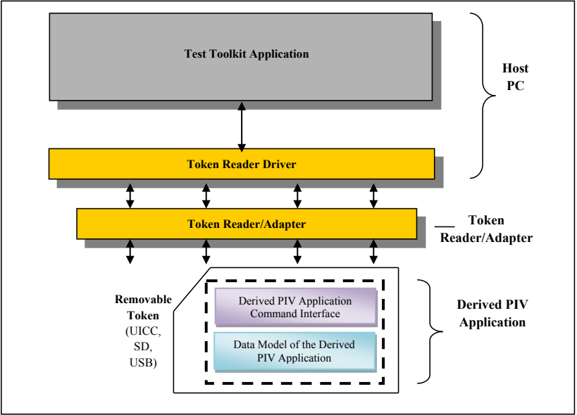
Test Toolkit Application
試験ツールキットアプリケーション
未レビュー訳Host PC
ホストPC
未レビュー訳Token Reader Driver
トークンリーダードライバー
未レビュー訳Token
トークン
未レビュー訳Token Reader/Adapter
トークンリーダー／アダプター
未レビュー訳Reader/Adapter
リーダー／アダプター
未レビュー訳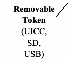
Removable
取り外し可能
未レビュー訳Derived PIV Application
派生PIVアプリケーション
未レビュー訳Derived PIV
派生PIV
未レビュー訳Command Interface
コマンドインターフェース
未レビュー訳Token
トークン
未レビュー訳Application
アプリケーション
未レビュー訳(UICC,
（UICC、
未レビュー訳Data Model of the Derived
派生PIVアプリケーションの
未レビュー訳SD,
SD、
未レビュー訳PIV Application
データモデル
未レビュー訳USB)
USB）
未レビュー訳Figure 1 - Derived PIV Application Conformance Test Architecture
図1－派生PIVアプリケーション適合性試験アーキテクチャ
未レビュー訳The Derived PIV Application resides on the removable hardware cryptographic token,3 implements the commands in the Derived PIV Application command interface,4 and provides access to data objects on the Derived PIV Application.
派生PIVアプリケーションは、取り外し可能なハードウェア暗号トークン上に存在し[3]、派生PIVアプリケーションのコマンドインターフェースに定義されたコマンドを実装し[4]、派生PIVアプリケーション上のデータオブジェクトへのアクセスを提供する。
未レビュー訳Given that [SP800-157] does not specify an application interface or an explicit data model for embedded tokens, vendors may implement Derived PIV Credentials on these devices in a manner of their choosing. Test entities may develop test assertions to test Derived PIV Credentials implemented on such tokens using functional testing developed specifically for the environment and application that they are being used within. Appendix A provides guidelines on testing Derived PIV Credentials (i.e., Derived PIV Authentication certificates) as well as other certificates (digital signature certificate, key management certificates, etc.) that may be stored on embedded tokens.
[SP800-157]は組込み型トークン向けのアプリケーションインターフェースや明示的なデータモデルを規定していないため、ベンダーはこれらのデバイスに派生PIV資格情報を任意の方法で実装できる。試験機関は、対象の環境およびアプリケーション向けに特別に開発した機能試験を用いて、こうしたトークン上に実装された派生PIV資格情報を試験するための試験アサーションを作成できる。付録Aでは、組込み型トークンに保存される派生PIV資格情報（すなわち派生PIV認証証明書）およびその他の証明書（デジタル署名証明書、鍵管理証明書など）の試験ガイドラインを示す。
未レビュー訳2.2 Derived PIV Application Test
2.2 派生PIVアプリケーション試験
未レビュー訳These tests are intended to ensure that tokens with Derived PIV Applications, sold and supplied by vendors, conform to the requirements specified in SP 800-157. In general, these tests cover the following:
これらの試験は、ベンダーが販売・提供する派生PIVアプリケーション搭載トークンが、SP 800-157に規定された要件に適合していることを確認することを目的とする。一般に、試験対象は次のとおり。
+ Transport layer conformance, which ensures interoperability and portability of the Derived PIV Application token between mobile devices.
+ トランスポート層の適合性。モバイルデバイス間で派生PIVアプリケーショントークンの相互運用性および可搬性を確保する。
未レビュー訳+ The Derived PIV Application data object access/storage conformance, which ensures that the application is set up and is conformant to [SP800-157] with regards to data object container sizes, data object identifiers, password requirements as well as the security conditions for accessing and storing each of the associated data objects.
+ 派生PIVアプリケーションのデータオブジェクトアクセス／保存の適合性。データオブジェクトのコンテナサイズ、データオブジェクト識別子、パスワード要件、各データオブジェクトのアクセス・保存に関するセキュリティ条件について、アプリケーションが適切に設定され[SP800-157]に適合していることを確認する。
未レビュー訳+ The Derived PIV Application command interface as per [SP800-157], and includes the security conditions for executing each command in the interface with appropriate response statuses.
+ [SP800-157]に準拠した派生PIVアプリケーションのコマンドインターフェース。インターフェース内の各コマンドを実行する際のセキュリティ条件と、適切な応答ステータスを含む。
未レビュー訳The tests should be performed via test scripts that communicate directly with the hardware cryptographic token through the API of the associated reader drivers and includes the following categories of tests.
試験は、関連するリーダードライバーのAPIを介してハードウェア暗号トークンと直接通信する試験スクリプトで実施し、次の種類の試験を含めるべきである。
2.2.1 Transport Layer Conformance
2.2.1 トランスポート層の適合性
未レビュー訳Transport layer conformance tests ensure that an implementation on a specific removable hardware token (i.e., UICC or USB) is compliant with industry standards specified in [SP800-157] and that portability of the token is achieved across mobile devices.
トランスポート層適合性試験では、特定の取り外し可能なハードウェアトークン（UICCまたはUSB）上の実装が[SP800-157]に規定された業界標準に準拠し、モバイルデバイス間でトークンの可搬性が確保されていることを確認する。
未レビュー訳2.2.2 Derived PIV Application Data Object Access/Storage Conformance
2.2.2 派生PIVアプリケーションのデータオブジェクトアクセス／保存の適合性
未レビュー訳The Derived PIV Application data object access/storage conformance tests ensure that the Derived PIV Application is set up and configured per the requirements specified in [SP800-157]. It covers requirements that apply to the removable hardware cryptographic token and includes testing that covers containers for the following data objects:
派生PIVアプリケーションのデータオブジェクトアクセス／保存適合性試験では、派生PIVアプリケーションが[SP800-157]の要件に従って設定・構成されていることを確認する。取り外し可能なハードウェア暗号トークンに適用される要件を対象とし、次のデータオブジェクト用コンテナを試験する。
+ The one mandatory data object as defined in [SP800-157]:
+ [SP800-157]に規定される必須データオブジェクト1つ：
未レビュー訳 X.509 Certificate for Derived PIV Authentication.
派生PIV認証用X.509証明書。
未レビュー訳+ The twenty-five optional data objects, defined in [SP800-157]:
+ [SP800-157]に規定される任意データオブジェクト25個：
未レビュー訳 X.509 Certificate for Digital Signature,
デジタル署名用X.509証明書、
未レビュー訳 X.509 Certificate for Key Management,
鍵管理用X.509証明書、
未レビュー訳 Discovery Object,
検出オブジェクト、
未レビュー訳 Key History Object,
鍵履歴オブジェクト、
未レビュー訳 20 Retired X.509 Certificates for Key Management, and
失効済み鍵管理用X.509証明書20件、および
未レビュー訳 Security Object.
セキュリティオブジェクト。
未レビュー訳The containers will be validated for the following conditions:
各コンテナについて、次の条件を検証する。
+ Presence of containers for the mandatory data object and all supported optional data objects as specified in the vendor documentation;
+ ベンダー文書に記載された必須データオブジェクトおよびサポート対象の任意データオブジェクトすべてのコンテナが存在すること；
未レビュー訳+ Accessibility and storage of data objects using the appropriate BER-TLV tags (specified identifiers as per Section 4, Part 1 of NIST SP 800-73, Interfaces for Personal Identity Verification [SP800-73]);
+ 適切なBER-TLVタグを使ってデータオブジェクトにアクセス・保存できること（指定識別子はNIST SP 800-73「個人識別確認のためのインターフェース」第1部第4節に準拠[SP800-73]）；
未レビュー訳+ Appropriate container size allocations for each of the data objects;
+ 各データオブジェクトに適切なコンテナサイズが割り当てられていること；
未レビュー訳+ Data objects access rule (password vs. no password); and
+ データオブジェクトのアクセス規則（パスワードあり／なし）；および
未レビュー訳+ Security condition for data objects access/storage (cryptographic authentication).
+ データオブジェクトのアクセス／保存に関するセキュリティ条件（暗号認証）。
未レビュー訳2.2.3 Derived PIV Application Command Interface Conformance
2.2.3 派生PIVアプリケーションのコマンドインターフェース適合性
未レビュー訳These tests will validate that the implementation under test can successfully execute the commands in the Derived PIV Application token command interface as mandated by [SP800-157]. Successful execution constitutes the Derived PIV Application responding with appropriate data and response status words to the commands sent by a test system. It also involves setting state variables per the specification. For example, the criteria for successful execution of the SELECT command involve the following:
これらの試験では、試験対象実装が[SP800-157]で義務付けられた派生PIVアプリケーショントークンのコマンドインターフェースのコマンドを正常に実行できることを検証する。正常な実行とは、試験システムから送信されたコマンドに対し、派生PIVアプリケーションが適切なデータおよび応答ステータスワードを返すことをいう。また、仕様に従って状態変数を設定することも含む。例えば、SELECTコマンドの正常実行基準には次が含まれる。
未レビュー訳+ The response status word returned is '90 00'.
+ 返される応答ステータスワードが '90 00' である。
未レビュー訳+ The application property template is returned with the correct format and content.
+ アプリケーションプロパティテンプレートが正しい形式と内容で返される。
未レビュー訳+ The “Derived PIV Application” is the value of “currently selected application” (state variable)
+ 「Derived PIV Application」が「現在選択されているアプリケーション」（状態変数）の値である。
未レビュー訳The Derived PIV Application token command interface test suite includes conformance tests for the following commands:
派生PIVアプリケーショントークンのコマンドインターフェース試験スイートには、次のコマンドの適合性試験が含まれる。
+ Data access commands–
+ データアクセスコマンド－
未レビュー訳 SELECT
SELECT
未レビュー訳 GET DATA
GET DATA
未レビュー訳+ Authentication commands–
+ 認証コマンド－
未レビュー訳 GENERAL AUTHENTICATE
GENERAL AUTHENTICATE
未レビュー訳 VERIFY
VERIFY
未レビュー訳 CHANGE REFERENCE DATA
CHANGE REFERENCE DATA
未レビュー訳 RESET RETRY COUNTER
RESET RETRY COUNTER
未レビュー訳+ Credential initialization and administration commands–
+ 資格情報の初期化および管理コマンド－
未レビュー訳 PUT DATA
PUT DATA
未レビュー訳 GENERATE ASYMMETRIC KEY PAIR.
GENERATE ASYMMETRIC KEY PAIR.
未レビュー訳The token commands will be validated against the following conditions:
トークンコマンドは次の条件に基づいて検証する。
+ Precondition for use (password, cryptographic authentication),
+ 使用前提条件（パスワード、暗号認証）；
未レビュー訳+ Expected response status word, and
+ 期待される応答ステータスワード；および
未レビュー訳+ Appropriate state variables set in the Derived PIV Application.
+ 派生PIVアプリケーションに適切な状態変数が設定されていること。
未レビュー訳2.3 Data Model of the Derived PIV Application Tests
2.3 派生PIVアプリケーションのデータモデル試験
未レビュー訳These tests are intended to ensure that issuers populate the containers within the Derived PIV Application with data objects that conform to [SP800-157], [SP800-73] and [SP800-78]. In general, these tests cover the following:
これらの試験は、発行者が派生PIVアプリケーション内のコンテナに、[SP800-157]、[SP800-73]、[SP800-78]に準拠するデータオブジェクトを格納していることを確認することを目的とする。一般に、試験対象は次のとおり。
+ Data objects are formatted correctly,
+ データオブジェクトが正しい形式であること；
未レビュー訳+ Field values are in accordance with the specifications, and
+ フィールド値が仕様に準拠していること；および
未レビュー訳+ Data consistency and value computations such as signatures are accurate.
+ データの一貫性と、署名などの値計算が正確であること。
未レビュー訳The tests should be performed via test scripts that communicate directly with the hardware cryptographic token through the API of the associated reader drivers and includes the following categories of tests.
試験は、関連するリーダードライバーのAPIを介してハードウェア暗号トークンと直接通信する試験スクリプトで実施し、次の種類の試験を含めるべきである。
2.3.1 BER-TLV Format Conformance
2.3.1 BER-TLV形式の適合性
未レビュー訳These tests validate that the tags and lengths of various data objects conform to specifications in
これらの試験では、各種データオブジェクトのタグおよび長さが、次の仕様に準拠していることを検証する。
未レビュー訳[SP800-157].
[SP800-157]。
未レビュー訳2.3.2 Signed Data Object Conformance
2.3.2 署名付きデータオブジェクトの適合性
未レビュー訳For the Security Object, the tests check to ensure that the fields in the signature block conform to the Cryptographic Message Syntax (CMS).
セキュリティオブジェクトについては、署名ブロック内のフィールドが暗号メッセージ構文（CMS）に準拠していることを試験で確認する。
2.3.3 PKI Conformance
2.3.3 PKI適合性
未レビュー訳The Public Key Infrastructure (PKI) conformance tests ensure that the mandatory Derived PIV Authentication certificate, the optional digital signature certificate, key management certificates, and the Derived PIV Credential Issuer’s (content signing) certificate, conform to the certificate profiles as specified in the X.509 Certificate and Certificate Revocation List (CRL) Extensions Profile for the Shared Service Providers (SSP) Program [PROF]. Additionally, the Derived PIV Application is also tested to check if asymmetric keys are pairs (public and private components) and are using the appropriate cryptographic algorithms in accordance with NIST SP 800-78, Cryptographic Algorithms and Key Sizes for Personal Identity Verification [SP800-78].
公開鍵基盤（PKI）適合性試験では、必須の派生PIV認証証明書、任意のデジタル署名証明書、鍵管理証明書、および派生PIV資格情報発行者の（コンテンツ署名用）証明書が、「共有サービスプロバイダー（SSP）プログラム向けX.509証明書および証明書失効リスト（CRL）拡張プロファイル」[PROF]に規定された証明書プロファイルに準拠していることを確認する。さらに、派生PIVアプリケーションを試験し、非対称鍵が公開鍵と秘密鍵のペアであること、およびNIST SP 800-78「個人識別確認のための暗号アルゴリズムおよび鍵長」[SP800-78]に従った適切な暗号アルゴリズムを使用していることを確認する。
2.4 Test Setup
2.4 試験のセットアップ
未レビュー訳The test setup for the application and data model tests for the Derived PIV Application consists of the following components:
派生PIVアプリケーションのアプリケーション試験およびデータモデル試験のセットアップは、次の構成要素から成る。
+ Test toolkit application software that resides on a personal computer (PC) with a Universal Serial Bus (USB) port;
+ USBポートを備えたパーソナルコンピュータ（PC）上で動作する試験ツールキットアプリケーションソフトウェア；
未レビュー訳+ Readers and appropriate drivers:
+ リーダーおよび適切なドライバー：
未レビュー訳For implementations on an SD, MiniSD or microSD token5– o
SD、MiniSDまたはmicroSDトークン上の実装の場合[5]－ o
未レビュー訳 A Secure Digital (SD) Memory Card Reader
セキュアデジタル（SD）メモリーカードリーダー
未レビュー訳 A Memory Card Reader Adapter (for Mini, and Micro SD Cards)
メモリーカードリーダーアダプター（Mini SDカードおよびMicro SDカード用）
未レビュー訳For implementation on an UICC token– o
UICCトークンへの実装の場合– o
未レビュー訳 A PC/SC compliant UICC/SIM Card Reader
PC/SC準拠のUICC/SIMカードリーダー
未レビュー訳For implementations on micro USB– o
マイクロUSBへの実装の場合– o
未レビュー訳 A Universal Micro USB to USB Cable;
マイクロUSB－USBケーブル；
未レビュー訳+ The implementation under test (IUT), which could be either:
+ 試験対象実装（IUT）。次のいずれかである：
未レビュー訳•A Derived PIV Application, or
•派生PIVアプリケーション、または
•The data object stored on a Derived PIV Application token.6
•派生PIVアプリケーション・トークンに格納されるデータオブジェクト。6
未レビュー訳3. Test Guidelines Structure
3. 試験ガイドラインの構成
未レビュー訳3.1 Derived Test Requirements
3.1 派生試験要求事項
未レビュー訳Derived test requirements (DTRs) identify conformity conditions based on the normative specifications in [SP800-157] and any other referenced supporting publications (e.g., [FIPS201],
派生試験要求事項（DTR）は、[SP800-157]およびその他の参照される補助刊行物（例：[FIPS201]、
未レビュー訳[SP800-73], [SP800-78]).
[SP800-73]、[SP800-78]）の規範仕様に基づく適合条件を特定する。
未レビュー訳In general, each DTR consists of the following elements:
一般に、各DTRは次の要素から構成される：
1.An Identifier, which is a code starting with ‘DTR’ (Identifiers follow a running sequence based on a logical grouping of requirements);
1.識別子。これは「DTR」で始まるコードである（識別子は、要件を論理的に分類した順に連番で付与される）；
2.A DTR Description, which is a statement taken/derived from the specification. These DTR descriptions include explicit statements using the words "shall," "must," and other terms used to signify the importance of the requirement; and
2.DTRの説明。仕様から引用または導出した記述である。この説明には、要件の重要性を示す「shall」「must」などの語を用いた明示的な記述が含まれる；および
3.For traceability, each DTR includes a reference to the section of [SP800-157], any other applicable specification such as [FIPS201], [SP800-73], [SP800-78] or [PROF] from which the DTR has been taken.
3.トレーサビリティを確保するため、各DTRには、そのDTRの引用元となった[SP800-157]の節、または[FIPS201]、[SP800-73]、[SP800-78]、[PROF]などの該当仕様への参照が含まれる。
3.2 Test Assertions
3.2 試験アサーション
未レビュー訳A test assertion is an action or a set of actions that is performed to measure conformity to one or more DTRs. Test assertions provide procedures to guide the tester in executing and managing the test.
試験アサーションとは、1つ以上のDTRへの適合性を測定するために実施される単一または一連のアクションである。試験アサーションは、試験担当者が試験を実行し管理するための手順を示す。
In general, each test assertion consists of the following elements:
一般に、各試験アサーションは次の要素から構成される：
1.An Identifier, which is a code starting with ‘TA’ (Identifiers follow a running sequence based on categories of tests);
1.識別子。これは「TA」で始まるコードである（識別子は試験のカテゴリに基づき連番で付与される）；
2.The Purpose of the test;
2.試験の目的；
3.For the purpose of traceability, each test assertion makes specific references to the related DTR(s). Overall there is a many-to-many relationship between test assertions and DTRs (i.e., one test assertion can map to many DTRs and one DTR can be mapped to many test assertions);
3.トレーサビリティのため、各試験アサーションは関連するDTRを具体的に参照する。試験アサーションとDTRの間には全体として多対多の関係がある（すなわち、1つの試験アサーションが複数のDTRに対応する場合も、1つのDTRが複数の試験アサーションに対応する場合もある）；
4.Vendor/Issuer Documentation, which specifies the information that is needed in order to be able to execute the test. In general, vendors submit documentation for testing the Derived PIV Application while issuers submit documentation for testing the Data Model of the Derived PIV Application;
4.ベンダー／発行者の文書。試験を実行できるようにするために必要な情報を定める。一般に、ベンダーは派生PIVアプリケーションの試験用文書を提出し、発行者は派生PIVアプリケーションのデータモデルの試験用文書を提出する；
5.Precondition(s), which describe starting conditions and any prerequisites;
5.前提条件。開始時の条件および前提要件を記述する；
6.Test Scenario, which explains the test procedure in steps;
6.試験シナリオ。試験手順を段階ごとに説明する；
7.Expected Result, which specifies the success criteria; and
7.期待される結果。成功基準を定める；および
8.Postcondition(s), which describes the final state after completion of the test scenario.
8.事後条件。試験シナリオの完了後の最終状態を記述する。
The test assertions for some of the DTRs do not have test scenarios. In such cases, documentation and/or test artifacts may be reviewed to determine compliance with the DTR.
一部のDTRに対する試験アサーションには試験シナリオがない。そのような場合は、DTRへの適合性を判断するために、文書および／または試験成果物を確認してもよい。
4. Conformance Criteria
4. 適合基準
未レビュー訳Conformance criteria are based on the compliance of the “conformity condition” under the test with the requirements defined in [SP800-157] or any other referenced special publication (e.g., [FIPS201], [SP800-73], [SP800-78]) The criterion for success for each test assertion is based on the type of test being conducted.
適合基準は、試験対象の「適合条件」が[SP800-157]またはその他の参照される特別刊行物（例：[FIPS201]、[SP800-73]、[SP800-78]）で定められた要件を満たしているかに基づく。各試験アサーションの成功基準は、実施する試験の種類に基づく。
4.1 Conformance Criteria for Derived PIV Application on Removable Tokens
4.1 着脱式トークン上の派生PIVアプリケーションの適合基準
未レビュー訳The Derived PIV Application tests validate conformance to [SP800-157] of a Derived PIV Application developed by a vendor. The criterion for success is documented as part of the expected result or the required vendor documentation for each test assertion. Overall conformance of a removable token’s Derived PIV Application is based on passing the following three categories of tests:
派生PIVアプリケーションの試験では、ベンダーが開発した派生PIVアプリケーションが[SP800-157]に適合するかを検証する。成功基準は、各試験アサーションの期待される結果または必須のベンダー文書の一部として記載される。着脱式トークン上の派生PIVアプリケーション全体の適合性は、次の3種類の試験すべてに合格することに基づく：
1.Transport layer conformance tests,
1.トランスポート層の適合性試験、
2.Derived PIV Application data object access/storage conformance tests, and
2.派生PIVアプリケーションのデータオブジェクトへのアクセス／保存に関する適合性試験、および
3.Derived PIV Application command interface conformance tests.
3.派生PIVアプリケーションのコマンドインターフェース適合性試験。
4.2 Conformance Criteria for Data Model of the Derived PIV Application
4.2 派生PIVアプリケーションのデータモデルの適合基準
未レビュー訳The data model tests validate the data objects that are loaded onto a conformant Derived PIV Application’s removable token by an issuer. The criterion for success is documented as part of the expected result or the required issuer documentation for each test assertion. Overall conformance of the data model of the Derived PIV Application is based on passing the following three categories of tests:
データモデル試験では、発行者が適合する派生PIVアプリケーションの着脱式トークンに読み込むデータオブジェクトを検証する。成功基準は、各試験アサーションの期待される結果または必須の発行者文書の一部として記載される。派生PIVアプリケーションのデータモデル全体の適合性は、次の3種類の試験すべてに合格することに基づく：
1.BER-TLV format conformance tests,
1.BER-TLV形式の適合性試験、
2.Signed Data Object conformance tests, and
2.署名付きデータオブジェクトの適合性試験、および
3.PKI conformance tests.
3.PKI適合性試験。
Testing entities may also validate individual credentials (e.g., Derived PIV Authentication certificate, digital signature certificate, key management certificate) stored on embedded (non-removable) tokens. As described in Appendix A, in many cases it will also be possible to perform functional testing of the corresponding private keys.
試験実施機関は、着脱式でないトークンに格納された個々のクレデンシャル（例：派生PIV認証証明書、電子署名証明書、鍵管理証明書）を検証してもよい。付録Aで説明するように、多くの場合、対応する秘密鍵の機能試験も実施できる。
未レビュー訳5. Test Documentation
5. 試験文書
未レビュー訳There are two sets of documentation that are part of the compliance testing process: vendor/issuer provided and testing entity generated. These documentations apply to both: (i) Derived PIV Application tests and (ii) Data Model of the Derived PIV Application tests.
適合性試験のプロセスに関係する文書は、ベンダー／発行者が提供するものと試験実施機関が作成するものの2種類である。これらの文書は、(i) 派生PIVアプリケーションの試験、および (ii) 派生PIVアプリケーションのデータモデルの試験の両方に適用される。
The vendor/issuer documentation consists of the following:
ベンダー／発行者の文書には次のものが含まれる：
+ Technical documentation: Technical details for the Derived PIV Application and its data model (as implemented). It includes, at a minimum, all the required information necessary to meet individual test assertions as documented in Section 8 (Test Assertions for the Derived PIV Application) or Section 9 (Test Assertions for the Data Model of the Derived PIV Application) of this document, depending on which tests are being performed; and
+ 技術文書：実装された派生PIVアプリケーションおよびそのデータモデルの技術的詳細。少なくとも、実施する試験に応じて、この文書の第8節（派生PIVアプリケーションの試験アサーション）または第9節（派生PIVアプリケーションのデータモデルの試験アサーション）に記載された各試験アサーションを満たすために必要な情報をすべて含む；および
未レビュー訳+ Security-related information: (a) Derived PIV Application Password, (b) Password Unblocking Key (PUK), (c) cryptographic algorithms supported by the application, and (d) the number of unsuccessful attempts using: (i) wrong Derived PIV Application Password and (ii) wrong PUK.
+ セキュリティ関連情報：(a) 派生PIVアプリケーションのパスワード、(b) パスワードロック解除キー（PUK）、(c) アプリケーションがサポートする暗号アルゴリズム、および (d) 次の誤入力による失敗回数：(i) 誤った派生PIVアプリケーション・パスワード、(ii) 誤ったPUK。
未レビュー訳The testing entity documents are generated during testing and report test results. They include:
試験実施機関の文書は試験中に作成され、試験結果を報告する。これらには次のものが含まれる：
+ Test logs: A test log is kept for each test run on any component and is used to summarize the results of all the tests run; and
+ 試験ログ：各コンポーネントに対する各試験実行についてログを作成し、実行したすべての試験結果の要約に用いる；および
未レビュー訳+ Test reports: These provide the background (environmental information) for each of the test assertions as well as summary of outcomes from test runs (from test logs) associated with each test assertion.
+ 試験報告書：各試験アサーションの背景（環境情報）と、試験アサーションごとの試験実行（試験ログに記録）結果の要約を示す。
未レビュー訳原本PDFの抜粋画像

This section lists requirements that apply to a Derived PIV Application resident on a removable token, such as an SD card, USB token, or UICC, that may be inserted into mobile devices. The requirements are aimed towards vendors of Derived PIV Applications to ensure that these applications are implemented correctly and are in accordance to the specification.
この節では、モバイル機器に挿入できるSDカード、USBトークン、UICCなどの着脱式トークン上に存在する派生PIVアプリケーションに適用される要件を列挙する。これらの要件は、派生PIVアプリケーションが正しく実装され、仕様に準拠するよう、そのベンダーを対象としている。
6.1 Transport Layer Conformance7
6.1 トランスポート層の適合性7
未レビュー訳6.1.1 UICC
6.1.1 UICC
未レビュー訳| DTR No: | DTR Description | Spec. Reference |
| DTR-06.01.01.01 | For a Universal Integrated Circuit Card (UICC) used to host a Derived PIV Application, the UICC shall implement the GlobalPlatform Card Secure Element Configuration v1.0 [GPSE]. | • [SP800-157], Section 3.3.1.2 - Removable UICC with Cryptographic Module |
原本PDFの抜粋画像
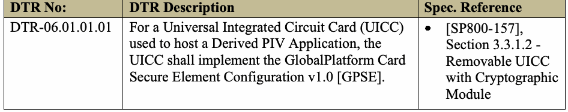
| DTR番号： | DTRの説明 | 仕様参照箇所 |
| DTR-06.01.01.01 | 派生PIVアプリケーションをホストするために使用されるユニバーサル集積回路カード（UICC）は、GlobalPlatform Card Secure Element Configuration v1.0 [GPSE]を実装しなければならない。 | • [SP800-157]、第3.3.1.2節—暗号モジュール搭載の着脱式UICC |
6.1.2 USB
6.1.2 USB
未レビュー訳| DTR No: | DTR Description | Spec. Reference |
| DTR-06.01.02.01 | For a USB Integrated Circuit(s) Card Device (ICCD) used to host a Derived PIV Application, the ICCD shall comply with the Universal Serial Bus Device Class - Smart Card ICCD Specification for USB Integrated Circuit(s) Card Devices [ICCDSPEC]. | • [SP800-157], Section 3.3.1.3 - USB Token with Cryptographic Module |
| DTR-06.01.02.02 | USB tokens with cryptographic modules that support a Derived PIV Application shall be compliant with the specifications in SP 800-96, PIV Card to Reader Interoperability Guidelines [SP800-96], for Application Protocol Data Unit (APDU) support for contact card readers. | • [SP800-157], Section 3.3.1.3 - USB Token with Cryptographic Module |
| DTR-06.01.02.03 | The APDUs for the Derived PIV Application (as specified in Appendix B of [SP800-157]) shall be transported to the secure element using the Bulk-Out command pipe and the responses shall be received from the secure element using the Bulk-In command pipe. | • [SP800-157], Section 3.3.1.3 - USB Token with Cryptographic Module |
原本PDFの抜粋画像
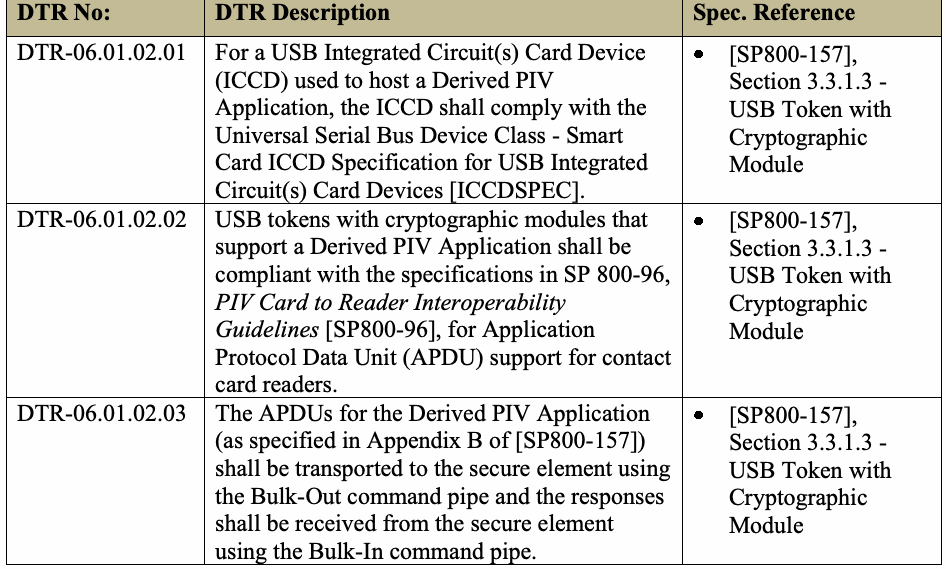
| DTR番号： | DTRの説明 | 仕様参照箇所 |
| DTR-06.01.02.01 | 派生PIVアプリケーションをホストするために使用されるUSB集積回路カードデバイス（ICCD）は、USB集積回路カードデバイス向けUniversal Serial Bus Device Class - Smart Card ICCD Specification [ICCDSPEC]に準拠しなければならない。 | • [SP800-157]、第3.3.1.3節—暗号モジュール搭載のUSBトークン |
| DTR-06.01.02.02 | 派生PIVアプリケーションをサポートする暗号モジュール搭載USBトークンは、接触型カードリーダーのアプリケーションプロトコルデータユニット（APDU）サポートに関して、SP 800-96『PIVカードとリーダーの相互運用ガイドライン』[SP800-96]の仕様に準拠しなければならない。 | • [SP800-157]、第3.3.1.3節—暗号モジュール搭載のUSBトークン |
| DTR-06.01.02.03 | 派生PIVアプリケーションのAPDU（[SP800-157]の付録Bに規定）は、Bulk-Outコマンドパイプを用いてセキュアエレメントに伝送しなければならない。また、応答はBulk-Inコマンドパイプを用いてセキュアエレメントから受信しなければならない。 | • [SP800-157]、第3.3.1.3節—暗号モジュール搭載のUSBトークン |
6.2 Derived PIV Application Data Object Access/Storage Conformance
6.2 派生PIVアプリケーションのデータオブジェクトのアクセス／保管に関する適合性
未レビュー訳6.2.1 General
6.2.1 一般
未レビュー訳| DTR No: | DTR Description | Spec. Reference |
| DTR-06.02.01.01 | The Derived PIV Application shall only support a contact interface. | • [SP800-157], Appendix B.1.2.1 - Derived PIV Application Data Object Containers and associated Access Rules |
| DTR-06.02.01.02 | There shall be at most one Derived PIV Application on any hardware cryptographic token. | • [SP800-157], Appendix B.2 - Derived PIV Application Token Command Interface • [SP800-73], Part 2, Section 3.1.1 - SELECT Card Command |
| DTR-06.02.01.03 | The AID of the Derived Personal Identity Verification Application shall be: 'A0 00 00 03 08 00 00 20 00 01 00'. | • [SP800-157], Appendix B.1.1 - Derived PIV Application Identifier |
原本PDFの抜粋画像
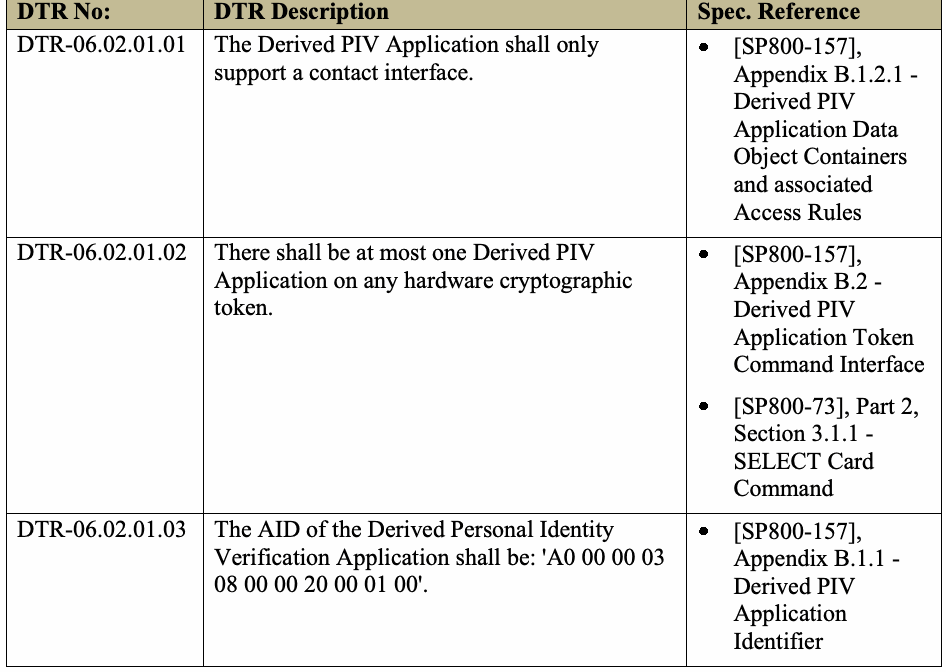
| DTR番号： | DTRの説明 | 仕様参照箇所 |
| DTR-06.02.01.01 | 派生PIVアプリケーションは、接触インターフェースのみをサポートしなければならない。 | • [SP800-157]、付録B.1.2.1—派生PIVアプリケーションのデータオブジェクト・コンテナおよび関連するアクセス規則 |
| DTR-06.02.01.02 | 各ハードウェア暗号トークン上に存在できる派生PIVアプリケーションは最大1つでなければならない。 | • [SP800-157]、付録B.2—派生PIVアプリケーションのトークン・コマンドインターフェース • [SP800-73]第2部、第3.1.1節—SELECTカードコマンド |
| DTR-06.02.01.03 | 派生個人識別検証（PIV）アプリケーションのAIDは、'A0 00 00 03 08 00 00 20 00 01 00'でなければならない。 | • [SP800-157]、付録B.1.1—派生PIVアプリケーション識別子 |
6.2.2 Derived PIV Application Data Objects and Representation
6.2.2 派生PIVアプリケーションのデータオブジェクトと表現
未レビュー訳| DTR No: | DTR Description | Spec. Reference |
| DTR-06.02.02.01 | The Derived PIV Application shall contain an X.509 Certificate for Derived PIV Authentication container and optionally the following containers: (i) X.509 Certificate for Digital Signature, (ii) X.509 Certificate for Key Management, (iii) Discovery Object, (iv) Key History Object, (v) up to 20 Retired X.509 Certificates for Key Management and (vi) Security Object. | • [SP800-157], Appendix B.1.2 - Derived PIV Application Data Model Elements • [SP800-73], Part 1, Appendix A - PIV Data Model, Table 10 |
| DTR-06.02.02.02 | The minimum capacity for the X.509 Certificate for Derived PIV Authentication shall be 1905 bytes. | • [SP800-73], Part 1, Appendix A - PIV Data Model, Table 7 |
原本PDFの抜粋画像
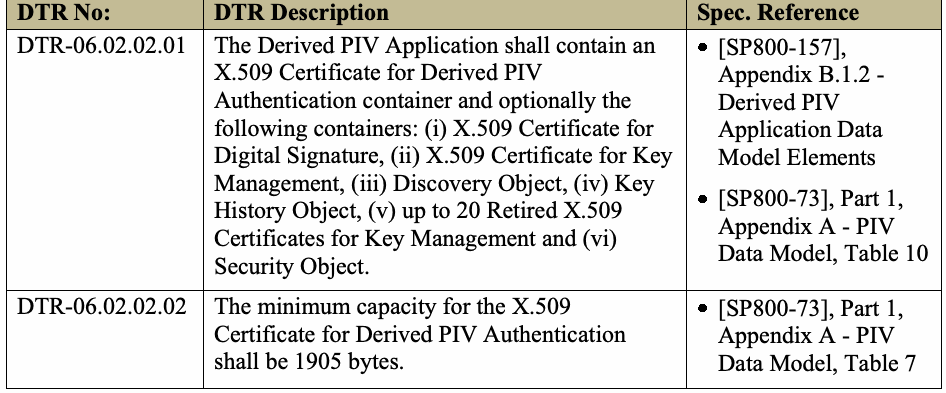
| DTR番号： | DTRの説明 | 仕様参照箇所 |
| DTR-06.02.02.01 | 派生PIVアプリケーションは、派生PIV認証用X.509証明書コンテナを含まなければならず、さらに次のコンテナを任意で含めてもよい：(i) 電子署名用X.509証明書、(ii) 鍵管理用X.509証明書、(iii) Discovery Object、(iv) Key History Object、(v) 最大20個の鍵管理用失効X.509証明書、および (vi) Security Object。 | • [SP800-157]、付録B.1.2—派生PIVアプリケーションのデータモデル要素 • [SP800-73]第1部、付録A—PIVデータモデル、表10 |
| DTR-06.02.02.02 | 派生PIV認証用X.509証明書の最小容量は1905バイトでなければならない。 | • [SP800-73]第1部、付録A—PIVデータモデル、表7 |
| DTR No: | DTR Description | Spec. Reference |
| DTR-06.02.02.03 | The minimum capacity for the X.509 Certificate for Digital Signature shall be 1905 bytes. | • [SP800-73], Part 1, Appendix A - PIV Data Model, Table 7 |
| DTR-06.02.02.04 | The minimum capacity for the X.509 Certificate for Key Management shall be 1905 bytes. | • [SP800-73], Part 1, Appendix A - PIV Data Model, Table 7 |
| DTR-06.02.02.05 | The minimum capacity for the Discovery Object shall be 19 bytes. | • [SP800-73], Part 1, Appendix A - PIV Data Model, Table 7 |
| DTR-06.02.02.06 | The minimum capacity for the Key History Object shall be 128 bytes. | • [SP800-73], Part 1, Appendix A - PIV Data Model, Table 7 |
| DTR-06.02.02.07 | The minimum capacity for each Retired X.509 Certificate for Key Management shall be 1905 bytes. | • [SP800-73], Part 1, Appendix A - PIV Data Model, Table 7 |
| DTR-06.02.02.08 | The minimum capacity for the Security Object container shall be 3000 bytes. | • [SP800-157], Appendix B.1.2.1 - Derived PIV Application Data Object Containers and associated Access Rules |
| DTR-06.02.02.09 | The status words that may be returned on the Derived PIV Application command interface are as specified in Section 5.6 of [SP800-73], Part 1. | • [SP800-157], Appendix B.4.3 - Derived PIV Application Status Words |
| DTR-06.02.02.10 | “Basic encoding rules – tag length value” (BER-TLV) tags for the various mandatory and optional data objects within the Derived PIV Application are the same as for the corresponding data objects (mapped as per the Table B-1 of [SP800-157]) of the PIV Card Application as described in Section 4 of [SP800-73], Part 1. | • [SP800-157], Appendix B.1.3 - Derived PIV Application Data Objects Representation |
| DTR-06.02.02.11 | Key reference values used on the Derived PIV Application interfaces shall be in accordance with Table 6-1 of [SP800-78] and Table 4a and Table 4b of [SP800-73], Part 1 with the mappings defined in Table B-2 of [SP800-157]. | • [SP800-157], Appendix B.1.4.1 - Derived PIV Application Key References and Security Conditions of Use |
原本PDFの抜粋画像
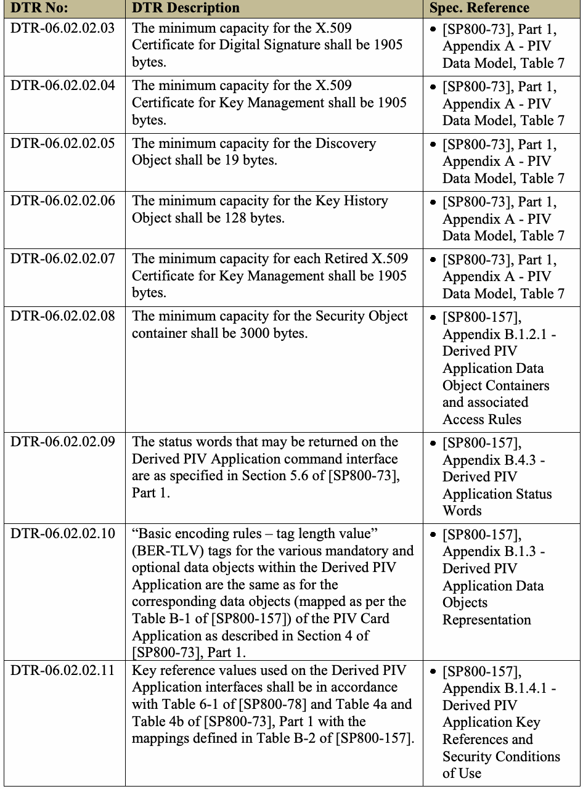
| DTR番号： | DTRの説明 | 仕様参照箇所 |
| DTR-06.02.02.03 | 電子署名用X.509証明書の最小容量は1905バイトでなければならない。 | • [SP800-73]第1部、付録A—PIVデータモデル、表7 |
| DTR-06.02.02.04 | 鍵管理用X.509証明書の最小容量は1905バイトでなければならない。 | • [SP800-73]第1部、付録A—PIVデータモデル、表7 |
| DTR-06.02.02.05 | Discovery Objectの最小容量は19バイトでなければならない。 | • [SP800-73]第1部、付録A—PIVデータモデル、表7 |
| DTR-06.02.02.06 | Key History Objectの最小容量は128バイトでなければならない。 | • [SP800-73]第1部、付録A—PIVデータモデル、表7 |
| DTR-06.02.02.07 | 鍵管理用の失効X.509証明書1つあたりの最小容量は1905バイトでなければならない。 | • [SP800-73]第1部、付録A—PIVデータモデル、表7 |
| DTR-06.02.02.08 | Security Objectコンテナの最小容量は3000バイトでなければならない。 | • [SP800-157]、付録B.1.2.1—派生PIVアプリケーションのデータオブジェクト・コンテナおよび関連するアクセス規則 |
| DTR-06.02.02.09 | 派生PIVアプリケーションのコマンドインターフェースが返す場合のあるステータスワードは、[SP800-73]第1部の第5.6節に規定されているとおりである。 | • [SP800-157]、付録B.4.3—派生PIVアプリケーションのステータスワード |
| DTR-06.02.02.10 | 派生PIVアプリケーション内の各必須／任意データオブジェクトの「基本符号化規則—タグ・長さ・値」（BER-TLV）タグは、[SP800-157]の表B-1に従って対応付けられるPIVカード・アプリケーションの対応するデータオブジェクトについて、[SP800-73]第1部第4節に記載されたものと同じである。 | • [SP800-157]、付録B.1.3—派生PIVアプリケーションのデータオブジェクト表現 |
| DTR-06.02.02.11 | 派生PIVアプリケーションの各インターフェースで使用する鍵参照値は、[SP800-157]の表B-2に定義された対応付けに従い、[SP800-78]の表6-1および[SP800-73]第1部の表4aと表4bに準拠しなければならない。 | • [SP800-157]、付録B.1.4.1—派生PIVアプリケーションの鍵参照および使用時のセキュリティ条件 |
| DTR No: | DTR Description | Spec. Reference |
| DTR-06.02.02.12 | The algorithm identifiers for the cryptographic algorithms that may be recognized on the Derived PIV Application interfaces are the asymmetric and symmetric identifiers specified in Table 6-2 and Table 6-3 of [SP800-78]. The cryptographic mechanism identifiers that may be recognized on the Derived PIV Application interfaces are those specified in Table 5 of [SP800-73], Part 1. | • [SP800-157], Appendix B.1.4.2 - Derived PIV Application Cryptographic Algorithm and Mechanism Identifiers |
| DTR-06.02.02.13 | The Derived PIV Application Password shall be between 6 and 8 bytes in length. The Derived PIV Application shall enforce the minimum length requirement of six bytes for the Derived PIV Application Password (i.e., shall verify that at least the first six bytes of the value presented to the token command interface are in the range [0x30 – 0x39, 0x41 – 0x5A, 0x61 – 0x7A]). | • [SP800-157], Appendix B.2.1 - Authentication of an Individual |
| DTR-06.02.02.14 | If the actual length of the Derived PIV Application Password is less than 8 bytes, it shall be padded to 8 bytes with 'FF' when presented to the token command interface. The 'FF' padding bytes shall be appended to the actual value of the password. | • [SP800-157], Appendix B.2.1 - Authentication of an Individual |
| DTR-06.02.02.15 | The bytes comprising the Derived PIV Application Password shall be limited to values 0x30 – 0x39, 0x41 – 0x5A, and 0x61 – 0x7A, the ASCII values for the decimal digits '0' – '9', upper case characters 'A' – 'Z', and lower case characters 'a' – 'z' respectively. | • [SP800-157], Appendix B.2.1 - Authentication of an Individual |
原本PDFの抜粋画像
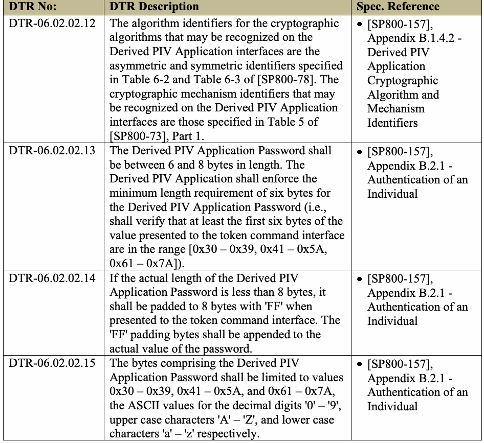
| DTR番号： | DTRの説明 | 仕様参照箇所 |
| DTR-06.02.02.12 | 派生PIVアプリケーションのインターフェースで認識される場合のある暗号アルゴリズム識別子は、[SP800-78]の表6-2および表6-3に規定された非対称および対称識別子である。同インターフェースで認識される場合のある暗号メカニズム識別子は、[SP800-73]第1部の表5に規定されたものである。 | • [SP800-157]、付録B.1.4.2—派生PIVアプリケーションの暗号アルゴリズム識別子およびメカニズム識別子 |
| DTR-06.02.02.13 | 派生PIVアプリケーション・パスワードの長さは6～8バイトでなければならない。派生PIVアプリケーションは、同パスワードの最小長6バイトの要件を強制しなければならない（すなわち、トークンのコマンドインターフェースに提示された値の少なくとも先頭6バイトが[0x30 – 0x39, 0x41 – 0x5A, 0x61 – 0x7A]の範囲にあることを確認しなければならない）。 | • [SP800-157]、付録B.2.1—個人の認証 |
| DTR-06.02.02.14 | 派生PIVアプリケーション・パスワードの実際の長さが8バイト未満の場合、トークンのコマンドインターフェースに提示するときに'FF'で8バイトにパディングしなければならない。'FF'のパディングバイトは、パスワードの実際の値の末尾に追加しなければならない。 | • [SP800-157]、付録B.2.1—個人の認証 |
| DTR-06.02.02.15 | 派生PIVアプリケーション・パスワードを構成するバイトは、0x30 – 0x39、0x41 – 0x5A、および0x61 – 0x7Aの値に限定しなければならない。これらはそれぞれ、10進数字'0' – '9'、大文字'A' – 'Z'、小文字'a' – 'z'のASCII値である。 | • [SP800-157]、付録B.2.1—個人の認証 |
6.3 Derived PIV Application Command Interface Conformance
6.3 派生PIVアプリケーションのコマンドインターフェース適合性
未レビュー訳6.3.1 General
6.3.1 一般
未レビュー訳| DTR No: | DTR Description | Spec. Reference |
| DTR-06.03.01.01 | The command interface for the Derived PIV Application shall implement all of the card commands supported by the PIV Card Application as described in [SP800-73], Part 2, which include: SELECT, GET DATA, VERIFY, CHANGE REFERENCE DATA, RESET RETRY COUNTER, GENERAL AUTHENTICATE, PUT DATA, GENERATE ASYMMETRIC KEY PAIR. | • [SP800-157], Appendix B.2 - Derived PIV Application Token Command Interface |
原本PDFの抜粋画像
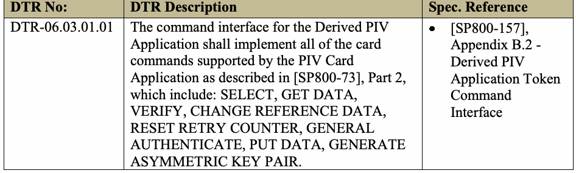
| DTR番号： | DTRの説明 | 仕様参照箇所 |
| DTR-06.03.01.01 | 派生PIVアプリケーションのコマンドインターフェースは、[SP800-73]第2部に記載されているPIVカード・アプリケーションがサポートするすべてのカードコマンドを実装しなければならない。対象にはSELECT、GET DATA、VERIFY、CHANGE REFERENCE DATA、RESET RETRY COUNTER、GENERAL AUTHENTICATE、PUT DATA、GENERATE ASYMMETRIC KEY PAIRが含まれる。 | • [SP800-157]、付録B.2—派生PIVアプリケーションのトークン・コマンドインターフェース |
| DTR No: | DTR Description | Spec. Reference |
| DTR-06.03.01.02 | Token commands indicated with a 'Yes' in the Command Chaining column in Table 2 of [SP800-73], Part 2 shall support command chaining for transmitting a data string too long for a single command as defined in [ISO7816- 4]. | • [SP800-73], Part 2, Section 3 - PIV Card Application Card Command Interface |
原本PDFの抜粋画像
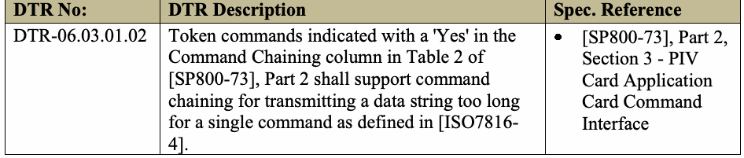
| DTR番号： | DTRの説明 | 仕様参照箇所 |
| DTR-06.03.01.02 | [SP800-73]第2部の表2でCommand Chaining列が'Yes'と示されるトークンコマンドは、単一のコマンドには長すぎるデータ文字列を伝送するため、[ISO7816- 4]で定義されるコマンド連鎖をサポートしなければならない。 | • [SP800-73]第2部、第3節—PIVカード・アプリケーションのカードコマンドインターフェース |
6.3.2 SELECT Command
6.3.2 SELECTコマンド
未レビュー訳| DTR No: | DTR Description | Spec. Reference |
| DTR-06.03.02.01 | The Derived PIV Application can be selected as the current application on the removable hardware cryptographic token by providing the full AID as follows: 'A0 00 00 03 08 00 00 20 00 01 00'. | • [SP800-157], Appendix B.1.1 - Derived PIV Application Identifier |
| DTR-06.03.02.02 | The token platform shall support a default selected application. In other words, there shall be a currently selected application immediately after a cold or warm reset. This application is the default selected application. The default application may be the Derived PIV Application, or it may be another application. | • [SP800-157], Appendix B.2 - Derived PIV Application Token Command Interface |
| DTR-06.03.02.03 | Upon selection, the Derived PIV Application shall return the application property template described in Table 3 of [SP800-73], Part 2, with the exception that the returned AID is the AID listed in Appendix B.1.1 of [SP800-157]. | • [SP800-157], Appendix B.2 - Derived PIV Application Token Command Interface • [SP800-73], Part 2, Section 3.1.1 - SELECT Card Command |
| DTR-06.03.02.04 | The Derived PIV Application can also be made the currently selected application by providing a right-truncated version – that is, without the two-byte version number, '01 00' – in the data field of the SELECT command 'A0 00 00 03 08 00 00 20 00' | • [SP800-157], Appendix B.2 - Derived PIV Application Token Command Interface • [SP800-73], Part 2, Section 3.1.1 - SELECT Card Command |
原本PDFの抜粋画像
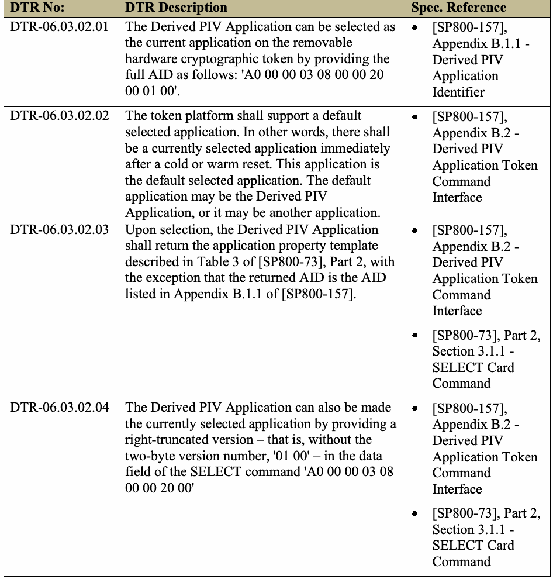
| DTR番号： | DTRの説明 | 仕様参照箇所 |
| DTR-06.03.02.01 | 着脱式ハードウェア暗号トークン上で、次の完全なAIDを提示することにより、派生PIVアプリケーションを現在のアプリケーションとして選択できる：'A0 00 00 03 08 00 00 20 00 01 00'。 | • [SP800-157]、付録B.1.1—派生PIVアプリケーション識別子 |
| DTR-06.03.02.02 | トークンプラットフォームは、既定で選択されるアプリケーションをサポートしなければならない。すなわち、コールドリセットまたはウォームリセットの直後に、現在選択されているアプリケーションが存在しなければならない。このアプリケーションが既定で選択されるアプリケーションである。既定のアプリケーションは、派生PIVアプリケーションでも、別のアプリケーションでもよい。 | • [SP800-157]、付録B.2—派生PIVアプリケーションのトークン・コマンドインターフェース |
| DTR-06.03.02.03 | 選択されると、派生PIVアプリケーションは、返されるAIDが[SP800-157]の付録B.1.1に記載されたAIDである点を除き、[SP800-73]第2部の表3に記載されたアプリケーション・プロパティ・テンプレートを返さなければならない。 | • [SP800-157]、付録B.2—派生PIVアプリケーションのトークン・コマンドインターフェース • [SP800-73]第2部、第3.1.1節—SELECTカードコマンド |
| DTR-06.03.02.04 | SELECTコマンドのデータフィールドに右側を切り詰めたバージョン（すなわち、2バイトのバージョン番号'01 00'を除いたもの）である'A0 00 00 03 08 00 00 20 00'を提示することによっても、派生PIVアプリケーションを現在選択されているアプリケーションにできる。 | • [SP800-157]、付録B.2—派生PIVアプリケーションのトークン・コマンドインターフェース • [SP800-73]第2部、第3.1.1節—SELECTカードコマンド |
| DTR No: | DTR Description | Spec. Reference |
| DTR-06.03.02.05 | The complete AID, including the two-byte version, of the Derived PIV Application that became the currently selected application upon successful execution of the SELECT command (using the full or right-truncated PIV AID) shall be returned in the application property template. | • [SP800-157], Appendix B.2 - Derived PIV Application Token Command Interface • [SP800-73], Part 2, Section 3.1.1 - SELECT Card Command |
| DTR-06.03.02.06 | If the currently selected application is the Derived PIV Application when the SELECT command is sent and the AID in the data field of the SELECT command is either the AID of the Derived PIV Application or its right- truncated version thereof, then the Derived PIV Application shall continue to be the currently selected application and the setting of all security status indicators in the Derived PIV Application shall be unchanged. | • [SP800-157], Appendix B.2 - Derived PIV Application Token Command Interface • [SP800-73], Part 2, Section 3.1.1 - SELECT Card Command |
| DTR-06.03.02.07 | If the currently selected application is the Derived PIV Application when the SELECT command is sent and the AID in the data field of the SELECT command is an invalid AID, then the Derived PIV Application shall remain the currently selected application and the Derived PIV Application security status indicator shall remain unchanged. | • [SP800-157], Appendix B.2 - Derived PIV Application Token Command Interface • [SP800-73], Part 2, Section 3.1.1 - SELECT Card Command |
| DTR-06.03.02.08 | If the currently selected application is the Derived PIV Application when the SELECT command is given and the AID in the data field of the SELECT command is not the Derived PIV Application (nor the right-truncated version thereof), but a valid AID supported by the token, then the Derived PIV Application shall be deselected and the Derived PIV Application security status indicators in the Derived PIV Application shall be set to FALSE. | • [SP800-157], Appendix B.2 - Derived PIV Application Token Command Interface • [SP800-73], Part 2, Section 3.1.1 - SELECT Card Command |
原本PDFの抜粋画像
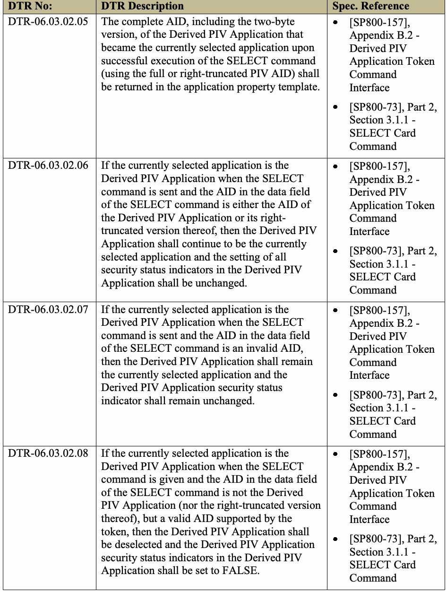
| DTR番号： | DTRの説明 | 仕様参照箇所 |
| DTR-06.03.02.05 | 完全なPIV AIDまたは右側を切り詰めたPIV AIDを用いたSELECTコマンドが正常に実行され、派生PIVアプリケーションが現在選択されると、2バイトのバージョンを含む完全なAIDをアプリケーション・プロパティ・テンプレート内に返さなければならない。 | • [SP800-157]、付録B.2—派生PIVアプリケーションのトークン・コマンドインターフェース • [SP800-73]第2部、第3.1.1節—SELECTカードコマンド |
| DTR-06.03.02.06 | SELECTコマンドの送信時に現在選択されているアプリケーションが派生PIVアプリケーションであり、SELECTコマンドのデータフィールド内のAIDが派生PIVアプリケーションのAIDまたはその右側を切り詰めたバージョンである場合、派生PIVアプリケーションは引き続き現在選択されたアプリケーションでなければならず、同アプリケーション内のすべてのセキュリティ状態指標の設定は変更されてはならない。 | • [SP800-157]、付録B.2—派生PIVアプリケーションのトークン・コマンドインターフェース • [SP800-73]第2部、第3.1.1節—SELECTカードコマンド |
| DTR-06.03.02.07 | SELECTコマンドの送信時に現在選択されているアプリケーションが派生PIVアプリケーションであり、SELECTコマンドのデータフィールド内のAIDが無効なAIDである場合、派生PIVアプリケーションは引き続き現在選択されたアプリケーションでなければならず、そのセキュリティ状態指標は変更されてはならない。 | • [SP800-157]、付録B.2—派生PIVアプリケーションのトークン・コマンドインターフェース • [SP800-73]第2部、第3.1.1節—SELECTカードコマンド |
| DTR-06.03.02.08 | SELECTコマンドの実行時に現在選択されているアプリケーションが派生PIVアプリケーションであり、SELECTコマンドのデータフィールド内のAIDが派生PIVアプリケーションのAID（またはその右側を切り詰めたバージョン）ではないものの、トークンがサポートする有効なAIDである場合、派生PIVアプリケーションの選択を解除し、そのセキュリティ状態指標をFALSEに設定しなければならない。 | • [SP800-157]、付録B.2—派生PIVアプリケーションのトークン・コマンドインターフェース • [SP800-73]第2部、第3.1.1節—SELECTカードコマンド |
6.3.3 GET DATA Command
6.3.3 GET DATAコマンド
未レビュー訳| DTR No: | DTR Description | Spec. Reference |
| DTR-06.03.03.01 | The GET DATA command retrieves the data content of the single data object whose tag is given in the data field. | • [SP800-157], Appendix B.2 - Derived PIV Application Token Command Interface • [SP800-73], Part 2, Section 3.1.2 - GET DATA Card Command |
| DTR-06.03.03.02 | The L value is '05' for all Derived PIV data c objects except for the 0x7E interindustry tag (Discovery Object), which has an L value of c '03'. | • [SP800-157], Appendix B.2 - Derived PIV Application Token Command Interface • [SP800-73], Part 2, Section 3.1.2 - GET DATA Card Command |
| DTR-06.03.03.03 | The GET RESPONSE command is used in conjunction with GET DATA to accomplish the reading of larger Derived PIV data objects. | • [SP800-73], Part 2, Section 3.1.2 - GET DATA Card Command |
原本PDFの抜粋画像
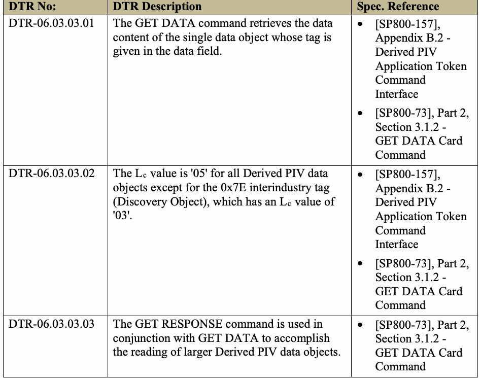
| DTR番号： | DTRの説明 | 仕様参照箇所 |
| DTR-06.03.03.01 | GET DATAコマンドは、データフィールドで指定されたタグを持つ単一のデータオブジェクトのデータ内容を取得する。 | • [SP800-157]、付録B.2—派生PIVアプリケーションのトークン・コマンドインターフェース • [SP800-73]第2部、第3.1.2節—GET DATAカードコマンド |
| DTR-06.03.03.02 | 0x7Eの業界間タグ（Discovery Object）を除き、すべての派生PIVデータcオブジェクトのL値は'05'である。例外となるタグのL値はc '03'である。 | • [SP800-157]、付録B.2—派生PIVアプリケーションのトークン・コマンドインターフェース • [SP800-73]第2部、第3.1.2節—GET DATAカードコマンド |
| DTR-06.03.03.03 | 大きな派生PIVデータオブジェクトを読み取るには、GET DATAと組み合わせてGET RESPONSEコマンドを使用する。 | • [SP800-73]第2部、第3.1.2節—GET DATAカードコマンド |
6.3.4 GENERAL AUTHENTICATE Command
6.3.4 GENERAL AUTHENTICATEコマンド
未レビュー訳| DTR No: | DTR Description | Spec. Reference |
| DTR-06.03.04.01 | The GENERAL AUTHENTICATE command shall be used with the Derived PIV authentication keys ('9A' and '9B') using cryptographic algorithms from Table 6-2 of [SP800-78] to authenticate the token or a token application to the client application (INTERNAL AUTHENTICATE), to authenticate an entity to the token (EXTERNAL AUTHENTICATE), and to perform a mutual authentication between the token and an entity external to the token (MUTUAL AUTHENTICATE). | • [SP800-157], Appendix B.2 - Derived PIV Application Token Command Interface • [SP800-73], Part 2, Section 3.2.4 - GENERAL AUTHENTICATE Card Command |
原本PDFの抜粋画像
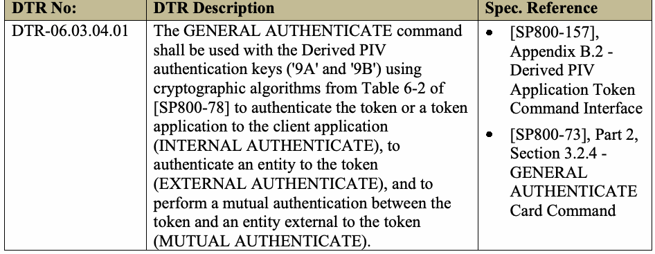
| DTR番号： | DTRの説明 | 仕様参照箇所 |
| DTR-06.03.04.01 | GENERAL AUTHENTICATEコマンドは、[SP800-78]の表6-2にある暗号アルゴリズムを使用し、派生PIV認証鍵（'9A'および'9B'）とともに用いなければならない。このコマンドにより、トークンまたはトークン上のアプリケーションをクライアント・アプリケーションに対して認証（INTERNAL AUTHENTICATE）し、エンティティをトークンに対して認証（EXTERNAL AUTHENTICATE）し、さらにトークンとトークン外部のエンティティとの相互認証（MUTUAL AUTHENTICATE）を実行する。 | • [SP800-157]、付録B.2—派生PIVアプリケーションのトークン・コマンドインターフェース • [SP800-73]第2部、第3.2.4節—GENERAL AUTHENTICATEカードコマンド |
| DTR No: | DTR Description | Spec. Reference |
| DTR-06.03.04.02 | The GENERAL AUTHENTICATE command shall be used with the digital signature key ('9C') (if implemented) to realize the signing functionality on the Derived PIV Application programming interface using cryptographic algorithms specified in Table 3-1 of [SP800- 78]. | • [SP800-157], Appendix B.2 - Derived PIV Application Token Command Interface • [SP800-73], Part 2, Section 3.2.4 - GENERAL AUTHENTICATE Card Command |
| DTR-06.03.04.03 | The GENERAL AUTHENTICATE command shall be used with the key management key ('9D') (if implemented) and the retired key management keys ('82' – '95') (if implemented) to realize key establishment schemes specified in [SP800-78] (ECDH and RSA). | • [SP800-157], Appendix B.2 - Derived PIV Application Token Command Interface • [SP800-73], Part 2, Section 3.2.4 - GENERAL AUTHENTICATE Card Command |
| DTR-06.03.04.04 | The GENERAL AUTHENTICATE command supports command chaining to permit the uninterrupted transmission of long command data fields to the Derived PIV Application. If a token command other than the GENERAL AUTHENTICATE command is received by the Derived PIV Application before the termination of a GENERAL AUTHENTICATE chain, then the Derived PIV Application shall rollback to the state it was in immediately prior to the reception of the first command in the interrupted chain. In other words, an interrupted GENERAL AUTHENTICATE chain has no effect on the Derived PIV Application. | • [SP800-157], Appendix B.2 - Derived PIV Application Token Command Interface • [SP800-73], Part 2, Section 3.2.4 - GENERAL AUTHENTICATE Card Command |
| DTR-06.03.04.05 | For cryptographic operations with larger keys, e.g., RSA 2048, the GET RESPONSE command is used to return the complete result of the cryptographic operation. | • [SP800-157], Appendix B.2 - Derived PIV Application Token Command Interface • [SP800-73], Part 2, Section 3.2.4 - GENERAL |
原本PDFの抜粋画像
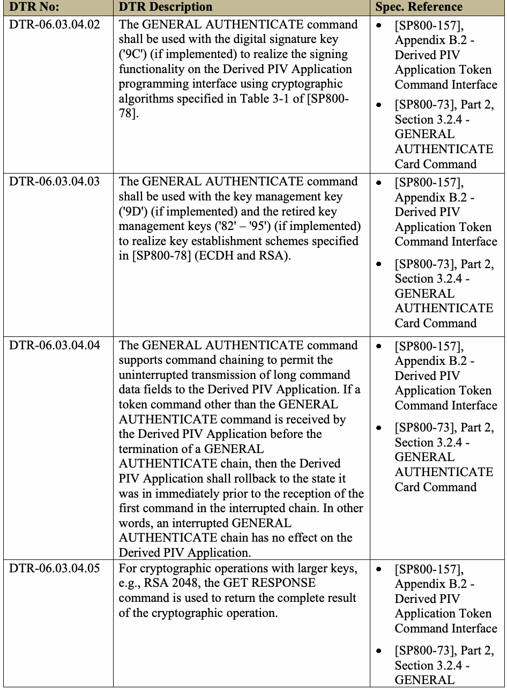
| DTR番号： | DTRの説明 | 仕様参照箇所 |
| DTR-06.03.04.02 | GENERAL AUTHENTICATEコマンドは、[SP800- 78]の表3-1に規定される暗号アルゴリズムを使用して派生PIVアプリケーションのプログラミング・インターフェースで署名機能を実現するため、電子署名鍵（'9C'）（実装されている場合）とともに用いなければならない。 | • [SP800-157]、付録B.2—派生PIVアプリケーションのトークン・コマンドインターフェース • [SP800-73]第2部、第3.2.4節—GENERAL AUTHENTICATEカードコマンド |
| DTR-06.03.04.03 | GENERAL AUTHENTICATEコマンドは、[SP800-78]に規定された鍵確立方式（ECDHおよびRSA）を実現するため、鍵管理鍵（'9D'）（実装されている場合）および失効した鍵管理鍵（'82' – '95'）（実装されている場合）とともに用いなければならない。 | • [SP800-157]、付録B.2—派生PIVアプリケーションのトークン・コマンドインターフェース • [SP800-73]第2部、第3.2.4節—GENERAL AUTHENTICATEカードコマンド |
| DTR-06.03.04.04 | GENERAL AUTHENTICATEコマンドは、長いコマンドデータフィールドを派生PIVアプリケーションへ中断なく伝送できるよう、コマンド連鎖をサポートする。GENERAL AUTHENTICATE連鎖の終了前に、GENERAL AUTHENTICATE以外のトークンコマンドを派生PIVアプリケーションが受信した場合、同アプリケーションは、中断された連鎖の最初のコマンドを受信する直前の状態にロールバックしなければならない。つまり、中断されたGENERAL AUTHENTICATE連鎖は派生PIVアプリケーションに影響を与えない。 | • [SP800-157]、付録B.2—派生PIVアプリケーションのトークン・コマンドインターフェース • [SP800-73]第2部、第3.2.4節—GENERAL AUTHENTICATEカードコマンド |
| DTR-06.03.04.05 | RSA 2048などの大きな鍵を用いる暗号操作では、暗号操作の結果全体を返すためにGET RESPONSEコマンドを使用する。 | • [SP800-157]、付録B.2—派生PIVアプリケーションのトークン・コマンドインターフェース • [SP800-73]第2部、第3.2.4節—GENERAL |
| DTR番号： | DTRの説明 | 仕様参照箇所 |
| AUTHENTICATEカードコマンド |
6.3.5 VERIFY Command
6.3.5 VERIFYコマンド
未レビュー訳| DTR No: | DTR Description | Spec. Reference |
| DTR-06.03.05.01 | Key reference '80' shall be able to be verified by the Derived PIV Application VERIFY command. | • [SP800-157], Appendix B.2 - Derived PIV Application Token Command Interface • [SP800-73], Part 2, Section 3.2.1 - VERIFY Card Command |
| DTR-06.03.05.02 | When the key reference is '80' and the current value of the retry counter associated with the key reference is zero, then the comparison shall not be made, and the Derived PIV Application shall return the status word '69 83'. | • [SP800-157], Appendix B.2 - Derived PIV Application Token Command Interface • [SP800-73], Part 2, Section 3.2.1 - VERIFY Card Command |
| DTR-06.03.05.03 | When the key reference is '80' and the authentication data in the command data field does not satisfy the criteria in Appendix B.2.1 of [SP800-157], then the token command shall fail and the Derived PIV Application shall return either the status word '6A 80' or '63 CX'. If status word '6A 80' is returned, the security status and the retry counter of the key reference shall remain unchanged. If status word '63 CX' is returned, the security status of the key reference shall be set to FALSE and the retry counter associated with the key reference shall be decremented by one. | • [SP800-157], Appendix B.2 - Derived PIV Application Token Command Interface • [SP800-73], Part 2, Section 3.2.1 - VERIFY Card Command |
| DTR-06.03.05.04 | When the key reference is '80' and the authentication data in the command data field is properly formatted and does not match reference data associated with the key reference, then the token command shall fail, the Derived PIV | • [SP800-157], Appendix B.2 - Derived PIV Application Token Command Interface |
原本PDFの抜粋画像
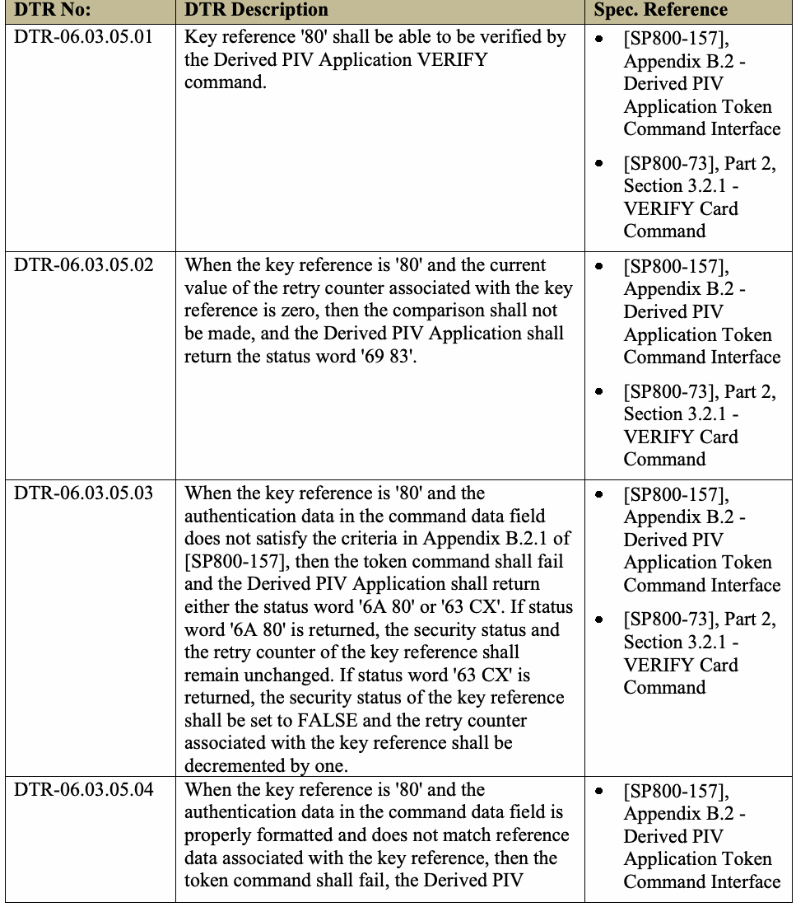
| DTR番号： | DTRの説明 | 仕様参照箇所 |
| DTR-06.03.05.01 | 鍵参照'80'は、派生PIVアプリケーションのVERIFYコマンドで検証できなければならない。 | • [SP800-157]、付録B.2—派生PIVアプリケーションのトークン・コマンドインターフェース • [SP800-73]第2部、第3.2.1節—VERIFYカードコマンド |
| DTR-06.03.05.02 | 鍵参照が'80'であり、その鍵参照に関連付けられた再試行カウンターの現在値がゼロの場合、比較を行ってはならず、派生PIVアプリケーションはステータスワード'69 83'を返さなければならない。 | • [SP800-157]、付録B.2—派生PIVアプリケーションのトークン・コマンドインターフェース • [SP800-73]第2部、第3.2.1節—VERIFYカードコマンド |
| DTR-06.03.05.03 | 鍵参照が'80'で、コマンドデータフィールド内の認証データが[SP800-157]の付録B.2.1の基準を満たさない場合、トークンコマンドは失敗し、派生PIVアプリケーションはステータスワード'6A 80'または'63 CX'のいずれかを返さなければならない。ステータスワード'6A 80'が返された場合、鍵参照のセキュリティ状態および再試行カウンターは変更されてはならない。ステータスワード'63 CX'が返された場合、鍵参照のセキュリティ状態をFALSEに設定し、関連付けられた再試行カウンターを1減らさなければならない。 | • [SP800-157]、付録B.2—派生PIVアプリケーションのトークン・コマンドインターフェース • [SP800-73]第2部、第3.2.1節—VERIFYカードコマンド |
| DTR-06.03.05.04 | 鍵参照が'80'であり、コマンドデータフィールド内の認証データが適切な形式であるものの、鍵参照に関連付けられた参照データと一致しない場合、トークンコマンドは失敗し、派生PIV | • [SP800-157]、付録B.2—派生PIVアプリケーションのトークン・コマンドインターフェース |
| DTR No: | DTR Description | Spec. Reference |
| Application shall return the status word '63 CX', the security status of the key reference shall be set to FALSE, and the retry counter associated with the key reference (i.e., '80') shall be decremented by one. | • [SP800-73], Part 2, Section 3.2.1 - VERIFY Card Command | |
| DTR-06.03.05.05 | If P1='FF', and L and the command data field c are absent, the command shall reset the security status of the key reference in P2. The security status of the key reference specified in P2 shall be set to FALSE and the retry counter associated with the key reference shall remain unchanged. | • [SP800-73], Part 2, Section 3.2.1 - VERIFY Card Command |
| DTR-06.03.05.06 | If the token command succeeds, then the security status of the key reference (i.e., '80') shall be set to TRUE and the retry counter associated with the key reference shall be set to the reset retry value associated with the key reference. | • [SP800-73], Part 2, Section 3.2.1 - VERIFY Card Command |
原本PDFの抜粋画像
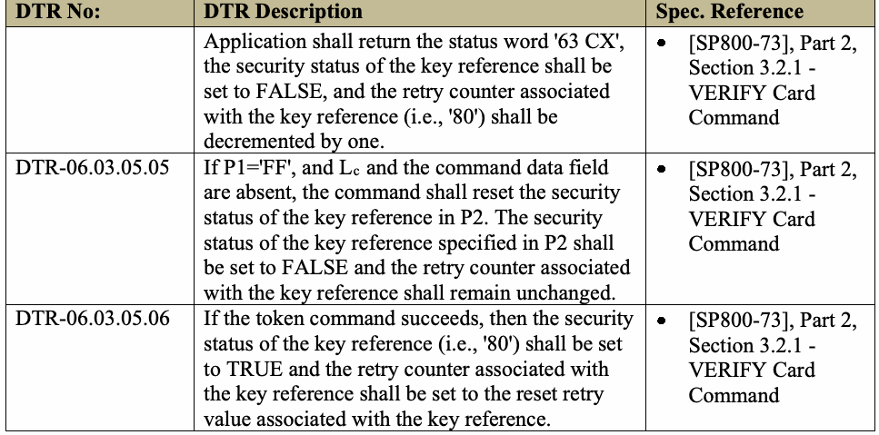
| DTR番号： | DTRの説明 | 仕様参照箇所 |
| アプリケーションはステータスワード'63 CX'を返し、鍵参照のセキュリティ状態をFALSEに設定し、鍵参照（すなわち'80'）に関連付けられた再試行カウンターを1減らさなければならない。 | • [SP800-73]第2部、第3.2.1節—VERIFYカードコマンド | |
| DTR-06.03.05.05 | P1が'FF'であり、Lおよびコマンドデータフィールドcが存在しない場合、コマンドはP2で指定された鍵参照のセキュリティ状態をリセットしなければならない。P2で指定された鍵参照のセキュリティ状態をFALSEに設定し、関連付けられた再試行カウンターは変更してはならない。 | • [SP800-73]第2部、第3.2.1節—VERIFYカードコマンド |
| DTR-06.03.05.06 | トークンコマンドが成功した場合、鍵参照（すなわち'80'）のセキュリティ状態をTRUEに設定し、鍵参照に関連付けられた再試行カウンターをその鍵参照に対応するリセット後の再試行値に設定しなければならない。 | • [SP800-73]第2部、第3.2.1節—VERIFYカードコマンド |
6.3.6 CHANGE REFERENCE DATA Command
6.3.6 CHANGE REFERENCE DATAコマンド
未レビュー訳| DTR No: | DTR Description | Spec. Reference |
| DTR-06.03.06.01 | Only reference data associated with key references '80' and '81' specific to the Derived PIV Application (i.e., local key references) may be changed by the Derived PIV Application CHANGE REFERENCE DATA command. The PIV Card Application may allow the reference data associated with other key references to be changed by the PIV Card Application CHANGE REFERENCE DATA, if PIV Card Application will only perform the command with other key references if the requirements specified in Section 2.9.2 of FIPS 201-2 are satisfied. | • [SP800-157], Appendix B.2 - Derived PIV Application Token Command Interface • [SP800-73], Part 2, Section 3.2.2 - CHANGE REFERENCE DATA Card Command |
| DTR-06.03.06.02 | If any key reference value is specified that is not supported by the card, the Derived PIV Application shall return the status word '6A 88'. | • [SP800-157], Appendix B.2 - Derived PIV Application Token Command Interface • [SP800-73], Part 2, Section 3.2.2 - CHANGE REFERENCE DATA Card Command |
原本PDFの抜粋画像
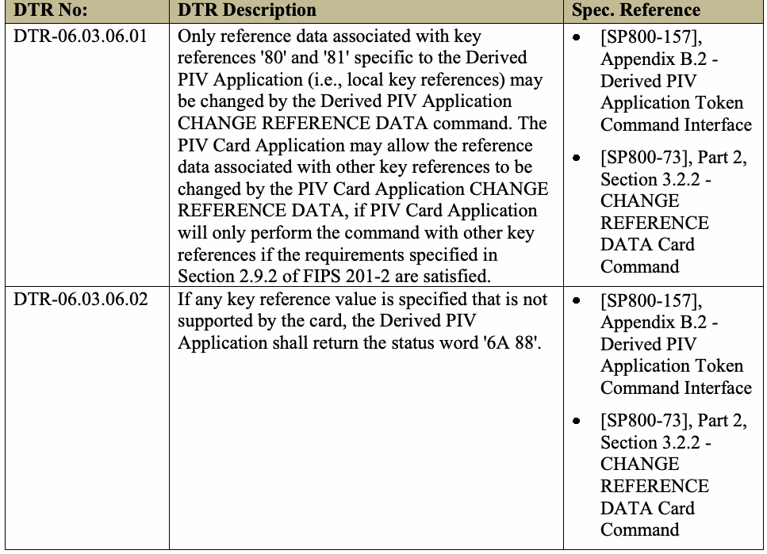
| DTR番号： | DTRの説明 | 仕様参照箇所 |
| DTR-06.03.06.01 | 派生PIVアプリケーション固有の鍵参照（すなわちローカル鍵参照）'80'および'81'に関連付けられた参照データのみを、派生PIVアプリケーションのCHANGE REFERENCE DATAコマンドで変更してもよい。PIVカード・アプリケーションが他の鍵参照に関連付けられた参照データの変更を許可する場合、そのコマンドを他の鍵参照に対して実行できるのは、FIPS 201-2の第2.9.2節の要件が満たされている場合に限られる。 | • [SP800-157]、付録B.2—派生PIVアプリケーションのトークン・コマンドインターフェース • [SP800-73]第2部、第3.2.2節—CHANGE REFERENCE DATAカードコマンド |
| DTR-06.03.06.02 | カードがサポートしていない鍵参照値が指定された場合、派生PIVアプリケーションはステータスワード'6A 88'を返さなければならない。 | • [SP800-157]、付録B.2—派生PIVアプリケーションのトークン・コマンドインターフェース • [SP800-73]第2部、第3.2.2節—CHANGE REFERENCE DATAカードコマンド |
| DTR No: | DTR Description | Spec. Reference |
| DTR-06.03.06.03 | Key reference '80' reference data shall be changed by the Derived PIV Application CHANGE REFERENCE DATA command. The ability to change reference data associated with key references '81' using the Derived PIV Application CHANGE REFERENCE DATA command is optional. | • [SP800-157], Appendix B.2 - Derived PIV Application Token Command Interface • [SP800-73], Part 2, Section 3.2.2 - CHANGE REFERENCE DATA Card Command |
| DTR-06.03.06.04 | If the current value of the retry counter associated with the key reference is zero, then the reference data associated with the key reference (i.e., '80' or '81') shall not be changed and the Derived PIV Application shall return the status word '69 83'. | • [SP800-157], Appendix B.2 - Derived PIV Application Token Command Interface • [SP800-73], Part 2, Section 3.2.2 - CHANGE REFERENCE DATA Card Command |
| DTR-06.03.06.05 | If the authentication data in the command data field does not match the current value of the reference data or if either the authentication data or the new reference data in the command data field of the command does not satisfy the criteria in Appendix B.2.1 of [SP800-157] (for the Derived PIV Application Password) or the criteria in Section 2.4.3 of [SP800-73], Part 2 (for the PUK), the Derived PIV Application shall not change the reference data associated with the key reference and shall return either status word '6A 80' or '63 CX'. | • [SP800-157], Appendix B.2 - Derived PIV Application Token Command Interface • [SP800-73], Part 2, Section 3.2.2 - CHANGE REFERENCE DATA Card Command |
| DTR-06.03.06.06 | If the authentication data in the command data field satisfies the criteria in Appendix B.2.1 of [SP800-157] (for the Derived PIV Application Password) or the criteria in Section 2.4.3 of [SP800-73], Part 2 (for the PUK), and matches the current value of the reference data, but the new reference data in the command data field of the command does not satisfy the criteria in Appendix B.2.1 of [SP800-157] (for the Derived | • [SP800-157], Appendix B.2 - Derived PIV Application Token Command Interface • [SP800-73], Part 2, Section 3.2.2 - CHANGE REFERENCE |
原本PDFの抜粋画像
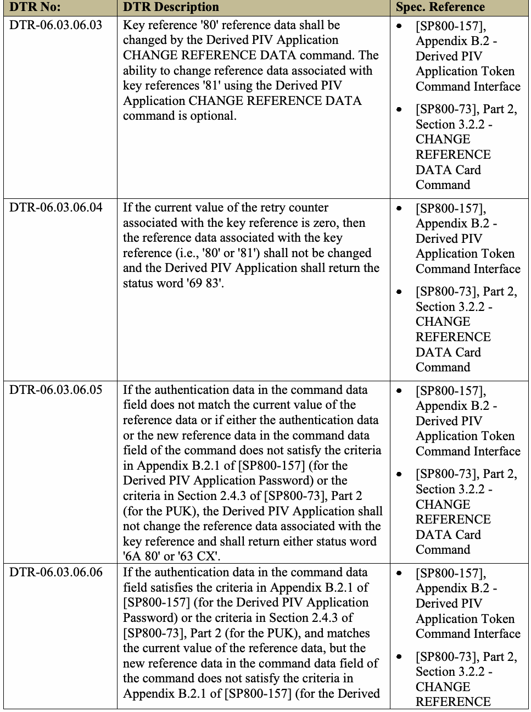
| DTR番号： | DTRの説明 | 仕様参照箇所 |
| DTR-06.03.06.03 | 鍵参照'80'の参照データは、派生PIVアプリケーションのCHANGE REFERENCE DATAコマンドによって変更されなければならない。鍵参照'81'に関連付けられた参照データを同コマンドで変更できる機能は任意である。 | • [SP800-157]、付録B.2—派生PIVアプリケーションのトークン・コマンドインターフェース • [SP800-73]第2部、第3.2.2節—CHANGE REFERENCE DATAカードコマンド |
| DTR-06.03.06.04 | 鍵参照に関連付けられた再試行カウンターの現在値がゼロの場合、鍵参照（すなわち'80'または'81'）に関連付けられた参照データを変更してはならず、派生PIVアプリケーションはステータスワード'69 83'を返さなければならない。 | • [SP800-157]、付録B.2—派生PIVアプリケーションのトークン・コマンドインターフェース • [SP800-73]第2部、第3.2.2節—CHANGE REFERENCE DATAカードコマンド |
| DTR-06.03.06.05 | コマンドデータフィールド内の認証データが参照データの現在値と一致しない場合、またはコマンドデータフィールド内の認証データもしくは新しい参照データのいずれかが、派生PIVアプリケーション・パスワードについては[SP800-157]の付録B.2.1、PUKについては[SP800-73]第2部第2.4.3節の基準を満たさない場合、派生PIVアプリケーションは鍵参照に関連付けられた参照データを変更してはならず、ステータスワード'6A 80'または'63 CX'のいずれかを返さなければならない。 | • [SP800-157]、付録B.2—派生PIVアプリケーションのトークン・コマンドインターフェース • [SP800-73]第2部、第3.2.2節—CHANGE REFERENCE DATAカードコマンド |
| DTR-06.03.06.06 | コマンドデータフィールド内の認証データが、派生PIVアプリケーション・パスワードについては[SP800-157]の付録B.2.1、PUKについては[SP800-73]第2部第2.4.3節の基準を満たし、参照データの現在値と一致する一方で、コマンドデータフィールド内の新しい参照データが[SP800-157]の付録B.2.1（派生PIVアプリケーション・パスワードについて）の基準を満たさない場合、 | • [SP800-157]、付録B.2—派生PIVアプリケーションのトークン・コマンドインターフェース • [SP800-73]第2部、第3.2.2節—CHANGE REFERENCE |
| DTR No: | DTR Description | Spec. Reference |
| PIV Application Password) or the criteria in Section 2.4.3 of [SP800-73], Part 2 (for the PUK), the Derived PIV Application shall return status word '6A 80'. | DATA Card Command | |
| DTR-06.03.06.07 | If the authentication data in the command data field does not match the current value of the reference data, but both the authentication data and the new reference data in the command data field of the command satisfy the criteria in Appendix B.2.1 of [SP800-157] (for the Derived PIV Application Password) or the criteria in Section 2.4.3 of [SP800-73], Part 2 (for the PUK), the Derived PIV Application shall return status word '63 CX'. | • [SP800-157], Appendix B.2 - Derived PIV Application Token Command Interface • [SP800-73], Part 2, Section 3.2.2 - CHANGE REFERENCE DATA Card Command |
| DTR-06.03.06.08 | If status word '6A 80' is returned, the security status and retry counter associated with the key reference shall remain unchanged. | • [SP800-157], Appendix B.2 - Derived PIV Application Token Command Interface • [SP800-73], Part 2, Section 3.2.2 - CHANGE REFERENCE DATA Card Command |
| DTR-06.03.06.09 | If status word '63 CX' is returned, the security status of the key reference shall be set to FALSE and the retry counter associated with the key reference shall be decremented by one. | • [SP800-157], Appendix B.2 - Derived PIV Application Token Command Interface • [SP800-73], Part 2, Section 3.2.2 - CHANGE REFERENCE DATA Card Command |
原本PDFの抜粋画像
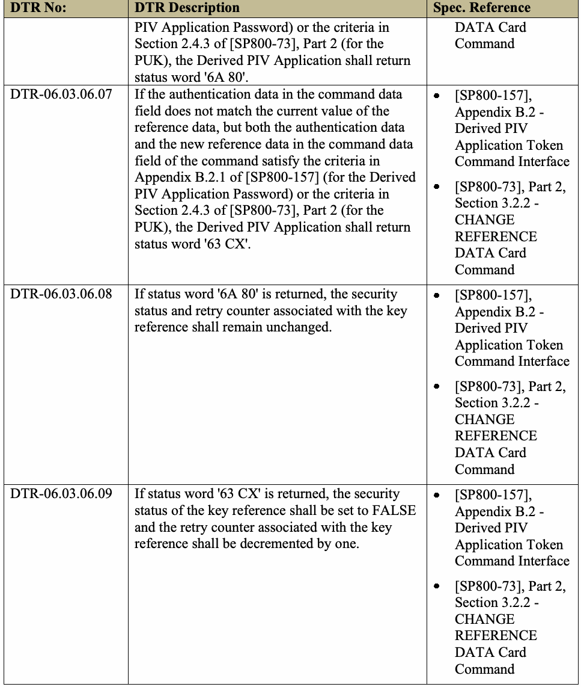
| DTR番号： | DTRの説明 | 仕様参照箇所 |
| または[SP800-73]第2部第2.4.3節（PUKについて）の基準を満たさない場合、派生PIVアプリケーションはステータスワード'6A 80'を返さなければならない。 | DATAカードコマンド | |
| DTR-06.03.06.07 | コマンドデータフィールド内の認証データが参照データの現在値と一致しないものの、認証データと新しい参照データの両方が、派生PIVアプリケーション・パスワードについては[SP800-157]の付録B.2.1、PUKについては[SP800-73]第2部第2.4.3節の基準を満たす場合、派生PIVアプリケーションはステータスワード'63 CX'を返さなければならない。 | • [SP800-157]、付録B.2—派生PIVアプリケーションのトークン・コマンドインターフェース • [SP800-73]第2部、第3.2.2節—CHANGE REFERENCE DATAカードコマンド |
| DTR-06.03.06.08 | ステータスワード'6A 80'が返された場合、鍵参照に関連付けられたセキュリティ状態および再試行カウンターは変更されてはならない。 | • [SP800-157]、付録B.2—派生PIVアプリケーションのトークン・コマンドインターフェース • [SP800-73]第2部、第3.2.2節—CHANGE REFERENCE DATAカードコマンド |
| DTR-06.03.06.09 | ステータスワード'63 CX'が返された場合、鍵参照のセキュリティ状態をFALSEに設定し、鍵参照に関連付けられた再試行カウンターを1減らさなければならない。 | • [SP800-157]、付録B.2—派生PIVアプリケーションのトークン・コマンドインターフェース • [SP800-73]第2部、第3.2.2節—CHANGE REFERENCE DATAカードコマンド |
6.3.7 RESET RETRY COUNTER Command
6.3.7 RESET RETRY COUNTERコマンド
未レビュー訳| DTR No: | DTR Description | Spec. Reference |
| DTR-06.03.07.01 | The only key reference allowed in the P2 parameter of the RESET RETRY COUNTER command is the Derived PIV Application Password (i.e., key reference '80'). The PIV Card Application may allow the reference data associated with other key references to be changed by the PIV Card Application RESET RETRY COUNTER, if PIV Card Application will only perform the command with other key references if the requirements specified in Section 2.9.2 of FIPS 201-2 are satisfied. If a key reference is specified in P2 that is not supported by the card, the Derived PIV Application shall return the status word '6A 88'. | • [SP800-157], Appendix B.2 - Derived PIV Application Token Command Interface • [SP800-73], Part 2, Section 3.2.3 - RESET RETRY COUNTER Card Command |
| DTR-06.03.07.02 | If the current value of the PUK’s retry counter is zero then the password’s retry counter shall not be reset and the Derived PIV Application shall return the status word '69 83'. | • [SP800-157], Appendix B.2 - Derived PIV Application Token Command Interface • [SP800-73], Part 2, Section 3.2.3 - RESET RETRY COUNTER Card Command |
| DTR-06.03.07.03 | If the reset retry counter authentication data (PUK) in the command data field of the command does not match reference data associated with the PUK then the Derived PIV Application shall return the status word '63 CX'. | • [SP800-157], Appendix B.2 - Derived PIV Application Token Command Interface • [SP800-73], Part 2, Section 3.2.3 - RESET RETRY COUNTER Card Command |
| DTR-06.03.07.04 | If the new reference data (password) in the command data field of the command does not satisfy the criteria in Appendix B.2.1 of [SP800-157], then the Derived PIV Application shall return the status word '6A 80'. | • [SP800-157], Appendix B.2 - Derived PIV Application Token Command Interface • [SP800-73], Part 2, |
原本PDFの抜粋画像
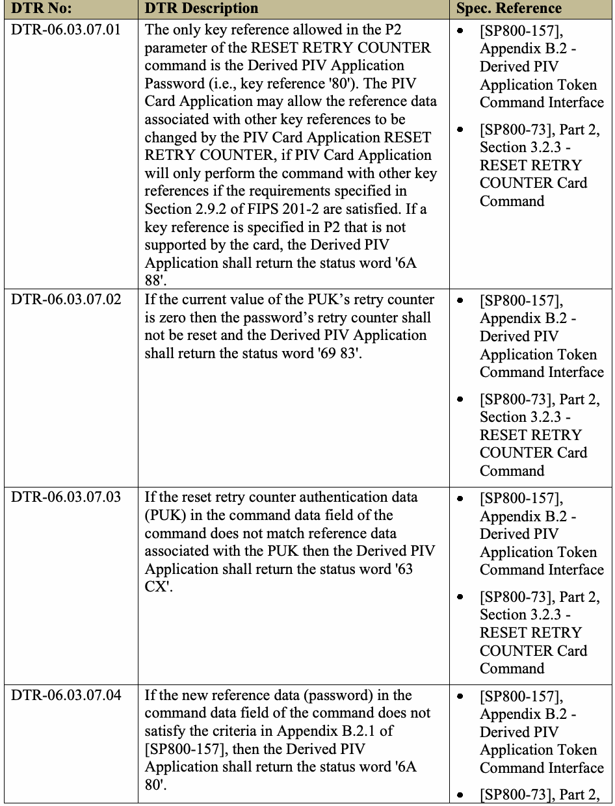
| DTR番号： | DTRの説明 | 仕様参照箇所 |
| DTR-06.03.07.01 | RESET RETRY COUNTERコマンドのP2パラメータで許可される唯一の鍵参照は、派生PIVアプリケーション・パスワード（すなわち鍵参照'80'）である。PIVカード・アプリケーションが他の鍵参照に関連付けられた参照データを変更できるようにする場合、FIPS 201-2第2.9.2節の要件が満たされる場合に限り、他の鍵参照に対してPIVカード・アプリケーションのRESET RETRY COUNTERを実行してもよい。カードがサポートしない鍵参照がP2に指定された場合、派生PIVアプリケーションはステータスワード'6A 88'を返さなければならない。 | • [SP800-157]、付録B.2—派生PIVアプリケーションのトークン・コマンドインターフェース • [SP800-73]第2部、第3.2.3節—RESET RETRY COUNTERカードコマンド |
| DTR-06.03.07.02 | PUKの再試行カウンターの現在値がゼロの場合、パスワードの再試行カウンターをリセットしてはならず、派生PIVアプリケーションはステータスワード'69 83'を返さなければならない。 | • [SP800-157]、付録B.2—派生PIVアプリケーションのトークン・コマンドインターフェース • [SP800-73]第2部、第3.2.3節—RESET RETRY COUNTERカードコマンド |
| DTR-06.03.07.03 | コマンドデータフィールド内の再試行カウンター・リセット用認証データ（PUK）がPUKに関連付けられた参照データと一致しない場合、派生PIVアプリケーションはステータスワード'63 CX'を返さなければならない。 | • [SP800-157]、付録B.2—派生PIVアプリケーションのトークン・コマンドインターフェース • [SP800-73]第2部、第3.2.3節—RESET RETRY COUNTERカードコマンド |
| DTR-06.03.07.04 | コマンドデータフィールド内の新しい参照データ（パスワード）が[SP800-157]付録B.2.1の基準を満たさない場合、派生PIVアプリケーションはステータスワード'6A 80'を返さなければならない。 | • [SP800-157]、付録B.2—派生PIVアプリケーションのトークン・コマンドインターフェース • [SP800-73]第2部、 |
| DTR No: | DTR Description | Spec. Reference |
| Section 3.2.3 - RESET RETRY COUNTER Card Command | ||
| DTR-06.03.07.05 | If the reset retry counter authentication data (PUK) in the command data field of the command does not match reference data associated with the PUK and the new reference data (password) in the command data field of the command does not satisfy the criteria in Appendix B.2.1 of [SP800-157], then the Derived PIV Application shall return either status word '6A 80' or '63 CX'. | • [SP800-157], Appendix B.2 - Derived PIV Application Token Command Interface • [SP800-73], Part 2, Section 3.2.3 - RESET RETRY COUNTER Card Command |
| DTR-06.03.07.06 | If the Derived PIV Application returns status word '6A 80' then the retry counter associated with the password shall not be reset, the security status of the password’s key reference shall remain unchanged, and the PUK’s retry counter shall remain unchanged. | • [SP800-157], Appendix B.2 - Derived PIV Application Token Command Interface • [SP800-73], Part 2, Section 3.2.3 - RESET RETRY COUNTER Card Command |
| DTR-06.03.07.07 | If the Derived PIV Application returns status word '63 CX', then the retry counter associated with the password shall not be reset, the security status of the password’s key reference shall be set to FALSE, and the PUK’s retry counter shall be decremented by one. | • [SP800-157], Appendix B.2 - Derived PIV Application Token Command Interface • [SP800-73], Part 2, Section 3.2.3 - RESET RETRY COUNTER Card Command |
| DTR-06.03.07.08 | If the token command succeeds, then the password’s retry counter shall be set to its reset retry value. Optionally, the PUK’s retry counter may be set to its initial reset retry value. The security status of the password’s key reference shall not be changed. | • [SP800-157], Appendix B.2 - Derived PIV Application Token Command Interface • [SP800-73], Part 2, Section 3.2.3 - |
原本PDFの抜粋画像
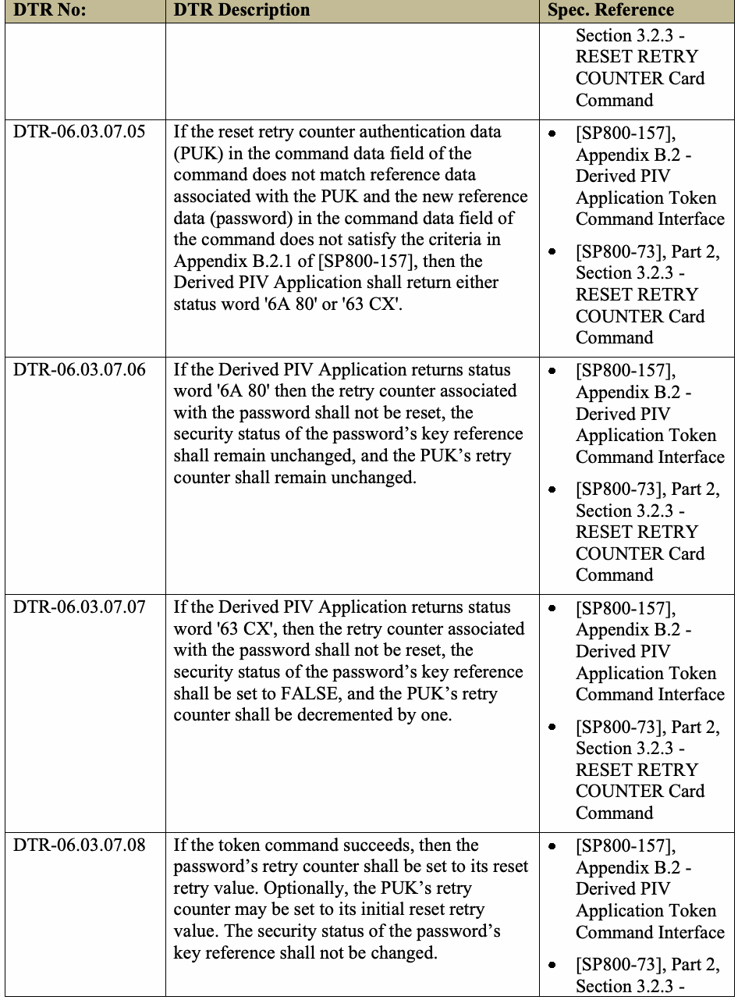
| DTR番号： | DTRの説明 | 仕様参照箇所 |
| 第3.2.3節—RESET RETRY COUNTERカードコマンド | ||
| DTR-06.03.07.05 | コマンドデータフィールド内の再試行カウンター・リセット用認証データ（PUK）がPUKの参照データと一致せず、かつ同フィールド内の新しい参照データ（パスワード）が[SP800-157]付録B.2.1の基準を満たさない場合、派生PIVアプリケーションはステータスワード'6A 80'または'63 CX'のいずれかを返さなければならない。 | • [SP800-157]、付録B.2—派生PIVアプリケーションのトークン・コマンドインターフェース • [SP800-73]第2部、第3.2.3節—RESET RETRY COUNTERカードコマンド |
| DTR-06.03.07.06 | 派生PIVアプリケーションがステータスワード'6A 80'を返す場合、パスワードに関連付けられた再試行カウンターをリセットしてはならず、パスワードの鍵参照のセキュリティ状態およびPUKの再試行カウンターは変更されてはならない。 | • [SP800-157]、付録B.2—派生PIVアプリケーションのトークン・コマンドインターフェース • [SP800-73]第2部、第3.2.3節—RESET RETRY COUNTERカードコマンド |
| DTR-06.03.07.07 | 派生PIVアプリケーションがステータスワード'63 CX'を返す場合、パスワードに関連付けられた再試行カウンターをリセットしてはならず、パスワードの鍵参照のセキュリティ状態をFALSEに設定し、PUKの再試行カウンターを1減らさなければならない。 | • [SP800-157]、付録B.2—派生PIVアプリケーションのトークン・コマンドインターフェース • [SP800-73]第2部、第3.2.3節—RESET RETRY COUNTERカードコマンド |
| DTR-06.03.07.08 | トークンコマンドが成功した場合、パスワードの再試行カウンターをそのリセット後の再試行値に設定しなければならない。任意で、PUKの再試行カウンターを初期のリセット後再試行値に設定してもよい。パスワードの鍵参照のセキュリティ状態は変更してはならない。 | • [SP800-157]、付録B.2—派生PIVアプリケーションのトークン・コマンドインターフェース • [SP800-73]第2部、第3.2.3節— |
| DTR No: | DTR Description | Spec. Reference |
| RESET RETRY COUNTER Card Command |
原本PDFの抜粋画像
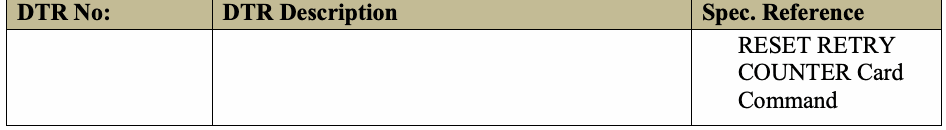
| DTR番号： | DTRの説明 | 仕様参照箇所 |
| RESET RETRY COUNTERカードコマンド |
6.3.8 PUT DATA Command
6.3.8 PUT DATAコマンド
未レビュー訳| DTR No: | DTR Description | Spec. Reference |
| DTR-06.03.08.01 | The PUT DATA command shall completely replace the data content of a single data object in the Derived PIV Application with new content. | • [SP800-157], Appendix B.2 - Derived PIV Application Token Command Interface • [SP800-73], Part 2, Section 3.2.5 - PUT DATA Card Command |
原本PDFの抜粋画像
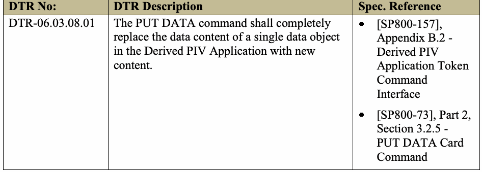
| DTR番号： | DTRの説明 | 仕様参照箇所 |
| DTR-06.03.08.01 | PUT DATAコマンドは、派生PIVアプリケーション内の単一データオブジェクトのデータ内容全体を新しい内容に置き換えなければならない。 | • [SP800-157]、付録B.2—派生PIVアプリケーションのトークン・コマンドインターフェース • [SP800-73]第2部、第3.2.5節—PUT DATAカードコマンド |
6.3.9 GENERATE ASYMMETRIC KEY PAIR Command
6.3.9 GENERATE ASYMMETRIC KEY PAIRコマンド
未レビュー訳| DTR No: | DTR Description | Spec. Reference |
| DTR-06.03.09.01 | The GENERATE ASYMMETRIC KEY PAIR command initiates the generation and storing in the token of the reference data of an asymmetric key pair, i.e., a public key and a private key. The public key of the generated key pair is returned as the response to the command. | • [SP800-157], Appendix B.2 - Derived PIV Application Token Command Interface • [SP800-73], Part 2, Section 3.2.6 - GENERATE ASYMMETRIC KEY PAIR Command |
| DTR-06.03.09.02 | If there is reference data currently associated with the key reference, it is replaced in full by the generated data. | • [SP800-157], Appendix B.2 - Derived PIV Application Token Command Interface • [SP800-73], Part 2, Section 3.2.6 - GENERATE ASYMMETRIC KEY PAIR Command |
原本PDFの抜粋画像
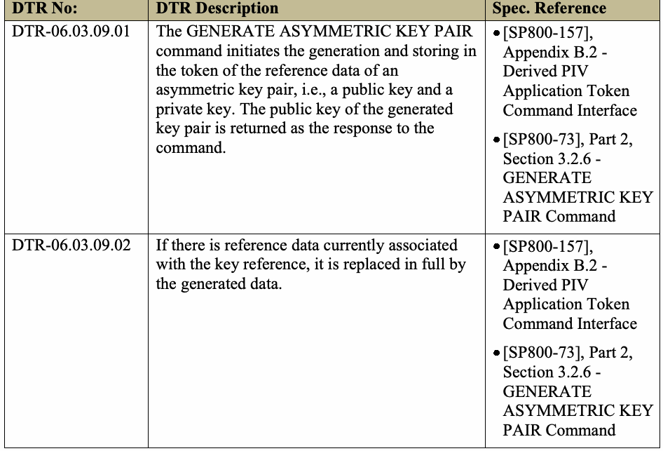
| DTR番号： | DTRの説明 | 仕様参照箇所 |
| DTR-06.03.09.01 | GENERATE ASYMMETRIC KEY PAIRコマンドは、非対称鍵ペア（すなわち公開鍵および秘密鍵）の参照データを生成してトークンに格納する処理を開始する。生成された鍵ペアの公開鍵は、コマンドへの応答として返される。 | • [SP800-157]、付録B.2—派生PIVアプリケーションのトークン・コマンドインターフェース • [SP800-73]第2部、第3.2.6節—GENERATE ASYMMETRIC KEY PAIRコマンド |
| DTR-06.03.09.02 | 鍵参照に現在関連付けられている参照データがある場合、その全体を生成されたデータで置き換える。 | • [SP800-157]、付録B.2—派生PIVアプリケーションのトークン・コマンドインターフェース • [SP800-73]第2部、第3.2.6節—GENERATE ASYMMETRIC KEY PAIRコマンド |
7. Derived Test Requirements for Data Model of the Derived PIV Application
7. 派生PIVアプリケーションのデータモデルに関する派生試験要求事項
未レビュー訳This section lists requirements that apply to the Data Model of the Derived PIV Application. They are aimed towards issuers of tokens to ensure that Derived PIV Application data objects are formatted correctly and field values are in accordance to the specification.
この節では、派生PIVアプリケーションのデータモデルに適用される要件を列挙する。これらは、派生PIVアプリケーションのデータオブジェクトが正しく形式化され、フィールド値が仕様に準拠するよう、トークンの発行者を対象としている。
7.1 BER-TLV Conformance
7.1 BER-TLV適合性
未レビュー訳7.1.1 General
7.1.1 一般
未レビュー訳| DTR No: | DTR Description | Spec. Reference |
| DTR-07.01.01.01 | Before the card is issued, data objects that are created but not used shall be set to zero-length value. | • [SP800-73], Part 1, Section 4.1.1 - Data Object Content |
原本PDFの抜粋画像
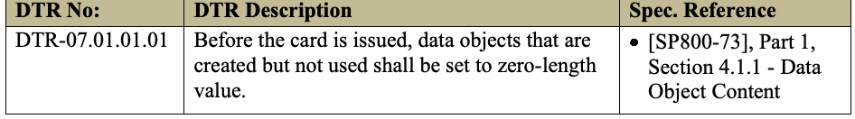
| DTR番号： | DTRの説明 | 仕様参照箇所 |
| DTR-07.01.01.01 | カードを発行する前に、作成済みで未使用のデータオブジェクトは、長さゼロの値に設定しなければならない。 | • [SP800-73]第1部、第4.1.1節—データオブジェクトの内容 |
7.1.2 X.509 Certificate for Derived PIV Authentication
7.1.2 派生PIV認証用X.509証明書
未レビュー訳| DTR No: | DTR Description | Spec. Reference |
| DTR-07.01.02.01 | The X.509 Certificate for Derived PIV Authentication shall include all the Tag- Length-Value (TLV) elements in Table 10 of [SP800-73], Part 1 in the order listed. | • [SP800-157], Appendix B.1.2 - Derived PIV Application Data Model Elements • [SP800-73], Part 1, Appendix A - PIV Data Model, Table 10 |
原本PDFの抜粋画像
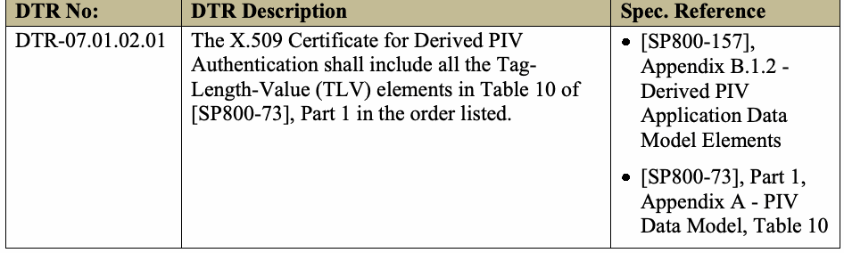
| DTR番号： | DTRの説明 | 仕様の参照先 |
| DTR-07.01.02.01 | 派生PIV認証用X.509証明書には、[SP800-73]第1部の表10に記載されたすべてのタグ・長さ・値（TLV）要素を、記載順に含めなければならない。 | • [SP800-157], Appendix B.1.2 - Derived PIV Application Data Model Elements • [SP800-73], Part 1, Appendix A - PIV Data Model, Table 10 |
7.1.3 X.509 Certificate for Digital Signature
7.1.3 デジタル署名用X.509証明書
未レビュー訳| DTR No: | DTR Description | Spec. Reference |
| DTR-07.01.03.01 | If implemented, the X.509 Certificate for Digital Signature data object shall include all the TLV elements in Table 15 of [SP800-73], Part 1 in the order listed. | • [SP800-157], Appendix B.1.2 - Derived PIV Application Data Model Elements • [SP800-73], Part 1, Appendix A - PIV Data Model, Table 15 |
原本PDFの抜粋画像
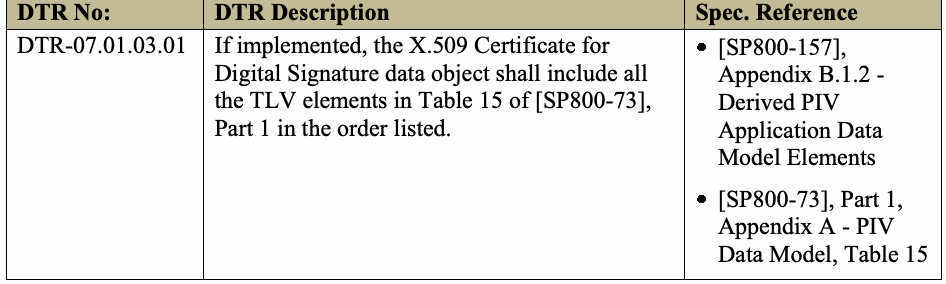
| DTR番号： | DTRの説明 | 仕様の参照先 |
| DTR-07.01.03.01 | 実装する場合、デジタル署名用X.509証明書データオブジェクトには、[SP800-73]第1部の表15に記載されたすべてのTLV要素を、記載順に含めなければならない。 | • [SP800-157], Appendix B.1.2 - Derived PIV Application Data Model Elements • [SP800-73], Part 1, Appendix A - PIV Data Model, Table 15 |
7.1.4 X.509 Certificate for Key Management
7.1.4 鍵管理用X.509証明書
未レビュー訳| DTR No: | DTR Description | Spec. Reference |
| DTR-07.01.04.01 | If implemented, the X.509 Certificate for Key Management data object shall include all the TLV elements in Table 16 of [SP800-73], Part 1 in the order listed. | • [SP800-157], Appendix B.1.2 - Derived PIV Application Data Model Elements • [SP800-73], Part 1, Appendix A - PIV Data Model, Table 16 |
原本PDFの抜粋画像
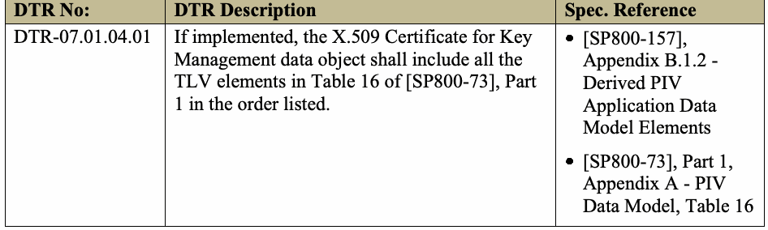
| DTR番号： | DTRの説明 | 仕様の参照先 |
| DTR-07.01.04.01 | 実装する場合、鍵管理用X.509証明書データオブジェクトには、[SP800-73]第1部の表16に記載されたすべてのTLV要素を、記載順に含めなければならない。 | • [SP800-157], Appendix B.1.2 - Derived PIV Application Data Model Elements • [SP800-73], Part 1, Appendix A - PIV Data Model, Table 16 |
7.1.5 Discovery Object
7.1.5 Discovery Object
未レビュー訳| DTR No: | DTR Description | Spec. Reference |
| DTR-07.01.05.01 | If implemented, the Discovery Object shall include all the TLV elements in Table 18 of [SP800-73], Part 1 in the order listed. | • [SP800-157], Appendix B.1.2 - Derived PIV Application Data Model Elements • [SP800-73], Part 1, Appendix A - PIV Data Model, Table 18 |
| DTR-07.01.05.02 | If the Discovery Object is implemented, the first byte of the PIN Usage Policy shall be set to 0x40. | • [SP800-157], Appendix B.1.2 - Derived PIV Application Data Model Elements |
| DTR-07.01.05.03 | If the Discovery Object is implemented, the second byte of the PIN Usage Policy shall be set to 0x00. | • [SP800-73], Part 1, Section 3.3.2 – Discovery Object |
原本PDFの抜粋画像
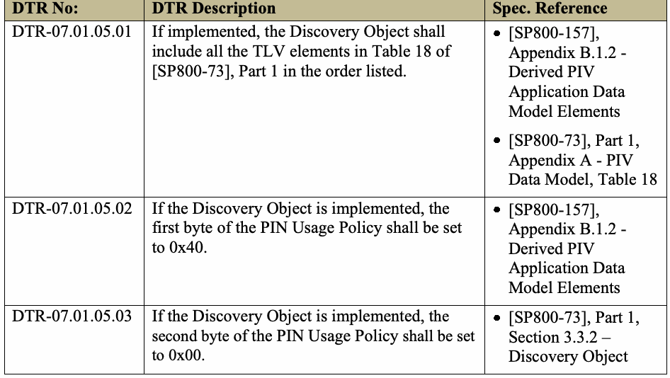
| DTR番号： | DTRの説明 | 仕様の参照先 |
| DTR-07.01.05.01 | 実装する場合、Discovery Objectには、[SP800-73]第1部の表18に記載されたすべてのTLV要素を、記載順に含めなければならない。 | • [SP800-157], Appendix B.1.2 - Derived PIV Application Data Model Elements • [SP800-73], Part 1, Appendix A - PIV Data Model, Table 18 |
| DTR-07.01.05.02 | Discovery Objectを実装する場合、PIN Usage Policyの第1バイトを0x40に設定しなければならない。 | • [SP800-157], Appendix B.1.2 - Derived PIV Application Data Model Elements |
| DTR-07.01.05.03 | Discovery Objectを実装する場合、PIN Usage Policyの第2バイトを0x00に設定しなければならない。 | • [SP800-73], Part 1, Section 3.3.2 – Discovery Object |
7.1.6 Key History Object
7.1.6 Key History Object
未レビュー訳| DTR No: | DTR Description | Spec. Reference |
| DTR-07.01.06.01 | If implemented, the Key History Object shall include all the TLV elements in Table 19 of [SP800-73], Part 1 in the order listed. | • [SP800-157], Appendix B.1.2 - Derived PIV Application Data Model Elements • [SP800-73], Part 1, Appendix A - PIV |
原本PDFの抜粋画像
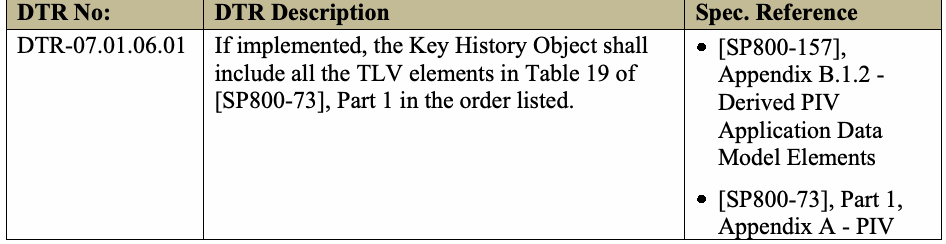
| DTR番号： | DTRの説明 | 仕様の参照先 |
| DTR-07.01.06.01 | 実装する場合、Key History Objectには、[SP800-73]第1部の表19に記載されたすべてのTLV要素を、記載順に含めなければならない。 | • [SP800-157], Appendix B.1.2 - Derived PIV Application Data Model Elements • [SP800-73], Part 1, Appendix A - PIV |
| DTR番号： | DTRの説明 | 仕様の参照先 |
| データモデル、表19 |
7.1.7 Retired X.509 Certificates for Key Management
7.1.7 廃止済み鍵管理用X.509証明書
未レビュー訳| DTR No: | DTR Description | Spec. Reference |
| DTR-07.01.07.01 | If implemented, the Retired X.509 Certificate for Key Management data objects shall include all the TLV elements in Tables 20 - 39 of [SP800-73], Part 1 in the order listed. | • [SP800-157], Appendix B.1.2 - Derived PIV Application Data Model Elements • [SP800-73], Part 1, Appendix A - PIV Data Model, Table 20-Table 39 |
原本PDFの抜粋画像
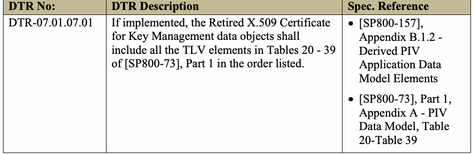
| DTR番号： | DTRの説明 | 仕様の参照先 |
| DTR-07.01.07.01 | 実装する場合、廃止済み鍵管理用X.509証明書データオブジェクトには、[SP800-73]第1部の表20～39に記載されたすべてのTLV要素を、記載順に含めなければならない。 | • [SP800-157], Appendix B.1.2 - Derived PIV Application Data Model Elements • [SP800-73], Part 1, Appendix A - PIV Data Model, Table 20-Table 39 |
7.1.8 Security Object
7.1.8 Security Object
未レビュー訳| DTR No: | DTR Description | Spec. Reference |
| DTR-07.01.08.01 | If implemented, the Security Object shall include all the TLV elements in Table 12 of [SP800-73], Part 1 in the order listed. | • [SP800-157], Appendix B.1.2 - Derived PIV Application Data Model Elements • [SP800-73], Part 1, Appendix A - PIV Data Model, Table 12 |
| DTR-07.01.08.02 | The Security Object shall be present in the Derived PIV Application if either the Discovery Object or the Key History object is present, and shall be absent otherwise. | • [SP800-157], Appendix B.1.2 - Derived PIV Application Data Model Elements |
| DTR-07.01.08.03 | All unsigned data objects (i.e., the Discovery Object and the Key History object) within the Derived PIV Application shall be included in the Security Object. | • [SP800-157], Appendix B.1.2 - Derived PIV Application Data Model Elements |
原本PDFの抜粋画像
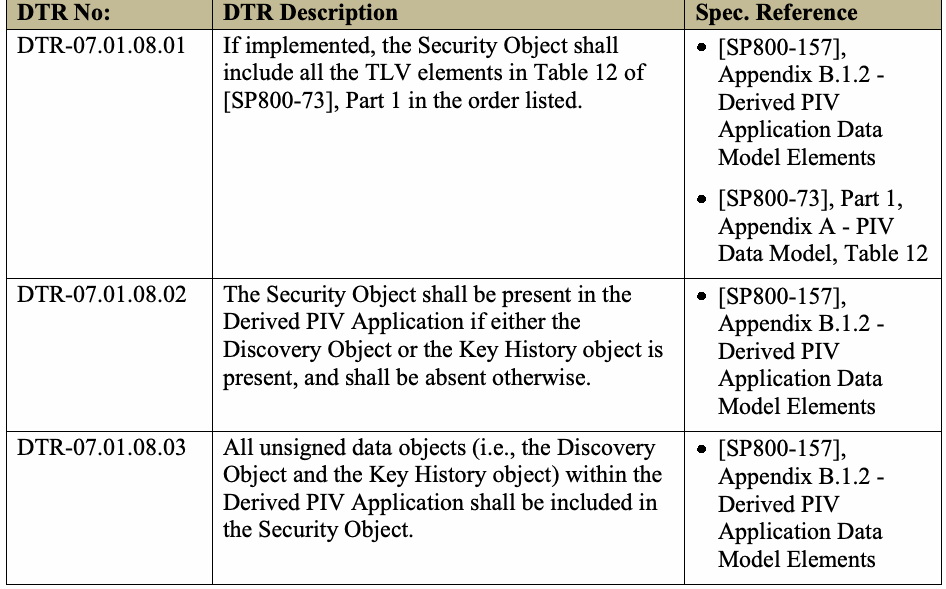
| DTR番号： | DTRの説明 | 仕様の参照先 |
| DTR-07.01.08.01 | 実装する場合、Security Objectには、[SP800-73]第1部の表12に記載されたすべてのTLV要素を、記載順に含めなければならない。 | • [SP800-157], Appendix B.1.2 - Derived PIV Application Data Model Elements • [SP800-73], Part 1, Appendix A - PIV Data Model, Table 12 |
| DTR-07.01.08.02 | Discovery ObjectまたはKey History Objectのいずれかが存在する場合、Security ObjectはDerived PIV Application内に存在しなければならず、それ以外の場合は存在してはならない。 | • [SP800-157], Appendix B.1.2 - Derived PIV Application Data Model Elements |
| DTR-07.01.08.03 | Derived PIV Application内のすべての署名なしデータオブジェクト（すなわちDiscovery ObjectおよびKey History Object）をSecurity Objectに含めなければならない。 | • [SP800-157], Appendix B.1.2 - Derived PIV Application Data Model Elements |
7.2 Signed Data Object Conformance
7.2 署名付きデータオブジェクトの適合性
未レビュー訳7.2.1 Security Object
7.2.1 Security Object
未レビュー訳| DTR No: | DTR Description | Spec. Reference |
| DTR-07.02.01.01 | The message digests produced as a result of a hash function on the contents of a Discovery Object and/or the Key History Object, if implemented, shall be identical to that data object’s message digest contained in the Security Object. | • [SP800-157], Appendix B.1.2 - Derived PIV Application Data Model Elements • [SP800-73], Part 1, Section 3.1.7 – Security Object |
| DTR-07.02.01.02 | The Security Object shall contain an asymmetric digital signature as specified in Request for Comments (RFC) 5652, Cryptographic Message Syntax [RFC5652]. | • [SP800-73], Part 1, Section 3.1.7 – Security Object |
| DTR-07.02.01.03 | The digital signature is implemented as a SignedData Type. | • [SP800-73], Part 1, Section 3.1.7 – Security Object |
| DTR-07.02.01.04 | The value of the version field of the SignedData content type shall be v3. | • [SP800-73], Part 1, Section 3.1.7 – Security Object |
| DTR-07.02.01.05 | The digestAlgorithms field of the SignedData content type shall be in accordance with Table 3-2 of [SP800-78]. | • [SP800-73], Part 1, Section 3.1.7 – Security Object |
| DTR-07.02.01.06 | The eContentType of the encapContentInfo shall be id-icao-ldsSecurityObject (OID = 1.3.27.1.1.1). | • [SP800-73], Part 1, Section 3.1.7 – Security Object |
| DTR-07.02.01.07 | The eContent of the encapContentsInfo field shall contain the encoded contents of the ldsSecurity object. | • [SP800-73], Part 1, Section 3.1.7 – Security Object |
| DTR-07.02.01.08 | The signature field of the Security Object, tag 0xBB, shall include the Derived PIV Credential Issuer’s (content signing) certificate. | • [SP800-157], Appendix B.1.2 - Derived PIV Application Data Model Elements |
| DTR-07.02.01.09 | The digestAlgorithm field specified in the SignerInfo field is in accordance with Table 3- 2 of [SP800-78]. | • [SP800-73], Part 1, Section 3.1.7 – Security Object |
| DTR-07.02.01.10 | The signatureAlgorithm field in the SignerInfo field is specified as follows: for RSA with | • [SP800-73], Part 1, Section 3.1.7 – |
原本PDFの抜粋画像
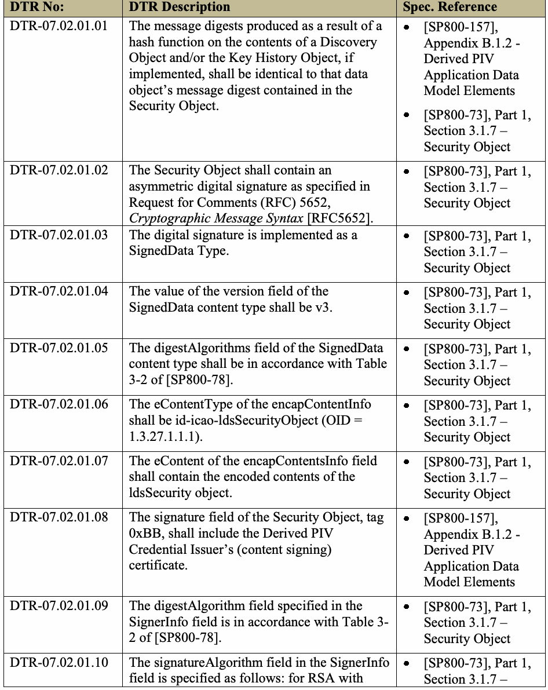
| DTR番号： | DTRの説明 | 仕様の参照先 |
| DTR-07.02.01.01 | 実装されている場合、Discovery Objectおよび／またはKey History Objectの内容にハッシュ関数を適用して得られるメッセージダイジェストは、Security Objectに含まれる当該データオブジェクトのメッセージダイジェストと一致しなければならない。 | • [SP800-157], Appendix B.1.2 - Derived PIV Application Data Model Elements • [SP800-73], Part 1, Section 3.1.7 – Security Object |
| DTR-07.02.01.02 | Security Objectには、Request for Comments（RFC）5652「Cryptographic Message Syntax」[RFC5652]に規定された非対称デジタル署名を含めなければならない。 | • [SP800-73], Part 1, Section 3.1.7 – Security Object |
| DTR-07.02.01.03 | デジタル署名はSignedData型として実装される。 | • [SP800-73], Part 1, Section 3.1.7 – Security Object |
| DTR-07.02.01.04 | SignedData content typeのversionフィールドの値はv3でなければならない。 | • [SP800-73], Part 1, Section 3.1.7 – Security Object |
| DTR-07.02.01.05 | SignedData content typeのdigestAlgorithmsフィールドは、[SP800-78]の表3-2に従わなければならない。 | • [SP800-73], Part 1, Section 3.1.7 – Security Object |
| DTR-07.02.01.06 | encapContentInfoのeContentTypeは、id-icao-ldsSecurityObject（OID = 1.3.27.1.1.1）でなければならない。 | • [SP800-73], Part 1, Section 3.1.7 – Security Object |
| DTR-07.02.01.07 | encapContentsInfoフィールドのeContentには、ldsSecurityオブジェクトの符号化された内容を含めなければならない。 | • [SP800-73], Part 1, Section 3.1.7 – Security Object |
| DTR-07.02.01.08 | Security Objectの署名フィールド（タグ0xBB）には、Derived PIV Credential Issuer（コンテンツ署名）の証明書を含めなければならない。 | • [SP800-157], Appendix B.1.2 - Derived PIV Application Data Model Elements |
| DTR-07.02.01.09 | SignerInfoフィールドに指定されたdigestAlgorithmフィールドは、[SP800-78]の表3-2に従う。 | • [SP800-73], Part 1, Section 3.1.7 – Security Object |
| DTR-07.02.01.10 | SignerInfoフィールドのsignatureAlgorithmフィールドは、次のとおり指定する。RSAで | • [SP800-73], Part 1, Section 3.1.7 – |
| DTR No: | DTR Description | Spec. Reference |
| PKCS #1 v1.5 padding, the signatureAlgorithm field shall specify the rsaEncryption OID (as per Section 3.2 of [RFC3370]), and for ECDSA and RSA with PSS padding, the signatureAlgorithm shall be in accordance with Table 3-3 of [SP800-78]. | Security Object | |
| DTR-07.02.01.11 | The SignedData content type shall include the digital signature. | • [SP800-73], Part 1, Section 3.1.7 – Security Object |
原本PDFの抜粋画像
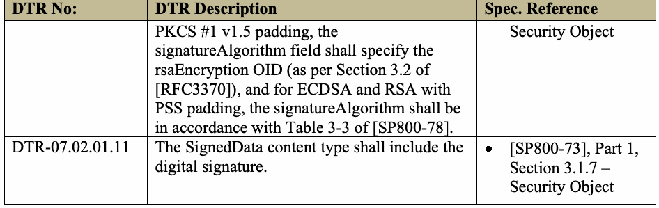
| DTR番号： | DTRの説明 | 仕様の参照先 |
| PKCS #1 v1.5パディングを使用する場合、signatureAlgorithmフィールドにはrsaEncryption OID（[RFC3370]第3.2節に従う）を指定しなければならない。ECDSAおよびPSSパディングを使用するRSAでは、signatureAlgorithmは[SP800-78]の表3-3に従わなければならない。 | Security Object | |
| DTR-07.02.01.11 | SignedData content typeにはデジタル署名を含めなければならない。 | • [SP800-73], Part 1, Section 3.1.7 – Security Object |
7.3 PKI Conformance
7.3 PKI適合性
未レビュー訳7.3.1 X.509 Certificate for Derived PIV Authentication
7.3.1 派生PIV認証用X.509証明書
未レビュー訳| DTR No: | DTR Description | Spec. Reference |
| DTR-07.03.01.01 | The signature field in the certificate shall specify an algorithm from Table 3-3 of [SP800-78] in the AlgorithmIdentifier field. | • [SP800-78], Section 3.2.1 - Specification of Digital Signatures on Authentication Information |
| DTR-07.03.01.02 | If RSA with PSS padding is used, the parameters field of the AlgorithmIdentifier type shall assert SHA-256 (OID = 2.16.840.1.101.3.4.2.1). For RSA with PKCS #1 v1.5 padding, the parameters field is populated with NULL. For ECDSA, the parameters field is absent. | • [PROF], Worksheet titled - Derived PIV Authentication Certificate Profile |
| DTR-07.03.01.03 | The subjectPublicKeyInfo field shall assert an algorithm in the AlgorithmIdentifier in accordance with Table 3-4 of [SP800-78]. | • [SP800-78], Section 3.2.2 - Specification of Public Keys In X.509 Certificates |
| DTR-07.03.01.04 | If the public key algorithm is elliptic curve, then the parameters field contains the namedCurve choice populated with the OID for Curve P-256 (1.2.840.10045.3.1.7). | • [PROF], Worksheet titled - Derived PIV Authentication Certificate Profile |
| DTR-07.03.01.05 | The keyUsage extension shall assert only the digitalSignature bit. No other bits shall be asserted. | • [PROF], Worksheet titled - Derived PIV Authentication Certificate Profile |
| DTR-07.03.01.06 | The policyIdentifier field in the certificatePolicies must assert id-fpki- | • [PROF], Worksheet titled - Derived PIV |
原本PDFの抜粋画像
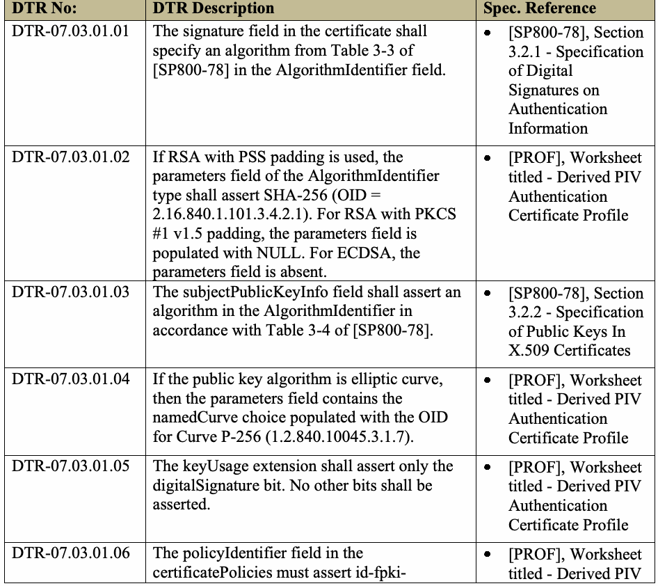
| DTR番号： | DTRの説明 | 仕様の参照先 |
| DTR-07.03.01.01 | 証明書のsignatureフィールドでは、AlgorithmIdentifierフィールドに[SP800-78]の表3-3に記載されたアルゴリズムを指定しなければならない。 | • [SP800-78], Section 3.2.1 - Specification of Digital Signatures on Authentication Information |
| DTR-07.03.01.02 | RSAでPSSパディングを使用する場合、AlgorithmIdentifier型のparametersフィールドにはSHA-256（OID = 2.16.840.1.101.3.4.2.1）を指定しなければならない。RSAでPKCS #1 v1.5パディングを使用する場合、parametersフィールドにはNULLを設定する。ECDSAの場合、parametersフィールドは存在しない。 | • [PROF], Worksheet titled - Derived PIV Authentication Certificate Profile |
| DTR-07.03.01.03 | subjectPublicKeyInfoフィールドには、[SP800-78]の表3-4に従ったアルゴリズムをAlgorithmIdentifierで指定しなければならない。 | • [SP800-78], Section 3.2.2 - Specification of Public Keys In X.509 Certificates |
| DTR-07.03.01.04 | 公開鍵アルゴリズムが楕円曲線の場合、parametersフィールドのnamedCurve選択肢には、Curve P-256のOID（1.2.840.10045.3.1.7）を設定する。 | • [PROF], Worksheet titled - Derived PIV Authentication Certificate Profile |
| DTR-07.03.01.05 | keyUsage拡張ではdigitalSignatureビットだけを設定しなければならない。他のビットを設定してはならない。 | • [PROF], Worksheet titled - Derived PIV Authentication Certificate Profile |
| DTR-07.03.01.06 | certificatePoliciesのpolicyIdentifierフィールドには、id-fpki- | • [PROF], Worksheet titled - Derived PIV |
| DTR No: | DTR Description | Spec. Reference |
| common-derived-pivAuth (OID = 2.16.840.1.101.3.2.1.3.40) or id-fpki-common- derived-pivAuth-hardware (OID = 2.16.840.1.101.3.2.1.3.41). | Authentication Certificate Profile | |
| DTR-07.03.01.07 | The subjectAltName extension shall include a UUID encoded as a URN, as specified in Section 3 of [RFC4122], A Universally Unique IDentifier (UUID) URN Namespace. | • [PROF], Worksheet titled - Derived PIV Authentication Certificate Profile |
| DTR-07.03.01.08 | The piv-interim extension (OID = 2.16.840.1.101.3.6.9.1) shall be present and contain an interim_indicator field, which is populated with a Boolean value. This extension is not critical. | • [PROF], Worksheet titled - Derived PIV Authentication Certificate Profile |
| DTR-07.03.01.09 | The authorityInfoAccess field shall contain an id-ad-ocsp accessMethod. The access location uses the Uniform Resource Identifier (URI) name form to specify the location of a Hypertext Transfer Protocol (HTTP) accessible Online Certificate Status Protocol (OCSP) server distributing status information for this certificate. | • [PROF], Worksheet titled - Derived PIV Authentication Certificate Profile |
| DTR-07.03.01.10 | The cRLDistributionPoints extension is required and must contain an HTTP URI. The URI must point to a file that has an extension of ".crl" that contains the DER encoded CRL that provides status information about the certificate. (see [RFC2585], Internet X.509 Public Key Infrastructure Operational Protocols: FTP and HTTP) | • [PROF], Worksheet titled - Derived PIV Authentication Certificate Profile |
| DTR-07.03.01.11 | The authorityInfoAccess field shall contain an id-ad-caIssuers (1.3.6.1.5.5.7.48.2) accessMethod. The access location shall specify the location to an HTTP accessible Web server where certificates issued to the issuer of this certificate may be found. The URI must point to a file that has an extension of ".p7c" containing a certs-only CMS message (see [RFC5751], Secure/Multipurpose Internet Mail Extensions (S/MIME) Version 3.2 Message Specification). | • [PROF], Worksheet titled - Derived PIV Authentication Certificate Profile |
| DTR-07.03.01.12 | The size of the public key for the Derived PIV Authentication certificate shall be in accordance with Table 3-1 of [SP800-78]. | • [SP800-78], Section 3.1 - PIV Cryptographic Keys |
原本PDFの抜粋画像
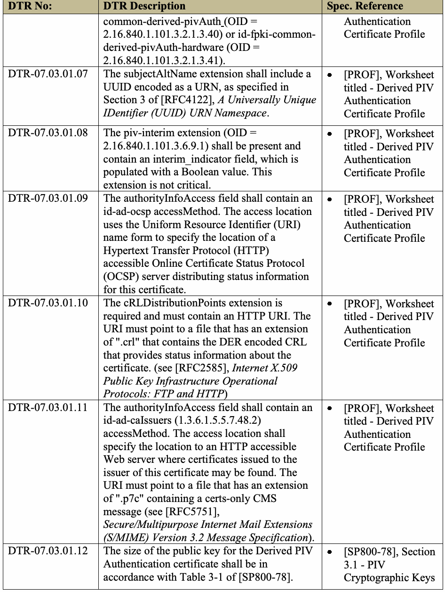
| DTR番号： | DTRの説明 | 仕様の参照先 |
| common-derived-pivAuth（OID = 2.16.840.1.101.3.2.1.3.40）またはid-fpki-common-derived-pivAuth-hardware（OID = 2.16.840.1.101.3.2.1.3.41）のいずれかを指定しなければならない。 | Authentication Certificate Profile | |
| DTR-07.03.01.07 | subjectAltName拡張には、[RFC4122]第3節「A Universally Unique IDentifier (UUID) URN Namespace)」に規定された、URNとして符号化されたUUIDを含めなければならない。 | • [PROF], Worksheet titled - Derived PIV Authentication Certificate Profile |
| DTR-07.03.01.08 | piv-interim拡張（OID = 2.16.840.1.101.3.6.9.1）は存在し、Boolean値を設定したinterim_indicatorフィールドを含まなければならない。この拡張はcriticalではない。 | • [PROF], Worksheet titled - Derived PIV Authentication Certificate Profile |
| DTR-07.03.01.09 | authorityInfoAccessフィールドにはid-ad-ocsp accessMethodを含めなければならない。アクセス場所にはUniform Resource Identifier（URI）形式を使用し、この証明書の状態情報を配布する、HTTPでアクセス可能なOnline Certificate Status Protocol（OCSP）サーバーの場所を指定する。 | • [PROF], Worksheet titled - Derived PIV Authentication Certificate Profile |
| DTR-07.03.01.10 | cRLDistributionPoints拡張は必須であり、HTTP URIを少なくとも1つ含めなければならない。このURIは、証明書の状態情報を提供するDER符号化CRLを含む、拡張子が".crl"のファイルを指さなければならない（[RFC2585]「Internet X.509 Public Key Infrastructure Operational Protocols: FTP and HTTP」を参照）。 | • [PROF], Worksheet titled - Derived PIV Authentication Certificate Profile |
| DTR-07.03.01.11 | authorityInfoAccessフィールドにはid-ad-caIssuers（1.3.6.1.5.5.7.48.2）accessMethodを含めなければならない。アクセス場所には、この証明書の発行者に発行された証明書を入手できる、HTTPでアクセス可能なWebサーバーの場所を指定する。このURIは、証明書のみを含むCMSメッセージが格納された、拡張子が".p7c"のファイルを指さなければならない（[RFC5751]「Secure/Multipurpose Internet Mail Extensions (S/MIME) Version 3.2 Message Specification」を参照）。 | • [PROF], Worksheet titled - Derived PIV Authentication Certificate Profile |
| DTR-07.03.01.12 | Derived PIV Authentication証明書の公開鍵サイズは、[SP800-78]の表3-1に従わなければならない。 | • [SP800-78], Section 3.1 - PIV Cryptographic Keys |
| DTR No: | DTR Description | Spec. Reference |
| DTR-07.03.01.13 | The public key present in the Derived PIV Authentication certificate shall correspond to the Derived PIV Authentication private key. | • [SP800-157], Appendix B.1.2 - Derived PIV Application Data Model Elements |
| DTR-07.03.01.14 | If the public key algorithm is RSA, the exponent shall be equal to 65 537. | • [SP800-78], Section 3.1, PIV Cryptographic Keys |
原本PDFの抜粋画像
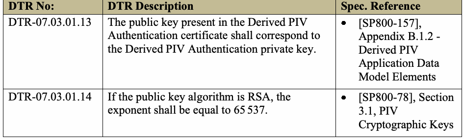
| DTR番号： | DTRの説明 | 仕様の参照先 |
| DTR-07.03.01.13 | Derived PIV Authentication証明書に含まれる公開鍵は、Derived PIV Authentication秘密鍵に対応しなければならない。 | • [SP800-157], Appendix B.1.2 - Derived PIV Application Data Model Elements |
| DTR-07.03.01.14 | 公開鍵アルゴリズムがRSAの場合、指数は65 537でなければならない。 | • [SP800-78], Section 3.1, PIV Cryptographic Keys |
7.3.2 X.509 Certificate for Digital Signature
7.3.2 デジタル署名用X.509証明書
未レビュー訳[SP800-157] does not specify any requirements on the digital signature key and certificate. The requirements listed herein follow those specified in [FIPS201] for digital signature certificates that are not issued by legacy PKIs,8 and thus do not actually apply to the X.509 Certificate for Digital Signature stored within a Derived PIV Application, with the exception that certificates that assert the id-fpki-common-policy, id-fpki-common-hardware, or id-fpki-common-High certificate policy OID are required by the corresponding certificate policy to conform to [PROF].
[SP800-157]は、デジタル署名鍵および証明書の要件を規定していない。ここに示す要件は、従来型PKIから発行されないデジタル署名証明書について[FIPS201]が定める要件に従うものであり、したがってDerived PIV Application内に格納されたデジタル署名用X.509証明書には実際には適用されない。ただし、証明書ポリシーOIDとしてid-fpki-common-policy、id-fpki-common-hardware、またはid-fpki-common-Highを指定する証明書は、対応する証明書ポリシーにより[PROF]への適合が求められる。8
未レビュー訳| DTR No: | DTR Description | Spec. Reference |
| DTR-07.03.02.01 | The signature field in the certificate shall specify an algorithm from Table 3-3 of [SP800- 78] in the AlgorithmIdentifier. | • [SP800-78], Section 3.2.1 - Specification of Digital Signatures on Authentication Information |
| DTR-07.03.02.02 | If RSA with PSS padding is used, the parameters field of the AlgorithmIdentifier type shall assert SHA-256 (OID = 2.16.840.1.101.3.4.2.1). For RSA with PKCS #1 v1.5 padding, the parameters field is populated with NULL. For ECDSA, the parameters field is absent. | • [PROF], Worksheet titled - End Entity Signature Certificate Profile |
| DTR-07.03.02.03 | The subjectPublicKeyInfo field shall assert an algorithm in the AlgorithmIdentifier in accordance with Table 3-4 of [SP800-78]. | • [SP800-78], Section 3.2.2 - Specification of Public Keys In X.509 Certificates |
| DTR-07.03.02.04 | If the public key algorithm is elliptic curve, then the parameters field contains the namedCurve choice populated an appropriate OID from [SP800-78]. | • [PROF], Worksheet titled - End Entity Signature Certificate Profile |
原本PDFの抜粋画像
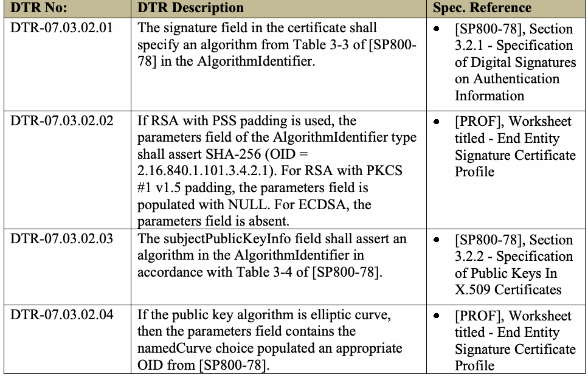
| DTR番号： | DTRの説明 | 仕様の参照先 |
| DTR-07.03.02.01 | 証明書のsignatureフィールドでは、AlgorithmIdentifierに[SP800-78]の表3-3に記載されたアルゴリズムを指定しなければならない。 | • [SP800-78], Section 3.2.1 - Specification of Digital Signatures on Authentication Information |
| DTR-07.03.02.02 | RSAでPSSパディングを使用する場合、AlgorithmIdentifier型のparametersフィールドにはSHA-256（OID = 2.16.840.1.101.3.4.2.1）を指定しなければならない。RSAでPKCS #1 v1.5パディングを使用する場合、parametersフィールドにはNULLを設定する。ECDSAの場合、parametersフィールドは存在しない。 | • [PROF], Worksheet titled - End Entity Signature Certificate Profile |
| DTR-07.03.02.03 | subjectPublicKeyInfoフィールドには、[SP800-78]の表3-4に従ったアルゴリズムをAlgorithmIdentifierで指定しなければならない。 | • [SP800-78], Section 3.2.2 - Specification of Public Keys In X.509 Certificates |
| DTR-07.03.02.04 | 公開鍵アルゴリズムが楕円曲線の場合、parametersフィールドのnamedCurve選択肢には、[SP800-78]に記載された適切なOIDを設定する。 | • [PROF], Worksheet titled - End Entity Signature Certificate Profile |
| DTR No: | DTR Description | Spec. Reference |
| DTR-07.03.02.05 | The keyUsage extension shall assert both the digitalSignature and nonRepudiation bits. No other bits shall be asserted. | • [PROF], Worksheet titled - End Entity Signature Certificate Profile |
| DTR-07.03.02.06 | The policyIdentifier field in the certificatePolicies must assert one of the following: id-fpki-common-policy (OID = 2.16.840.1.101.3.2.1.3.6), id-fpki-common- hardware (OID = 2.16.840.1.101.3.2.1.3.7) or id-fpki-common-High (OID = 2.16.840.1.101.3.2.1.3.16). | • [PROF], Worksheet titled - End Entity Signature Certificate Profile |
| DTR-07.03.02.07 | The authorityInfoAccess field shall contain an id-ad-caIssuers (1.3.6.1.5.5.7.48.2) accessMethod. The access location shall to specify the location of an LDAP accessible directory server or HTTP accessible Web server where certificates issued to the issuer of this certificate may be found. If LDAP is used, the URI must include the DN of the entry containing the relevant certificates and specify the directory attribute in which the certificates are located. If the directory in which the certificates are stored expects the "binary" option to be specified, then the attribute type must be followed by ";binary" in the URI. If HTTP is used, the URI must point to a file that has an extension of ".p7c" containing a certs-only CMS message (see RFC 5751, Secure/Multipurpose Internet Mail Extensions (S/MIME) Version 3.2 Message Specification [RFC5751]). | • [PROF], Worksheet titled - End Entity Signature Certificate Profile |
| DTR-07.03.02.08 | The cRLDistributionPoints extension is required and must contain at least one URI, either LDAP or HTTP. If LDAP is used, the URI must include the DN of the entry containing the CRL and specify the directory attribute in which the CRL is located (certificateRevocationList). If HTTP is used, the URI must point to a file that has an extension of ".crl" that contains the DER encoded CRL. (see [RFC2585], Internet X.509 Public Key Infrastructure Operational Protocols: FTP and HTTP) | • [PROF], Worksheet titled - End Entity Signature Certificate Profile |
原本PDFの抜粋画像
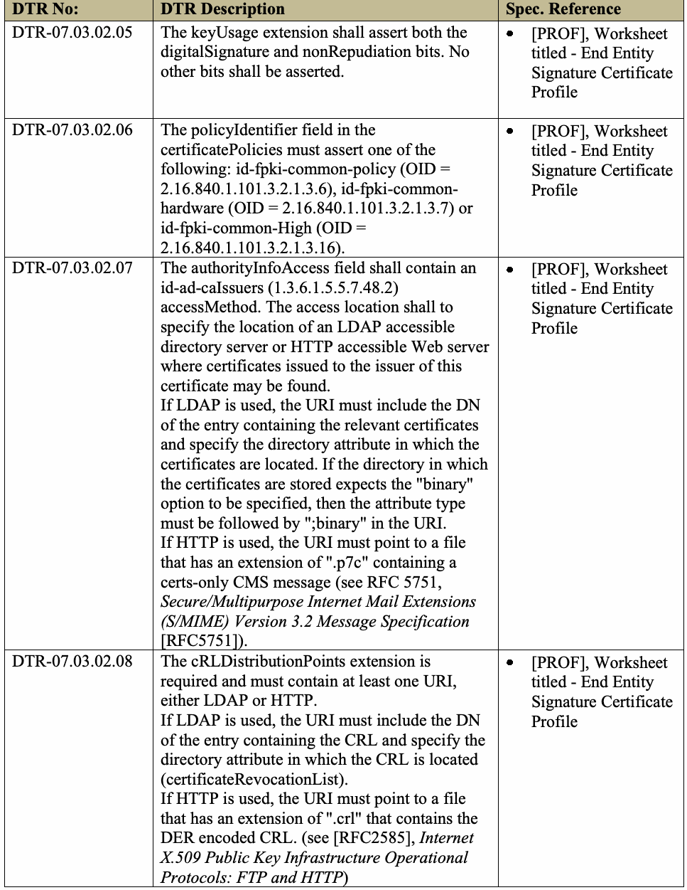
| DTR番号： | DTRの説明 | 仕様の参照先 |
| DTR-07.03.02.05 | keyUsage拡張ではdigitalSignatureビットとnonRepudiationビットの両方を設定しなければならない。他のビットを設定してはならない。 | • [PROF], Worksheet titled - End Entity Signature Certificate Profile |
| DTR-07.03.02.06 | certificatePoliciesのpolicyIdentifierフィールドには、次のいずれかを指定しなければならない：id-fpki-common-policy（OID = 2.16.840.1.101.3.2.1.3.6）、id-fpki-common-hardware（OID = 2.16.840.1.101.3.2.1.3.7）、またはid-fpki-common-High（OID = 2.16.840.1.101.3.2.1.3.16）。 | • [PROF], Worksheet titled - End Entity Signature Certificate Profile |
| DTR-07.03.02.07 | authorityInfoAccessフィールドにはid-ad-caIssuers（1.3.6.1.5.5.7.48.2）accessMethodを含めなければならない。アクセス場所には、この証明書の発行者に発行された証明書を入手できる、LDAPでアクセス可能なディレクトリサーバーまたはHTTPでアクセス可能なWebサーバーの場所を指定する。LDAPを使用する場合、URIには関連する証明書を含むエントリのDNを含め、証明書が格納されたディレクトリ属性を指定しなければならない。証明書格納ディレクトリで"binary"オプションの指定が必要な場合、URI内で属性型の後に";binary"を付けなければならない。HTTPを使用する場合、URIは証明書のみを含むCMSメッセージを格納した拡張子".p7c"のファイルを指さなければならない（RFC 5751「Secure/Multipurpose Internet Mail Extensions (S/MIME) Version 3.2 Message Specification」[RFC5751]を参照）。 | • [PROF], Worksheet titled - End Entity Signature Certificate Profile |
| DTR-07.03.02.08 | cRLDistributionPoints拡張は必須であり、LDAPまたはHTTPのURIを少なくとも1つ含まなければならない。LDAPを使用する場合、URIにはCRLを含むエントリのDNを含め、CRLが格納されたディレクトリ属性（certificateRevocationList）を指定しなければならない。HTTPを使用する場合、URIはDER符号化CRLを含む拡張子".crl"のファイルを指さなければならない（[RFC2585]「Internet X.509 Public Key Infrastructure Operational Protocols: FTP and HTTP」を参照）。 | • [PROF], Worksheet titled - End Entity Signature Certificate Profile |
| DTR No: | DTR Description | Spec. Reference |
| DTR-07.03.02.09 | The size of the public key for the digital signature certificate shall be in accordance with Table 3-1 of [SP800-78]. | • [SP800-78], Section 3.1 - PIV Cryptographic Keys |
| DTR-07.03.02.10 | The public key present in the digital signature certificate shall correspond to the digital signature private key. | • [SP800-157], Appendix B.1.2 - Derived PIV Application Data Model Elements |
| DTR-07.03.02.11 | If the public key algorithm is RSA, the exponent shall be equal to 65 537. | • [SP800-78], Section 3.1, PIV Cryptographic Keys |
原本PDFの抜粋画像
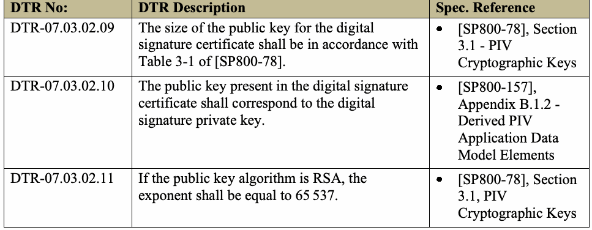
| DTR番号： | DTRの説明 | 仕様の参照先 |
| DTR-07.03.02.09 | デジタル署名証明書の公開鍵サイズは、[SP800-78]の表3-1に従わなければならない。 | • [SP800-78], Section 3.1 - PIV Cryptographic Keys |
| DTR-07.03.02.10 | デジタル署名証明書に含まれる公開鍵は、デジタル署名秘密鍵に対応しなければならない。 | • [SP800-157], Appendix B.1.2 - Derived PIV Application Data Model Elements |
| DTR-07.03.02.11 | 公開鍵アルゴリズムがRSAの場合、指数は65 537でなければならない。 | • [SP800-78], Section 3.1, PIV Cryptographic Keys |
7.3.3 X.509 Certificate for Key Management
7.3.3 鍵管理用X.509証明書
未レビュー訳[SP800-157] does not specify requirements on the key management key and certificate. The requirements listed herein follow those from [FIPS201] for key management certificates that are not issued by legacy PKIs, and thus do not actually apply to the X.509 Certificate for Key Management stored within a Derived PIV Application, with the exception that certificates that assert the id-fpki-common-policy, id-fpki-common-hardware, or id-fpki-common-High certificate policy OID are required by the corresponding certificate policy to conform to [PROF].
[SP800-157]は、鍵管理鍵および証明書の要件を規定していない。ここに示す要件は、従来型PKIから発行されない鍵管理証明書について[FIPS201]が定める要件に従うものであり、したがってDerived PIV Application内に格納された鍵管理用X.509証明書には実際には適用されない。ただし、証明書ポリシーOIDとしてid-fpki-common-policy、id-fpki-common-hardware、またはid-fpki-common-Highを指定する証明書は、対応する証明書ポリシーにより[PROF]への適合が求められる。
| DTR No: | DTR Description | Spec. Reference |
| DTR-07.03.03.01 | The signature field in the certificate shall specify an algorithm from Table 3-3 of [SP800-78] in the AlgorithmIdentifier. | • [SP800-78], Section 3.2.1 - Specification of Digital Signatures on Authentication Information |
| DTR-07.03.03.02 | If RSA with PSS padding is used, the parameters field of the AlgorithmIdentifier type shall assert Secure Hash Algorithm (SHA) 256 (OID = 2.16.840.1.101.3.4.2.1). For the other RSA algorithms, the parameters field is populated with NULL. For ECDSA, the parameters field is absent. | • [PROF], Worksheet titled - Key Management Certificate Profile |
| DTR-07.03.03.03 | The subjectPublicKeyInfo field shall assert an algorithm in the AlgorithmIdentifier in accordance with Table 3-4 of [SP800-78]. | • [SP800-78], Section 3.2.2 - Specification of Public Keys In X.509 Certificates |
| DTR-07.03.03.04 | If the public key algorithm is elliptic curve, then the parameters field contains the namedCurve choice populated with an appropriate OID from [SP800-78]. | • [PROF], Worksheet titled - Key Management Certificate Profile |
原本PDFの抜粋画像
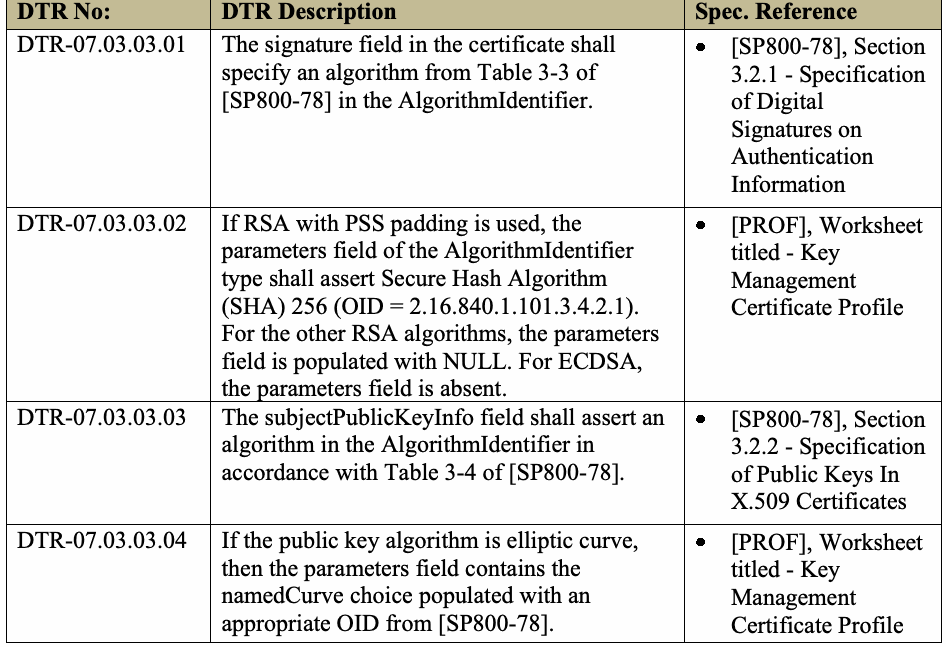
| DTR番号： | DTRの説明 | 仕様の参照先 |
| DTR-07.03.03.01 | 証明書のsignatureフィールドでは、AlgorithmIdentifierに[SP800-78]の表3-3に記載されたアルゴリズムを指定しなければならない。 | • [SP800-78], Section 3.2.1 - Specification of Digital Signatures on Authentication Information |
| DTR-07.03.03.02 | RSAでPSSパディングを使用する場合、AlgorithmIdentifier型のparametersフィールドにはSecure Hash Algorithm（SHA）256（OID = 2.16.840.1.101.3.4.2.1）を指定しなければならない。他のRSAアルゴリズムでは、parametersフィールドにNULLを設定する。ECDSAの場合、parametersフィールドは存在しない。 | • [PROF], Worksheet titled - Key Management Certificate Profile |
| DTR-07.03.03.03 | subjectPublicKeyInfoフィールドには、[SP800-78]の表3-4に従ったアルゴリズムをAlgorithmIdentifierで指定しなければならない。 | • [SP800-78], Section 3.2.2 - Specification of Public Keys In X.509 Certificates |
| DTR-07.03.03.04 | 公開鍵アルゴリズムが楕円曲線の場合、parametersフィールドのnamedCurve選択肢には、[SP800-78]に記載された適切なOIDを設定する。 | • [PROF], Worksheet titled - Key Management Certificate Profile |
| DTR No: | DTR Description | Spec. Reference |
| DTR-07.03.03.05 | If the public key algorithm is RSA, then the keyUsage extension shall only assert the keyEncipherment bit. If the public key algorithm is elliptic curve, then the keyUsage extension shall only assert the keyAgreement bit. | • [PROF], Worksheet titled - Key Management Certificate Profile |
| DTR-07.03.03.06 | The policyIdentifier field in the certificatePolicies must assert one of the following: id-fpki-common-policy (OID = 2.16.840.1.101.3.2.1.3.6), id-fpki-common- hardware (OID = 2.16.840.1.101.3.2.1.3.7) or id-fpki-common-High (OID = 2.16.840.1.101.3.2.1.3.16). | • [PROF], Worksheet titled - Key Management Certificate Profile |
| DTR-07.03.03.07 | The authorityInfoAccess field shall contain an id-ad-caIssuers (1.3.6.1.5.5.7.48.2) accessMethod. The access location shall to specify the location of an LDAP accessible directory server or HTTP accessible Web server where certificates issued to the issuer of this certificate may be found. If LDAP is used, the URI must include the DN of the entry containing the relevant certificates and specify the directory attribute in which the certificates are located. If the directory in which the certificates are stored expects the "binary" option to be specified, then the attribute type must be followed by ";binary" in the URI. If HTTP is used, the URI must point to a file that has an extension of ".p7c" containing a certs-only CMS message (see [RFC5751], Secure/Multipurpose Internet Mail Extensions (S/MIME) Version 3.2 Message Specification). | • [PROF], Worksheet titled - Key Management Certificate Profile |
| DTR-07.03.03.08 | The cRLDistributionPoints extension is required and must contain at least one URI, either LDAP or HTTP. If LDAP is used, the URI must include the DN of the entry containing the CRL and specify the directory attribute in which the CRL is located (certificateRevocationList). If HTTP is used, the URI must point to a file that has an extension of ".crl" that contains the DER encoded CRL. (see [RFC2585], Internet X.509 Public Key Infrastructure Operational Protocols: FTP and HTTP) | • [PROF], Worksheet titled - Key Management Certificate Profile |
原本PDFの抜粋画像
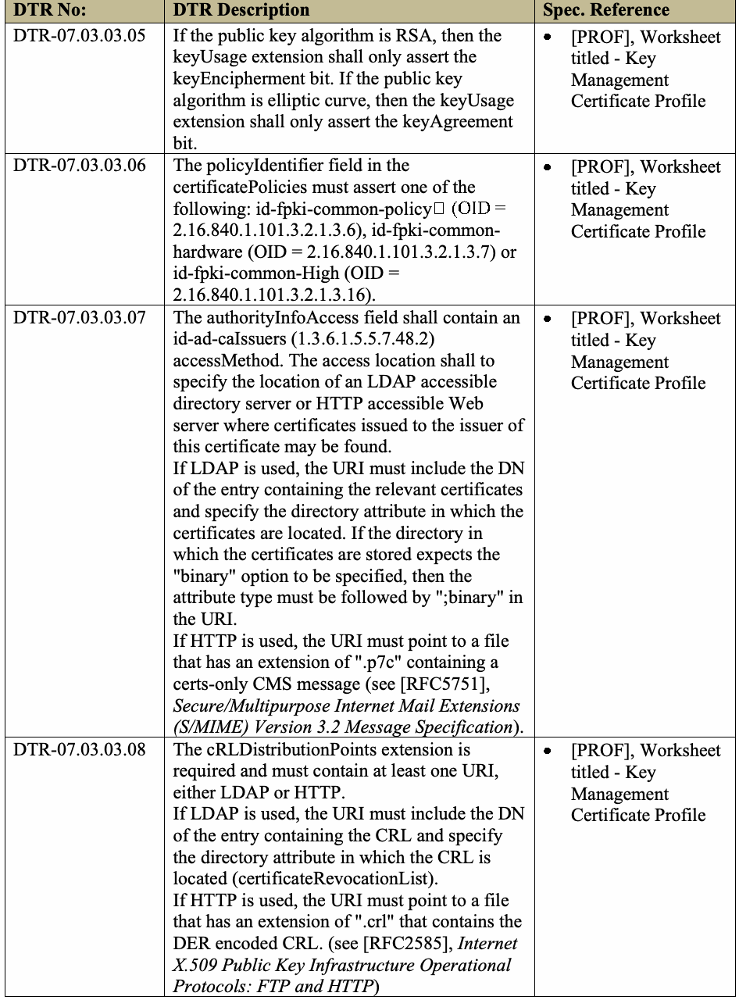
| DTR番号： | DTRの説明 | 仕様の参照先 |
| DTR-07.03.03.05 | 公開鍵アルゴリズムがRSAの場合、keyUsage拡張ではkeyEnciphermentビットだけを設定しなければならない。公開鍵アルゴリズムが楕円曲線の場合、keyUsage拡張ではkeyAgreementビットだけを設定しなければならない。 | • [PROF], Worksheet titled - Key Management Certificate Profile |
| DTR-07.03.03.06 | certificatePoliciesのpolicyIdentifierフィールドには、次のいずれかを指定しなければならない：id-fpki-common-policy（OID = 2.16.840.1.101.3.2.1.3.6）、id-fpki-common-hardware（OID = 2.16.840.1.101.3.2.1.3.7）、またはid-fpki-common-High（OID = 2.16.840.1.101.3.2.1.3.16）。 | • [PROF], Worksheet titled - Key Management Certificate Profile |
| DTR-07.03.03.07 | The authorityInfoAccess field shall contain an id-ad-caIssuers (1.3.6.1.5.5.7.48.2) accessMethod. The access location shall to specify the location of an LDAP accessible directory server or HTTP accessible Web server where certificates issued to the issuer of this certificate may be found. If LDAP is used, the URI must include the DN of the entry containing the relevant certificates and specify the directory attribute in which the certificates are located. If the directory in which the certificates are stored expects the "binary" option to be specified, then the attribute type must be followed by ";binary" in the URI. If HTTP is used, the URI must point to a file that has an extension of ".p7c" containing a certs-only CMS message (see [RFC5751], Secure/Multipurpose Internet Mail Extensions (S/MIME) Version 3.2 Message Specification). | • [PROF], Worksheet titled - Key Management Certificate Profile |
| DTR-07.03.03.08 | cRLDistributionPoints拡張は必須であり、LDAPまたはHTTPのURIを少なくとも1つ含まなければならない。LDAPを使用する場合、URIにはCRLを含むエントリのDNを含め、CRLが格納されたディレクトリ属性（certificateRevocationList）を指定しなければならない。HTTPを使用する場合、URIはDER符号化CRLを含む拡張子".crl"のファイルを指さなければならない（[RFC2585]「Internet X.509 Public Key Infrastructure Operational Protocols: FTP and HTTP」を参照）。 | • [PROF], Worksheet titled - Key Management Certificate Profile |
| DTR No: | DTR Description | Spec. Reference |
| DTR-07.03.03.09 | The size of the public key for the key management certificate shall be in accordance with Table 3-1 of [SP800-78]. | • [SP800-78], Section 3.1 - PIV Cryptographic Keys |
| DTR-07.03.03.10 | The public key present in the key management certificate shall correspond to the key management private key. | • [SP800-157], Appendix B.1.2 - Derived PIV Application Data Model Elements |
| DTR-07.03.03.11 | If the public key algorithm is RSA, the exponent shall be equal to 65 537. | • [SP800-78], Section 3.1, PIV Cryptographic Keys |
原本PDFの抜粋画像
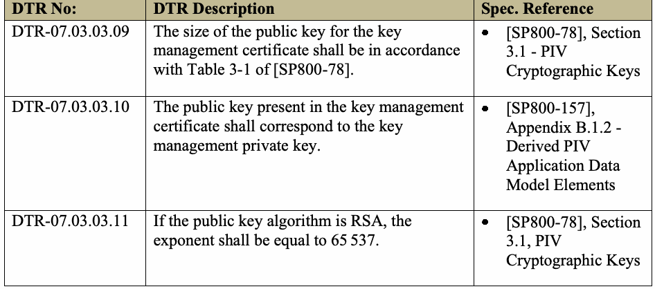
| DTR番号： | DTRの説明 | 仕様の参照先 |
| DTR-07.03.03.09 | 鍵管理証明書の公開鍵サイズは、[SP800-78]の表3-1に従わなければならない。 | • [SP800-78], Section 3.1 - PIV Cryptographic Keys |
| DTR-07.03.03.10 | 鍵管理証明書に含まれる公開鍵は、鍵管理秘密鍵に対応しなければならない。 | • [SP800-157], Appendix B.1.2 - Derived PIV Application Data Model Elements |
| DTR-07.03.03.11 | 公開鍵アルゴリズムがRSAの場合、指数は65 537でなければならない。 | • [SP800-78], Section 3.1, PIV Cryptographic Keys |
7.3.4 X.509 Certificate for the Derived PIV Credential Issuer (Content Signing)9
7.3.4 派生PIV資格情報発行者（コンテンツ署名）用X.509証明書9
未レビュー訳| DTR No: | DTR Description | Spec. Reference |
| DTR-07.03.04.01 | The signature field in the certificate shall specify one of the following algorithm OIDs: 1.2.840.113549.1.10 (id-RSASSA-PSS), 1.2.840.113549.1.11 (Sha256WithRSAEncryption), 1.2.840.10045.4.3.2 (edsa-with-Sha256), or 1.2.840.10045.4.3.3 (edsa-with-Sha384). | • [PROF], Worksheet titled - Common PIV Content Signing Certificate Profile |
| DTR-07.03.04.02 | If RSA with PSS padding is used, the parameters field of the AlgorithmIdentifier type shall assert SHA-256 (OID = 2.16.840.1.101.3.4.2.1). For RSA with PKCS #1 v1.5 padding, the parameters field is populated with NULL. For ECDSA, the parameters field is absent. | • [PROF], Worksheet titled - Common PIV Content Signing Certificate Profile |
| DTR-07.03.04.03 | The subjectPublicKeyInfo field shall assert one of the following algorithm OIDs: 1.2.840.113549.1.1.1 (RSA Encryption) or 1.2.840.10045.2.1 (Elliptic curve key). | • [PROF], Worksheet titled - Common PIV Content Signing Certificate Profile |
| DTR-07.03.04.04 | If the public key algorithm is elliptic curve, then the parameters field contains the namedCurve choice populated with one of the following OIDs: 1.2.840.10045.3.1.7 (Curve P-256) or 1.3.132.0.34 (Curve P-384). | • [PROF], Worksheet titled - Common PIV Content Signing Certificate Profile |
原本PDFの抜粋画像
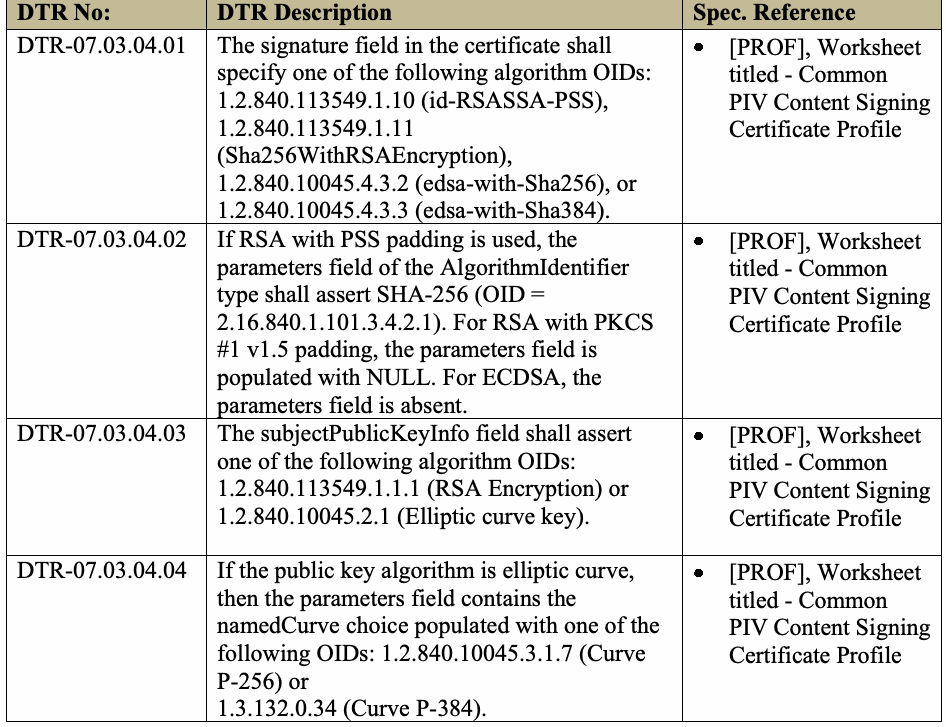
| DTR番号： | DTRの説明 | 仕様の参照先 |
| DTR-07.03.04.01 | 証明書のsignatureフィールドには、次のアルゴリズムOIDのいずれかを指定しなければならない：1.2.840.113549.1.10（id-RSASSA-PSS）、1.2.840.113549.1.11（Sha256WithRSAEncryption）、1.2.840.10045.4.3.2（edsa-with-Sha256）、または1.2.840.10045.4.3.3（edsa-with-Sha384）。 | • [PROF], Worksheet titled - Common PIV Content Signing Certificate Profile |
| DTR-07.03.04.02 | RSAでPSSパディングを使用する場合、AlgorithmIdentifier型のparametersフィールドにはSHA-256（OID = 2.16.840.1.101.3.4.2.1）を指定しなければならない。RSAでPKCS #1 v1.5パディングを使用する場合、parametersフィールドにはNULLを設定する。ECDSAの場合、parametersフィールドは存在しない。 | • [PROF], Worksheet titled - Common PIV Content Signing Certificate Profile |
| DTR-07.03.04.03 | subjectPublicKeyInfoフィールドには、次のアルゴリズムOIDのいずれかを指定しなければならない：1.2.840.113549.1.1.1（RSA Encryption）または1.2.840.10045.2.1（楕円曲線鍵）。 | • [PROF], Worksheet titled - Common PIV Content Signing Certificate Profile |
| DTR-07.03.04.04 | 公開鍵アルゴリズムが楕円曲線の場合、parametersフィールドのnamedCurve選択肢には、次のOIDのいずれかを設定する：1.2.840.10045.3.1.7（Curve P-256）または1.3.132.0.34（Curve P-384）。 | • [PROF], Worksheet titled - Common PIV Content Signing Certificate Profile |
| DTR No: | DTR Description | Spec. Reference |
| DTR-07.03.04.05 | The keyUsage extension shall assert the digitalSignature bit. No other bits shall be asserted. | • [PROF], Worksheet titled - Common PIV Content Signing Certificate Profile |
| DTR-07.03.04.06 | The policyIdentifier field in the certificatePolicies must assert the following: id-fpki-common-contentSigning (2.16.840.1.101.3.2.1.3.39). | • [SP800-157], Appendix B.1.2 - Derived PIV Application Data Model Elements • [FIPS201], Section 4.2.1, Cardholder Unique Identifier (CHUID) |
| DTR-07.03.04.07 | The extended key usage (extKeyUsage) extension shall assert the id-PIV-content- signing (OID = 2.16.840.1.101.3.6.7). | • [SP800-157], Appendix B.1.2 - Derived PIV Application Data Model Elements • [FIPS201], Section 4.2.1, Cardholder Unique Identifier (CHUID) |
| DTR-07.03.04.08 | Certificates must include an authorityInfoAccess extension with at least one instance of the caIssuers access method (1.3.6.1.5.5.7.48.2) that specifies an HTTP URI that points to a location where certificates issued to the issuer of this certificate may be found. The HTTP URI must point to a file that has an extension of ".p7c" containing a certs-only CMS message (see RFC 5751, Secure/Multipurpose Internet Mail Extensions (S/MIME) Version 3.2 Message Specification [RFC5751]). | • [PROF], Worksheet titled - Common PIV Content Signing Certificate Profile |
| DTR-07.03.04.09 | The cRLDistributionPoints extension is required and must contain at least URI, either LDAP or HTTP. If LDAP is used, the URI must include the DN of the entry containing the CRL and specify the directory attribute in which the CRL is located certificateRevocationList). | • [PROF], Worksheet titled - Common PIV Content Signing Certificate Profile |
原本PDFの抜粋画像
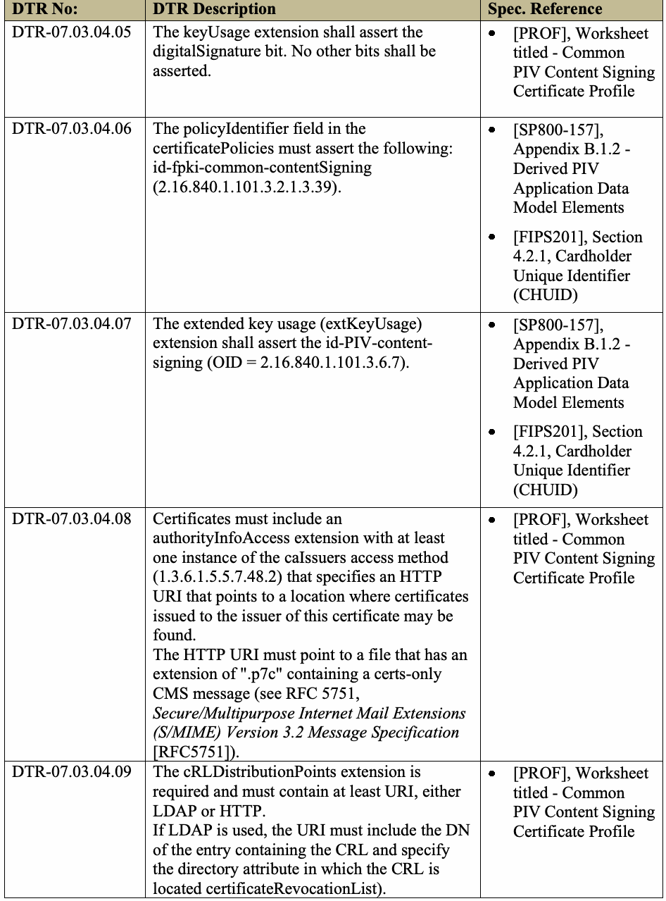
| DTR番号： | DTRの説明 | 仕様の参照先 |
| DTR-07.03.04.05 | keyUsage拡張ではdigitalSignatureビットを設定しなければならない。他のビットを設定してはならない。 | • [PROF], Worksheet titled - Common PIV Content Signing Certificate Profile |
| DTR-07.03.04.06 | certificatePoliciesのpolicyIdentifierフィールドには、id-fpki-common-contentSigning（2.16.840.1.101.3.2.1.3.39）を指定しなければならない。 | • [SP800-157], Appendix B.1.2 - Derived PIV Application Data Model Elements • [FIPS201], Section 4.2.1, Cardholder Unique Identifier (CHUID) |
| DTR-07.03.04.07 | 拡張鍵用途（extKeyUsage）拡張には、id-PIV-content-signing（OID = 2.16.840.1.101.3.6.7）を指定しなければならない。 | • [SP800-157], Appendix B.1.2 - Derived PIV Application Data Model Elements • [FIPS201], Section 4.2.1, Cardholder Unique Identifier (CHUID) |
| DTR-07.03.04.08 | 証明書には、caIssuers access method（1.3.6.1.5.5.7.48.2）のインスタンスを少なくとも1つ含むauthorityInfoAccess拡張を含めなければならない。この拡張では、この証明書の発行者に発行された証明書を入手できる場所を指すHTTP URIを指定する。HTTP URIは、証明書のみを含むCMSメッセージが格納された拡張子".p7c"のファイルを指さなければならない（RFC 5751「Secure/Multipurpose Internet Mail Extensions (S/MIME) Version 3.2 Message Specification」[RFC5751]を参照）。 | • [PROF], Worksheet titled - Common PIV Content Signing Certificate Profile |
| DTR-07.03.04.09 | cRLDistributionPoints拡張は必須であり、LDAPまたはHTTPのURIを「少なくとも」含む必要がある。LDAPを使用する場合、URIにはCRLを含むエントリのDNを含め、CRLが格納されたディレクトリ属性（certificateRevocationList）を指定しなければならない。 | • [PROF], Worksheet titled - Common PIV Content Signing Certificate Profile |
| DTR No: | DTR Description | Spec. Reference |
| If HTTP is used, the URI must point to a file that has an extension of ".crl" that contains the DER encoded CRL. (see [RFC2585], Internet X.509 Public Key Infrastructure Operational Protocols: FTP and HTTP) | ||
| DTR-07.03.04.10 | The size of the subject public key in the Derived PIV Credential Issuer’s (content signing) certificate shall conform to Table 3-2 in [SP800-78]. | • [SP800-78], Section 3.2.1 – Specification of Digital Signatures on Authentication Information |
原本PDFの抜粋画像
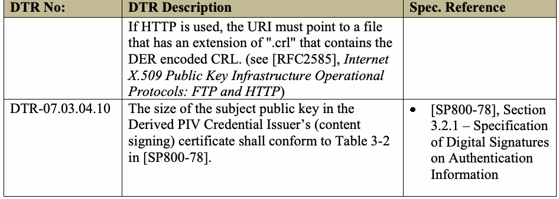
| DTR番号： | DTRの説明 | 仕様の参照先 |
| HTTPを使用する場合、URIはDER符号化CRLを含む拡張子".crl"のファイルを指さなければならない（[RFC2585]「Internet X.509 Public Key Infrastructure Operational Protocols: FTP and HTTP」を参照）。 | ||
| DTR-07.03.04.10 | Derived PIV Credential Issuer（コンテンツ署名）証明書のサブジェクト公開鍵のサイズは、[SP800-78]の表3-2に適合しなければならない。 | • [SP800-78], Section 3.2.1 – Specification of Digital Signatures on Authentication Information |
8. Test Assertions for the Derived PIV Application
8 Derived PIV Applicationのテストアサーション
未レビュー訳This section lists the test assertions used to determine conformity to the derived test requirements (DTR) listed in Section 6. The Implementation Under Test (IUT), in this case a Derived PIV Application submitted by a vendor, must meet the stated objective(s) of the assertion by way of a test or submission of documents/artifacts in order to be deemed conformant to the associated DTR(s).
この節では、第6節に示した派生テスト要件（DTR）への適合を判定するためのテストアサーションを列挙する。ここでの被試験実装（IUT）は、ベンダーが提出したDerived PIV Applicationであり、関連するDTRへの適合と認められるには、テストまたは文書・成果物の提出によって、アサーションに記載された目的を満たさなければならない。
8.1 Transport Layer Conformance
8.1 トランスポート層の適合性
未レビュー訳8.1.1 UICC
8.1.1 UICC
未レビュー訳8.1.1.1 GlobalPlatform Support for UICC Tokens
8.1.1.1 UICCトークンのGlobalPlatformサポート
原本PDFの抜粋画像
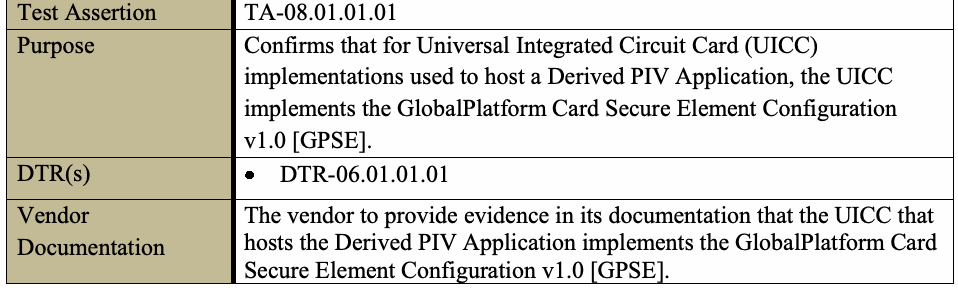
原本PDFの抜粋画像

8.1.2 USB
8.1.2 USB
未レビュー訳8.1.2.1 ICCD Specification Support for USB Tokens
8.1.2.1 USBトークンのICCD仕様サポート
原本PDFの抜粋画像
原本PDFの抜粋画像

8.1.2.2 SP 800-96 Support for USB Tokens
8.1.2.2 USBトークンのSP 800-96サポート
原本PDFの抜粋画像
原本PDFの抜粋画像

8.2 Derived PIV Application Data Object Access/Storage Conformance
8.2 Derived PIV Applicationデータオブジェクトのアクセス／格納の適合性
未レビュー訳8.2.1 General
8.2.1 一般
未レビュー訳8.2.1.1 Support for Contact Interface
8.2.1.1 接触インターフェースのサポート
原本PDFの抜粋画像
8.2.1.2 One Derived PIV Application
8.2.1.2 単一のDerived PIV Application
原本PDFの抜粋画像
8.2.2 Derived PIV Application Data Objects and Representation
8.2.2 Derived PIV Applicationデータオブジェクトおよび表現
未レビュー訳8.2.2.1 Derived PIV Application Data Objects
8.2.2.1 Derived PIV Applicationデータオブジェクト
原本PDFの抜粋画像
原本PDFの抜粋画像
8.2.2.2 Derived PIV Data Objects Container Capacity
8.2.2.2 Derived PIVデータオブジェクトのコンテナ容量
原本PDFの抜粋画像
原本PDFの抜粋画像
8.2.2.3 Status Words
8.2.2.3 ステータスワード
原本PDFの抜粋画像
原本PDFの抜粋画像

8.2.2.4 BER-TLV for the Derived PIV Data Objects
8.2.2.4 Derived PIVデータオブジェクトのBER-TLV
原本PDFの抜粋画像
原本PDFの抜粋画像
8.2.2.5 Key Reference Values
8.2.2.5 鍵参照値
原本PDFの抜粋画像
8.2.2.6 Algorithm Identifiers
8.2.2.6 アルゴリズム識別子
原本PDFの抜粋画像
原本PDFの抜粋画像
8.3 Derived PIV Application Command Interface Conformance
8.3 Derived PIV Applicationコマンドインターフェースの適合性
未レビュー訳8.3.1 SELECT Command
8.3.1 SELECTコマンド
未レビュー訳8.3.1.1 Select using the Full and Truncated AID
8.3.1.1 完全なAIDおよび短縮AIDによる選択
原本PDFの抜粋画像
| • Suitable drivers have been loaded between the test system and an instance of the reader. | |
| Test Scenario | 1. Send the SELECT command with • AID == 'A0 00 00 03 08 00 00 20 00 01 00' 2. Send the SELECT command without the version number • AID == 'A0 00 00 03 08 00 00 20 00' |
| Expected Result(s) | 1. From Step 1, the command returns the application property template with the status word '90 00' at the end. Check that the application property template conforms to Table 3 of [SP800-73], Part 2, with the exception that the returned AID is the AID listed in Section B.1.1 of [SP800-157]. 2. From Step 2, the command returns the application property template with the status word '90 00' at the end. Check that the application property template conforms to Table 3 of [SP800-73], Part 2, with the exception that the returned AID is the AID listed in Section B.1.1 of [SP800-157]. |
| Postcondition(s) | The Derived PIV Application is now the currently selected application. The application security status of the Derived PIV Application is established. |
原本PDFの抜粋画像
| • テストシステムとリーダーの間に適切なドライバーが読み込まれている。 | |
| テストシナリオ | 1. 次のAIDを指定してSELECTコマンドを送信する。 • AID == 'A0 00 00 03 08 00 00 20 00 01 00' 2. バージョン番号を付けずにSELECTコマンドを送信する。 • AID == 'A0 00 00 03 08 00 00 20 00' |
| 期待結果 | 1. ステップ1では、コマンドは末尾にステータスワード '90 00' を付けてApplication Property Templateを返す。返されたAIDが[SP800-157]の第B.1.1節に記載されたAIDである点を除き、Application Property Templateが[SP800-73]第2部の表3に適合することを確認する。2. ステップ2でも、コマンドは末尾にステータスワード '90 00' を付けてApplication Property Templateを返す。同じ例外を適用し、[SP800-73]第2部の表3への適合を確認する。 |
| 事後条件 | これでDerived PIV Applicationが現在選択中のアプリケーションとなる。Derived PIV Applicationのアプリケーションセキュリティ状態が確立される。 |
8.3.1.2 Default Selected Application
8.3.1.2 デフォルトで選択されるアプリケーション
原本PDFの抜粋画像
8.3.1.3 Select when Derived PIV Application is Currently Selected
8.3.1.3 Derived PIV Applicationが現在選択されている場合の選択
原本PDFの抜粋画像
| Precondition(s) | • A token with the Derived PIV Application is inserted into an appropriate token reader. • Suitable drivers have been loaded between the test system and an instance of the reader. • The Derived PIV Application Password’s retry counter is not 0. |
| Test Scenario | 1. Send the SELECT command with • AID == 'A0 00 00 03 08 00 00 20 00 01 00' 2. Send the VERIFY command with • P2, key reference value, is set to '80' • Data field of the command will contain the correct Derived PIV Application Password, padded with 'FF' (if necessary) to complete the total length of the value to 8 bytes 3. Repeat Step 1 4. Send the GENERAL AUTHENTICATE command • CLA is set to: 1. '00' if command chaining is not needed or '10' if command chaining is used. (The last chain of the command sets CLA to '00') • P1, algorithm reference, is set to '07' or '11' P2, key reference, is set to '9A' indicating the Derived PIV Authentication key • Data field in the command is to include '81' specifying a challenge, followed by a randomly generated challenge, and '82 00' in order to request a response |
| Expected Result(s) | 1. From Step 1, the command returns the application property template with the status word '90 00'. 2. From Step 2, the command returns status word '90 00'. 3. From Step 3, the command returns the application property template with the status word '90 00'. 4. From Step 4, the command returns the signed challenge with status word '90 00'. |
| Postcondition(s) | The Derived PIV Application is the currently selected application and the security status of the Derived PIV Application Password is TRUE. |
原本PDFの抜粋画像
| 前提条件 | • Derived PIV Applicationを搭載したトークンが適切なトークンリーダーに挿入されている。 • テストシステムとリーダーの間に適切なドライバーが読み込まれている。 • Derived PIV Application Passwordの再試行カウンターが0ではない。 |
| テストシナリオ | 1. 次のAIDを指定してSELECTコマンドを送信する。 • AID == 'A0 00 00 03 08 00 00 20 00 01 00' 2. 次の条件でVERIFYコマンドを送信する。 • P2（鍵参照値）を '80' に設定する。 • コマンドのデータフィールドには正しいDerived PIV Application Passwordを格納し、値の合計長が8バイトになるよう必要に応じて 'FF' でパディングする。3. ステップ1を繰り返す。4. GENERAL AUTHENTICATEコマンドを送信する。 • CLAを次のように設定する：コマンド連鎖を使用しない場合は '00'、使用する場合は '10'（最後の連鎖ではCLAを '00' にする）。 • P1（アルゴリズム参照）を '07' または '11' に設定する。P2（鍵参照）を '9A' に設定し、Derived PIV Authentication鍵を指定する。 • コマンドのデータフィールドには、チャレンジを指定する '81'、ランダムに生成したチャレンジ、応答を要求する '82 00' を含める。 |
| 期待結果 | 1. ステップ1では、コマンドはステータスワード '90 00' とともにApplication Property Templateを返す。2. ステップ2では、コマンドはステータスワード '90 00' を返す。3. ステップ3では、コマンドはステータスワード '90 00' とともにApplication Property Templateを返す。4. ステップ4では、コマンドはステータスワード '90 00' とともに署名済みチャレンジを返す。 |
| 事後条件 | Derived PIV Applicationが現在選択中のアプリケーションであり、Derived PIV Application Passwordのセキュリティ状態はTRUEである。 |
8.3.1.4 Select with an Invalid AID when Derived PIV Application is Currently Selected
8.3.1.4 Derived PIV Applicationが現在選択されている場合の無効なAIDによる選択
原本PDFの抜粋画像
| Precondition(s) | • A token with the Derived PIV Application is inserted into an appropriate token reader. • Suitable drivers have been loaded between the test system and an instance of the reader. • The Derived PIV Application Password’s retry counter is not 0. |
| Test Scenario | 1. Send the SELECT command with • AID == 'A0 00 00 03 08 00 00 20 00 01 00' 2. Send the VERIFY command with • P2, key reference value, is set to '80' • Data field of the command will contain the correct Derived PIV Application Password, padded with 'FF' (if necessary) to complete the total length of the value to 8 bytes 3. Repeat Step 1 with • AID == 'A0 00 00 03 08 00 00 00 00' (invalid AID) 4. Send the GENERAL AUTHENTICATE command • CLA is set to: 1. '00' if command chaining is not needed or '10' if command chaining is used. (The last chain of the command sets CLA to '00') • P1, algorithm reference, is set to '07' or '11'. P2, key reference, is set to '9A' indicating the Derived PIV Authentication Key • Data field in the command is to include '81' specifying a challenge, followed by a randomly generated challenge, and '82 00' in order to request a response |
| Expected Result(s) | 1. From Step 1, the command returns the application property template with the status word '90 00'. 2. From Step 2, the command returns status word '90 00'. 3. From Step 3, the command returns '6A 82' (application not found). 4. From Step 4, the command returns the signed challenge with the status word '90 00'. |
| Postcondition(s) | The Derived PIV Application continues to be the currently selected application and the application security status of the Derived PIV Application Password is TRUE. |
原本PDFの抜粋画像
| 前提条件 | • Derived PIV Applicationを搭載したトークンが適切なトークンリーダーに挿入されている。 • テストシステムとリーダーの間に適切なドライバーが読み込まれている。 • Derived PIV Application Passwordの再試行カウンターが0ではない。 |
| テストシナリオ | 1. 次のAIDを指定してSELECTコマンドを送信する。 • AID == 'A0 00 00 03 08 00 00 20 00 01 00' 2. 次の条件でVERIFYコマンドを送信する。 • P2（鍵参照値）を '80' に設定する。 • コマンドのデータフィールドには正しいDerived PIV Application Passwordを格納し、値の合計長が8バイトになるよう必要に応じて 'FF' でパディングする。3. 次の無効なAIDを指定してステップ1を繰り返す。 • AID == 'A0 00 00 03 08 00 00 00 00'（無効なAID）4. GENERAL AUTHENTICATEコマンドを送信する。 • CLAを次のように設定する：コマンド連鎖を使用しない場合は '00'、使用する場合は '10'（最後の連鎖ではCLAを '00' にする）。 • P1（アルゴリズム参照）を '07' または '11' に設定する。P2（鍵参照）を '9A' に設定し、Derived PIV Authentication鍵を指定する。 • コマンドのデータフィールドには、チャレンジを指定する '81'、ランダムに生成したチャレンジ、応答を要求する '82 00' を含める。 |
| 期待結果 | 1. ステップ1では、コマンドはステータスワード '90 00' とともにApplication Property Templateを返す。2. ステップ2では、コマンドはステータスワード '90 00' を返す。3. ステップ3では、コマンドは '6A 82'（アプリケーションが見つからない）を返す。4. ステップ4では、コマンドはステータスワード '90 00' とともに署名済みチャレンジを返す。 |
| 事後条件 | Derived PIV Applicationは引き続き現在選択中のアプリケーションであり、Derived PIV Application Passwordのアプリケーションセキュリティ状態はTRUEである。 |
8.3.1.5 Select with Another Valid AID when Derived PIV Application is Currently
8.3.1.5 別の有効なAIDによる選択：Derived PIV Applicationが現在
未レビュー訳Selected
選択されている場合
未レビュー訳原本PDFの抜粋画像
8.3.2 GET DATA Command
8.3.2 GET DATAコマンド
未レビュー訳8.3.2.1 Get Data for the Various Derived PIV Data Objects
8.3.2.1 各種Derived PIVデータオブジェクトの取得
原本PDFの抜粋画像
| 6. If the Discovery Object is supported, send the GET DATA command with • Data field of the command containing the tag ('7E') of the Discovery Object 7. If the Security Object is supported, send the GET DATA command with • Data field of the command containing the tag ('5FC106') of the Security Object 8. Send the GET DATA command with • Data field of the command containing a tag that does not identify any of the data objects within the Derived PIV Application. | |
| Expected Result(s) | 1. From Step 1, the command returns the application property template with the status word '90 00'. 2. For Steps 2, 3, 4, 5A, 5B, 6 and 7, each command returns the requested data object along with the status word '90 00'. 3. For Step 8, the command returns status word '6A 82' (data object not found). |
| Postcondition(s) | N/A |
原本PDFの抜粋画像
| 6. Discovery Objectがサポートされている場合、Discovery Objectのタグ（'7E'）をデータフィールドに含めてGET DATAコマンドを送信する。7. Security Objectがサポートされている場合、Security Objectのタグ（'5FC106'）をデータフィールドに含めてGET DATAコマンドを送信する。8. Derived PIV Application内のいずれのデータオブジェクトも識別しないタグをデータフィールドに含めてGET DATAコマンドを送信する。 | |
| 期待結果 | 1. ステップ1では、コマンドはステータスワード '90 00' とともにApplication Property Templateを返す。2. ステップ2、3、4、5A、5B、6および7では、各コマンドは要求されたデータオブジェクトとステータスワード '90 00' を返す。3. ステップ8では、コマンドはステータスワード '6A 82'（データオブジェクトが見つからない）を返す。 |
| 事後条件 | N/A |
8.3.3 GENERAL AUTHENTICATE Command
8.3.3 GENERAL AUTHENTICATEコマンド
未レビュー訳8.3.3.1 Internal Authenticate with the Derived PIV Authentication Key
8.3.3.1 Derived PIV認証鍵による内部認証
原本PDFの抜粋画像
| 2. '10' if command chaining is used. (The last chain of the command sets CLA to '00') • P1, algorithm reference, is set to '07' or '11' • P2, key reference, is set to '9A' (the Derived PIV Authentication key) • Data field in the command is to include '81' specifying a challenge, followed by a randomly generated challenge, and '82 00' in order to request a response 3. Send the VERIFY command with • P2, key reference value, is set to '80' • Data field of the command will contain the correct Derived PIV Application Password, padded with 'FF' (if necessary) to complete the total length of the value to 8 bytes 4. Repeat Step 2 | |
| Expected Result(s) | 1. From Step 1, the command returns the application property template with the status word '90 00'. 2. From Step 2, the command returns status word '69 82' (security status not satisfied). 3. From Step 3, the command returns status word '90 00'. 4. From Step 4, the command returns the signed challenge with status word '90 00'. Verify the signed challenge. |
| Postcondition(s) | N/A |
原本PDFの抜粋画像
| 2. コマンド連鎖を使用する場合は'10'。（コマンド連鎖の最後のブロックではCLAを'00'に設定する。） • P1（アルゴリズム参照）は'07'または'11'とする。 • P2（鍵参照）は'9A'（Derived PIV Authentication鍵）とする。 • コマンドのデータフィールドには、チャレンジを指定する'81'、ランダムに生成したチャレンジ、および応答を要求するための'82 00'を含める。3. VERIFYコマンドを送信する。 • P2（鍵参照値）は'80'とする。 • コマンドのデータフィールドには正しいDerived PIVアプリケーションのパスワードを格納し、必要な場合は'FF'でパディングして値の合計長を8バイトにする。4. 手順2を繰り返す。 | |
| 期待される結果 | 1. 手順1で、コマンドはステータスワード'90 00'とともにアプリケーションプロパティテンプレートを返す。2. 手順2で、コマンドはステータスワード'69 82'（セキュリティ状態が満たされていない）を返す。3. 手順3で、コマンドはステータスワード'90 00'を返す。4. 手順4で、コマンドはステータスワード'90 00'とともに署名済みチャレンジを返す。署名済みチャレンジを検証する。 |
| 事後条件 | 該当なし |
8.3.3.2 Internal Authenticate with the Derived PIV Authentication Key (with an Invalid
8.3.3.2 Derived PIV Authentication鍵による内部認証（アルゴリズム参照およびデータ長が無効な場合
未レビュー訳Algorithm Reference and Data Length)
）
未レビュー訳原本PDFの抜粋画像
| Test Scenario | 1. Send the SELECT command with • AID == 'A0 00 00 03 08 00 00 20 00 01 00' 2. Send the VERIFY command with • P2, key reference value, is set to '80' • Data field of the command will contain the correct Derived PIV Application Password, padded with 'FF' (if necessary) to complete the total length of the value to 8 bytes 3. Send the GENERAL AUTHENTICATE command • CLA is set to: 1. '00' if command chaining is not needed or 2. '10' if command chaining is used. (The last chain of the command sets CLA to '00') • P1, algorithm reference, is set to something other than '07' or '11' (indicating an invalid algorithm reference) • P2, key reference, is set to '9A' (the Derived PIV Authentication key) • Data field in the command is to include '81' specifying a challenge, followed by a randomly generated challenge, and '82 00' in order to request a response 4. Send the GENERAL AUTHENTICATE command • CLA is set to: 1. '00' if command chaining is not needed or 2. '10' if command chaining is used. (The last chain of the command sets CLA to '00') • P1, algorithm reference, is set to '07' or '11' • P2, key reference, is set to '9A' (the Derived PIV Authentication key) • Data field in the command is to include '81' specifying a challenge, followed by a randomly generated challenge (which is of incorrect length based on the chosen algorithm [e.g., challenge is greater than they key size]), and '82 00' in order to request a response |
| Expected Result(s) | 1. From Step 1, the command returns the application property template with the status word '90 00'. 2. From Step 2, the command returns status word '90 00'. 3. From Step 3, the command returns status word '6A 86' (incorrect parameter in P1 or P2). 4. From Step 4, the command returns status word '6A 80' (incorrect parameter in command data field). |
| Postcondition(s) | N/A |
原本PDFの抜粋画像
| 試験シナリオ | 1. SELECTコマンドを送信する。 • AID == 'A0 00 00 03 08 00 00 20 00 01 00' 2. VERIFYコマンドを送信する。 • P2（鍵参照値）は'80'とする。 • コマンドのデータフィールドには正しいDerived PIVアプリケーションのパスワードを格納し、必要な場合は'FF'でパディングして値の合計長を8バイトにする。3. GENERAL AUTHENTICATEコマンドを送信する。 • CLAは次のとおりとする：1. コマンド連鎖を行わない場合は'00'、または2. コマンド連鎖を使用する場合は'10'。（コマンド連鎖の最後のブロックではCLAを'00'に設定する。） • P1（アルゴリズム参照）は'07'または'11'以外の値（無効なアルゴリズム参照を示す値）とする。 • P2（鍵参照）は'9A'（Derived PIV Authentication鍵）とする。 • コマンドのデータフィールドには、チャレンジを指定する'81'、ランダムに生成したチャレンジ、および応答を要求する'82 00'を含める。4. GENERAL AUTHENTICATEコマンドを送信する。 • CLAは次のとおりとする：1. コマンド連鎖を行わない場合は'00'、または2. コマンド連鎖を使用する場合は'10'。（コマンド連鎖の最後のブロックではCLAを'00'に設定する。） • P1（アルゴリズム参照）は'07'または'11'とする。 • P2（鍵参照）は'9A'（Derived PIV Authentication鍵）とする。 • コマンドのデータフィールドには、チャレンジを指定する'81'、選択したアルゴリズムに対して長さが不正な（例えば、チャレンジが鍵サイズを超える）ランダム生成チャレンジ、および応答を要求する'82 00'を含める。 |
| 期待される結果 | 1. 手順1で、コマンドはステータスワード'90 00'とともにアプリケーションプロパティテンプレートを返す。2. 手順2で、コマンドはステータスワード'90 00'を返す。3. 手順3で、コマンドはステータスワード'6A 86'（P1またはP2のパラメーターが不正）を返す。4. 手順4で、コマンドはステータスワード'6A 80'（コマンドデータフィールドのパラメーターが不正）を返す。 |
| 事後条件 | 該当なし |
8.3.3.3 Mutual Authenticate with Derived PIV Token Management Key
8.3.3.3 Derived PIVトークン管理鍵による相互認証
原本PDFの抜粋画像
原本PDFの抜粋画像
8.3.3.4 External Authenticate with Derived PIV Token Management Key
8.3.3.4 Derived PIVトークン管理鍵による外部認証
| 試験アサーション | TA-08.03.03.04 |
原本PDFの抜粋画像
8.3.3.5 General Authenticate with the Digital Signature Key
8.3.3.5 デジタル署名鍵によるGENERAL AUTHENTICATE
原本PDFの抜粋画像
原本PDFの抜粋画像
8.3.3.6 Internal Authenticate with the Digital Signature Key (with Invalid Algorithm
8.3.3.6 デジタル署名鍵による内部認証（無効なアルゴリズム
未レビュー訳Reference and Data Length)
参照およびデータ長）
未レビュー訳原本PDFの抜粋画像
| • CLA is set to: 1. '00' if command chaining is not needed or 2. '10' if command chaining is used. (The last chain of the command sets CLA to '00') • P1, algorithm reference, is set to '07', '11' or '14' • P2, key reference, is set to '9C' indicating the digital signature key • Data field in the command is to include '81' specifying a challenge, followed by a randomly generated challenge (with an incorrect length based on the chosen algorithm [e.g., challenge is greater than they key size]), and '82 00' in order to request a response | |
| Expected Result(s) | 1. From Step 1, the command returns the application property template with the status word '90 00'. 2. From Step 2, the command returns status word '90 00'. 3. From Step 3, the command returns status word '6A 86' (incorrect parameter in P1 or P2). 4. From Step 4, the command returns status word '90 00'. 5. From Step 5, the command returns status word '6A 80' (incorrect parameter in command data field). |
| Postcondition(s) | N/A |
原本PDFの抜粋画像
| • CLAは次のとおりとする：1. コマンド連鎖を行わない場合は'00'、または2. コマンド連鎖を使用する場合は'10'。（コマンド連鎖の最後のブロックではCLAを'00'に設定する。） • P1（アルゴリズム参照）は'07'、'11'、または'14'とする。 • P2（鍵参照）は'9C'（デジタル署名鍵を示す）とする。 • データフィールドには、チャレンジを指定する'81'、選択アルゴリズムで不正な長さ（例：チャレンジが鍵サイズを超える）のランダム生成チャレンジ、および応答要求'82 00'を含める。 | |
| 期待される結果 | 1. 手順1で、コマンドはステータスワード'90 00'とともにアプリケーションプロパティテンプレートを返す。2. 手順2で、コマンドはステータスワード'90 00'を返す。3. 手順3で、コマンドはステータスワード'6A 86'（P1またはP2のパラメーターが不正）を返す。4. 手順4で、コマンドはステータスワード'90 00'を返す。5. 手順5で、コマンドはステータスワード'6A 80'（コマンドデータフィールドのパラメーターが不正）を返す。 |
| 事後条件 | 該当なし |
8.3.3.7 General Authenticate with the Key Management Key
8.3.3.7 鍵管理鍵によるGENERAL AUTHENTICATE
原本PDFの抜粋画像
| 1. '00' if command chaining is not needed or 2. '10' if command chaining is used. (The last chain of the command sets CLA to '00') • P1, algorithm reference, is set to '07', '11' or '14' • P2, key reference, is set to '9D' indicating the key management key • Data field in the command is to include one of the following: 1. If P1 = '07', the template '81' contains an encrypted key 2. If P1 = '11' or '14', the template '85' contain the other party’s public key.10 3. Send the VERIFY command with • P2, key reference value, is set to '80' • Data field of the command will contain the correct Derived PIV Application Password value, padded with 'FF' (if necessary) to complete the total length of the value to 8 bytes 4. Repeat Step 2 5. Send the GENERAL AUTHENTICATE command • CLA is set to: 1. '00' if command chaining is not needed or 2. '10' if command chaining is used. (The last chain of the command sets CLA to '00') • P1, algorithm reference, is set to something other than '07', '11' or '14' (indicating incorrect algorithm) • P2, key reference, is set to '9D' indicating the key management key • Data field in the command is to include a template appropriate for the '9D' key. 6. Send the GENERAL AUTHENTICATE command • CLA is set to: 1. '00' if command chaining is not needed or 2. '10' if command chaining is used. (The last chain of the command sets CLA to '00') • P1, algorithm reference, is set to '07', '11' or '14' • P2, key reference, is set to '9D' indicating the key management key • Data field in the command is to include a malformed template. | |
| Expected Result(s) | 1. From Step 1, the command returns the application property template with the status word '90 00'. 2. From Step 2, the command returns status word '69 82' (security status not satisfied). 3. From Step 3, the command returns status word '90 00'. 4. From Step 4, for algorithm reference '07' as P1 value, the command returns the transported key with status word '90 00'. Compare the |
原本PDFの抜粋画像
| 1. コマンド連鎖を行わない場合は'00'、または2. コマンド連鎖を使用する場合は'10'。（コマンド連鎖の最後のブロックではCLAを'00'に設定する。） • P1（アルゴリズム参照）は'07'、'11'、または'14'とする。 • P2（鍵参照）は'9D'（鍵管理鍵を示す）とする。 • コマンドのデータフィールドには、次のいずれかを含める：1. P1 = '07'の場合、テンプレート'81'に暗号化鍵を格納する。2. P1 = '11'または'14'の場合、テンプレート'85'に相手側の公開鍵を格納する。10 3. VERIFYコマンドを送信する。 • P2（鍵参照値）は'80'とする。 • コマンドのデータフィールドには正しいDerived PIVアプリケーションのパスワード値を格納し、必要な場合は'FF'でパディングして合計長を8バイトにする。4. 手順2を繰り返す。5. GENERAL AUTHENTICATEコマンドを送信する。 • CLAは次のとおりとする：1. コマンド連鎖を行わない場合は'00'、または2. コマンド連鎖を使用する場合は'10'。（コマンド連鎖の最後のブロックではCLAを'00'に設定する。） • P1（アルゴリズム参照）は'07'、'11'、'14'以外（誤ったアルゴリズムを示す値）とする。 • P2（鍵参照）は'9D'（鍵管理鍵を示す）とする。 • データフィールドに'9D'鍵に適したテンプレートを含める。6. GENERAL AUTHENTICATEコマンドを送信する。 • CLAは次のとおりとする：1. コマンド連鎖を行わない場合は'00'、または2. コマンド連鎖を使用する場合は'10'。（コマンド連鎖の最後のブロックではCLAを'00'に設定する。） • P1（アルゴリズム参照）は'07'、'11'、または'14'とする。 • P2（鍵参照）は'9D'（鍵管理鍵を示す）とする。 • データフィールドに不正形式のテンプレートを含める。 | |
| 期待される結果 | 1. 手順1で、コマンドはステータスワード'90 00'とともにアプリケーションプロパティテンプレートを返す。2. 手順2で、コマンドはステータスワード'69 82'（セキュリティ状態が満たされていない）を返す。3. 手順3で、コマンドはステータスワード'90 00'を返す。4. 手順4で、P1値としてアルゴリズム参照'07'を指定した場合、コマンドはステータスワード'90 00'とともに転送された鍵を返す。次を比較する： |
| test toolkit application’s copy of the plaintext key to the one received in the response from the token. For algorithm reference '11' or '14' as P1 value, the command returns the shared secret Z11 with status word '90 00'. Compare the shared secret computed by the token with the shared secret computed off token. 5. From Step 5, the command returns status word '6A 86' (incorrect parameter in P1 or P2). 6. From Step 6, the command returns status word '6A 80' (incorrect parameter in command data field). | |
| Postcondition(s) | N/A |
原本PDFの抜粋画像
| 試験ツールキットアプリケーションが保持する平文鍵のコピーと、トークンの応答で受信した鍵を比較する。P1値が'11'または'14'のアルゴリズム参照の場合、コマンドは共有秘密Z11とステータスワード'90 00'を返す。トークンが計算した共有秘密と、トークン外で計算した共有秘密を比較する。5. 手順5で、コマンドはステータスワード'6A 86'（P1またはP2のパラメーターが不正）を返す。6. 手順6で、コマンドはステータスワード'6A 80'（コマンドデータフィールドのパラメーターが不正）を返す。 | |
| 事後条件 | 該当なし |
8.3.3.8 General Authenticate with the Retired Key Management Keys
8.3.3.8 廃止済み鍵管理鍵によるGENERAL AUTHENTICATE
原本PDFの抜粋画像
| o Read the certificate(s) and key references (pairs) from the vendor provided URL file. For each key reference value in the range (0x95 – keysWithOffCardCerts + 1) through 0x95, verify that the provided URL file includes that key reference, issue a challenge for that key reference (follow Step 2 from TA-08.03.03.07), and verify the response using the public key from the corresponding certificate from the provided URL file • If keysWithOnCardCerts > 0 and keyWithOffCardCerts = 0 o For each key reference value in the range 0x82 through (0x82 + keysWithOnCardCerts – 1), read the certificates from the token and issue a challenge for each retired private key12 (follow Step 2 from TA- 08.03.03.07), and verify the response using the public key from the corresponding certificate. • If keysWithOnCardCerts > 0 and keyWithOffCardCerts > 0 For each key reference value in the range 0x82 through (0x82 + keysWithOnCardCerts – 1) and in the range (0x95 – keysWithOffCardCerts + 1) through 0x95, verify that the provided URL file includes that key reference, issue a challenge for that key reference (follow Step 2 from TA- 08.03.03.07), and verify the response using the public key from the corresponding certificate from the provided URL file. | |
| Expected Result(s) | 1. From Step 1, the command returns the application property template with the status word '90 00'. 2. From Step 2, the command returns status word '90 00'. 3. From Step 3, the GET DATA commands return the requested data along with status word '90 00'. Each GENERAL AUTHENTICATE command: a. For key transport (as indicated by algorithm reference '07' as P1 value), the command returns the transported key with status word '90 00' at the end. Compare the test toolkit application’s copy of the plaintext key to the one received in the response from the token. b. For ECDH, (as indicated by algorithm reference '11' or '14' as P1 value), the command returns the shared secret Z with status word '90 00'. Compare the shared secret computed by the token with the shared secret computed off token. |
| Postcondition(s) | N/A |
原本PDFの抜粋画像
| o ベンダー提供のURLファイルから証明書と鍵参照（の組）を読み取る。範囲（0x95 – keysWithOffCardCerts + 1）から0x95までの各鍵参照値について、提供されたURLファイルにその鍵参照が含まれることを確認し、その鍵参照に対するチャレンジを発行し（TA-08.03.03.07の手順2に従う）、提供URLファイル内の対応する証明書の公開鍵を用いて応答を検証する。 • keysWithOnCardCerts > 0かつkeyWithOffCardCerts = 0の場合：o 範囲0x82から（0x82 + keysWithOnCardCerts – 1）までの各鍵参照値について、トークンから証明書を読み取り、廃止済み秘密鍵ごとにチャレンジを発行し12（TA-08.03.03.07の手順2に従う）、対応する証明書の公開鍵を用いて応答を検証する。 • keysWithOnCardCerts > 0かつkeyWithOffCardCerts > 0の場合：範囲0x82から（0x82 + keysWithOnCardCerts – 1）まで、および範囲（0x95 – keysWithOffCardCerts + 1）から0x95までの各鍵参照値について、提供URLファイルにその鍵参照が含まれることを確認し、その鍵参照に対するチャレンジを発行し（TA-08.03.03.07の手順2に従う）、提供URLファイル内の対応する証明書の公開鍵を用いて応答を検証する。 | |
| 期待される結果 | 1. 手順1で、コマンドはステータスワード'90 00'とともにアプリケーションプロパティテンプレートを返す。2. 手順2で、コマンドはステータスワード'90 00'を返す。3. 手順3で、GET DATAコマンドは要求されたデータとステータスワード'90 00'を返す。各GENERAL AUTHENTICATEコマンドについて：a. 鍵転送の場合（P1値のアルゴリズム参照が'07'）、コマンドは最後にステータスワード'90 00'とともに転送鍵を返す。試験ツールキットアプリケーション内の平文鍵のコピーと、トークンの応答で受信した鍵を比較する。b. ECDHの場合（P1値のアルゴリズム参照が'11'または'14'）、コマンドは共有秘密Zとステータスワード'90 00'を返す。トークン内で計算された共有秘密と、トークン外で計算された共有秘密を比較する。 |
| 事後条件 | 該当なし |
8.3.3.9 Internal Authenticate with an Invalid Key Reference
8.3.3.9 無効な鍵参照による内部認証
原本PDFの抜粋画像
| 3. From Step 3, the command returns status word '6A 86' (incorrect parameter in P1 or P2). | |
| Postcondition(s) | N/A |
原本PDFの抜粋画像
| 3. 手順3で、コマンドはステータスワード'6A 86'（P1またはP2のパラメーターが不正）を返す。 | |
| 事後条件 | 該当なし |
8.3.3.10 Support for Command Chaining
8.3.3.10 コマンド連鎖のサポート
原本PDFの抜粋画像
8.3.4 VERIFY Command
8.3.4 VERIFYコマンド
未レビュー訳8.3.4.1 Verify with a Valid Key Reference and the Correct Password
8.3.4.1 有効な鍵参照と正しいパスワードによるVERIFY
原本PDFの抜粋画像
| Test Scenario | 1. Send the SELECT command with • AID == 'A0 00 00 03 08 00 00 20 00 01 00' 2. Send the VERIFY command with • P2, key reference value, is set to '80' • Data field of the command will contain the correct Derived PIV Application Password, padded with 'FF' (if necessary) to complete the total length of the value to 8 bytes 3. Send the GENERAL AUTHENTICATE command • CLA is set to: 1. '00' if command chaining is not needed or 2. '10' if command chaining is used. (The last chain of the command sets CLA to '00') • P1, algorithm reference, is set to '07' or '11'. P2, key reference, is set to '9A' indicating the Derived PIV Authentication key • Data field in the command is to include '81' specifying a challenge, followed by a randomly generated challenge, and '82 00' in order to request a response |
| Expected Result(s) | 1. From Step 1, the command returns the application property template with the status word '90 00'. 2. From Step 2, the command returns status word '90 00'. 3. From Step 3, the command returns the signed challenge with status word '90 00'. |
| Postcondition(s) | N/A |
原本PDFの抜粋画像
| 試験シナリオ | 1. SELECTコマンドを送信する。 • AID == 'A0 00 00 03 08 00 00 20 00 01 00' 2. VERIFYコマンドを送信する。 • P2（鍵参照値）は'80'とする。 • コマンドのデータフィールドには正しいDerived PIVアプリケーションのパスワードを格納し、必要な場合は'FF'でパディングして合計長を8バイトにする。3. GENERAL AUTHENTICATEコマンドを送信する。 • CLAは次のとおりとする：1. コマンド連鎖を行わない場合は'00'、または2. コマンド連鎖を使用する場合は'10'。（コマンド連鎖の最後のブロックではCLAを'00'に設定する。） • P1（アルゴリズム参照）は'07'または'11'とする。P2（鍵参照）は'9A'（Derived PIV Authentication鍵を示す）とする。 • コマンドのデータフィールドには、チャレンジを指定する'81'、ランダム生成チャレンジ、および応答要求'82 00'を含める。 |
| 期待される結果 | 1. 手順1で、コマンドはステータスワード'90 00'とともにアプリケーションプロパティテンプレートを返す。2. 手順2で、コマンドはステータスワード'90 00'を返す。3. 手順3で、コマンドはステータスワード'90 00'とともに署名済みチャレンジを返す。 |
| 事後条件 | 該当なし |
8.3.4.2 Verify and Reset Security Status
8.3.4.2 Verifyおよびセキュリティ状態のリセット
原本PDFの抜粋画像
| Test Scenario | 1. Send the SELECT command with • AID == 'A0 00 00 03 08 00 00 20 00 01 00' 2. Send the VERIFY command with • P2, key reference value, is set to '80' • Data field of the command will contain the correct Derived PIV Application Password, padded with 'FF' (if necessary) to complete the total length of the value to 8 bytes 3. Reset the security status of the '80' key reference by sending the VERIFY command with • P2, key reference value, is set to '80' • P1 parameter is 'FF' and both Lc and the data field are absent 4. Send the GENERAL AUTHENTICATE command • CLA is set to: 1. '00' if command chaining is not needed or 2. '10' if command chaining is used. (The last chain of the command sets CLA to '00') • P1, algorithm reference, is set to '07' or '11'. P2, key reference, is set to '9A' indicating the Derived PIV Authentication key • Data field in the command is to include '81' specifying a challenge, followed by a randomly generated challenge, and '82 00' in order to request a response |
| Expected Result(s) | 1. From Step 1, the command returns the application property template with the status word '90 00'. 2. From Step 2, the command returns status word '90 00'. 3. From Step 3, the command returns status word '90 00'. 4. From Step 4, the command returns status word '69 82' (security status not satisfied). |
| Postcondition(s) | N/A |
原本PDFの抜粋画像
| 試験シナリオ | 1. SELECTコマンドを送信する。 • AID == 'A0 00 00 03 08 00 00 20 00 01 00' 2. VERIFYコマンドを送信する。 • P2（鍵参照値）は'80'とする。 • コマンドのデータフィールドには正しいDerived PIVアプリケーションのパスワードを格納し、必要な場合は'FF'でパディングして合計長を8バイトにする。3. VERIFYコマンドを送信して、鍵参照'80'のセキュリティ状態をリセットする。 • P2（鍵参照値）は'80'とする。 • P1パラメーターは'FF'とし、Lcとデータフィールドは存在しないものとする。4. GENERAL AUTHENTICATEコマンドを送信する。 • CLAは次のとおりとする：1. コマンド連鎖を行わない場合は'00'、または2. コマンド連鎖を使用する場合は'10'。（コマンド連鎖の最後のブロックではCLAを'00'に設定する。） • P1（アルゴリズム参照）は'07'または'11'とする。P2（鍵参照）は'9A'（Derived PIV Authentication鍵を示す）とする。 • データフィールドに、チャレンジを指定する'81'、ランダム生成チャレンジ、および応答要求'82 00'を含める。 |
| 期待される結果 | 1. 手順1で、コマンドはステータスワード'90 00'とともにアプリケーションプロパティテンプレートを返す。2. 手順2で、コマンドはステータスワード'90 00'を返す。3. 手順3で、コマンドはステータスワード'90 00'を返す。4. 手順4で、コマンドはステータスワード'69 82'（セキュリティ状態が満たされていない）を返す。 |
| 事後条件 | 該当なし |
8.3.4.3 Verify with an Incorrect Length and Padding for the Current Password
8.3.4.3 現在のパスワードの長さおよびパディングが不正な場合のVERIFY
原本PDFの抜粋画像
| • Suitable drivers have been loaded between the test system and an instance of the reader. • The Derived PIV Application Password is recorded. The password shall be 6 bytes in length. • The Derived PIV Application Password’s retry counter is greater than 1.13 | |
| Test Scenario | 1. Send the SELECT command with • AID == 'A0 00 00 03 08 00 00 20 00 01 00' 2. Send the VERIFY command with • P2, key reference value, is set to '80' • Data field of the command will contain the correct Derived PIV Application Password, NOT padded with 'FF', so that the total length of the value is less than 8 bytes 3. Send the VERIFY command with • P2, key reference value, is set to '80' • Data field of the command will contain the correct Derived PIV Application Password, padded with 'FF' to complete the total length of the value to 10 bytes 4. Send the VERIFY command with • P2, key reference value, is set to '80' • Data field of the command will contain the correct Derived PIV Application Password, padded to 8 bytes with 'FF' in byte 7 and 'AA' in byte 8 5. Send the VERIFY command with • P2, key reference value, is set to '80' • Data field of the command will contain an arbitrary Derived PIV Application Password which is only 5 bytes in length padded with 'FF' to complete the total length of the value to 8 bytes |
| Expected Result(s) | 1. From Step 1, the command returns the application property template with the status word '90 00'. 2. From Step 2, the command returns status word '6A 80' (incorrect parameter in command data field) or '63 CX' (verification failed, with X indicating the number of further allowed retries) (verify the error code supplied matches what is described in vendor documentation). 3. From Step 3, the command returns status word '6A 80' (incorrect parameter command data field) or '63 CX' (verification failed, with X indicating the number of further allowed retries (verify the error code supplied matches what is described in vendor documentation). 4. From Step 4, the command returns status word '6A 80' (incorrect parameter in command data field) or '63 CX' (verification failed, |
原本PDFの抜粋画像
| • 試験システムとリーダーとの間に適切なドライバーがロードされている。 • Derived PIVアプリケーションのパスワードが記録されている。パスワード長は6バイトでなければならない。 • Derived PIVアプリケーションのパスワードの再試行カウンターは1より大きい。13 | |
| 試験シナリオ | 1. SELECTコマンドを送信する。 • AID == 'A0 00 00 03 08 00 00 20 00 01 00' 2. VERIFYコマンドを送信する。 • P2（鍵参照値）は'80'とする。 • コマンドのデータフィールドには正しいDerived PIVアプリケーションのパスワードを格納し、'FF'でパディングしないため値の合計長が8バイト未満になるようにする。3. VERIFYコマンドを送信する。 • P2（鍵参照値）は'80'とする。 • コマンドのデータフィールドには正しいDerived PIVアプリケーションのパスワードを格納し、'FF'でパディングして値の合計長を10バイトにする。4. VERIFYコマンドを送信する。 • P2（鍵参照値）は'80'とする。 • コマンドのデータフィールドには正しいDerived PIVアプリケーションのパスワードを格納し、8バイトになるようパディングする。その際、7バイト目を'FF'、8バイト目を'AA'とする。5. VERIFYコマンドを送信する。 • P2（鍵参照値）は'80'とする。 • コマンドのデータフィールドには任意のDerived PIVアプリケーションのパスワードを格納する。長さは5バイトのみとし、'FF'でパディングして値の合計長を8バイトにする。 |
| 期待される結果 | 1. 手順1で、コマンドはステータスワード'90 00'とともにアプリケーションプロパティテンプレートを返す。2. 手順2で、コマンドはステータスワード'6A 80'（コマンドデータフィールドのパラメーターが不正）または'63 CX'（検証失敗。Xは許容される残り再試行回数を示す）を返す。返されたエラーコードがベンダー文書の記載と一致することを確認する。3. 手順3で、コマンドはステータスワード'6A 80'（コマンドデータフィールドのパラメーターが不正）または'63 CX'（検証失敗。Xは許容される残り再試行回数を示す）を返す。返されたエラーコードがベンダー文書の記載と一致することを確認する。4. 手順4で、コマンドはステータスワード'6A 80'（コマンドデータフィールドのパラメーターが不正）または'63 CX'（検証失敗、 |
| with X indicating the number of further allowed retries) (verify the error code supplied matches what is described in vendor documentation). 5. From Step 5, the command returns status word '6A 80' (incorrect parameter in command data field) or '63 CX' (verification failed, with X indicating the number of further allowed retries) (verify the error code supplied matches what is described in vendor documentation). | |
| Postcondition(s) | N/A |
原本PDFの抜粋画像
| Xは許容される残り再試行回数を示す）を返す。返されたエラーコードがベンダー文書の記載と一致することを確認する。5. 手順5で、コマンドはステータスワード'6A 80'（コマンドデータフィールドのパラメーターが不正）または'63 CX'（検証失敗。Xは許容される残り再試行回数を示す）を返す。返されたエラーコードがベンダー文書の記載と一致することを確認する。 | |
| 事後条件 | 該当なし |
8.3.4.4 Verify with an Incorrect Format for the Current Password
8.3.4.4 現在のパスワードの形式が不正な場合のVERIFY
原本PDFの抜粋画像
| order to prevent the retry counter from decrementing to zero. | |
| Expected Result(s) | 1. From Step 1, the command returns the application property template with the status word '90 00'. 2. From Step 2, the command returns status word '6A 80' (incorrect parameter in command data field) or '63 CX' (verification failed, with X indicating the number of further allowed retries). Verify the error code supplied matches what is described in the vendor’s documentation. 3. From Step 3, all commands return status word '6A 80' (incorrect parameter command data field) or '63 CX' (verification failed, with X indicating the number of further allowed retries). Verify the error code supplied matches what is described in the vendor’s documentation. |
| Postcondition(s) | N/A |
原本PDFの抜粋画像
| 0まで減少しないようにする。 | |
| 期待される結果 | 1. 手順1で、コマンドはステータスワード'90 00'とともにアプリケーションプロパティテンプレートを返す。2. 手順2で、コマンドはステータスワード'6A 80'（コマンドデータフィールドのパラメーターが不正）または'63 CX'（検証失敗。Xは許容される残り再試行回数を示す）を返す。返されたエラーコードがベンダー文書の記載と一致することを確認する。3. 手順3で、すべてのコマンドはステータスワード'6A 80'（コマンドデータフィールドのパラメーターが不正）または'63 CX'（検証失敗。Xは許容される残り再試行回数を示す）を返す。返されたエラーコードがベンダー文書の記載と一致することを確認する。 |
| 事後条件 | 該当なし |
8.3.4.5 Verify with an Incorrect Password/Blocking the Derived PIV Application
8.3.4.5 誤ったパスワードによる検証／派生PIVアプリケーションのブロック
原本PDFの抜粋画像
| 3. Send the VERIFY command after the issuer specified maximum number of password tries is exceeded with • P2, key reference value, is set to '80' • Data field of the command will contain the correct password value, padded with 'FF' (if necessary) to complete the total length of the value to 8 bytes | |
| Expected Result(s) | 1. From Step 1, the command returns the application property template with the status word '90 00'. 2. From Step 2, the command returns status word '63 CX' until the maximum number of password tries is reached (X indicates the number of further allowed retries). The command returns status word '69 83' (authentication method blocked) when the maximum number of password tries is exceeded. 3. From Step 3, the command returns status word '69 83' (authentication method blocked). |
| Postcondition(s) | The Derived PIV Application Password’s retry counter is 0. |
原本PDFの抜粋画像
| 3. 発行者が定めたパスワード試行の最大回数を超えた後、次の条件でVERIFYコマンドを送信する。 • P2（鍵参照値）を '80' に設定する。 • コマンドのデータフィールドには正しいパスワード値を格納し、値の合計長が8バイトになるよう必要に応じて 'FF' でパディングする。 | |
| 期待結果 | 1. ステップ1では、コマンドはステータスワード '90 00' とともにApplication Property Templateを返す。2. ステップ2では、最大試行回数に達するまで、コマンドはステータスワード '63 CX' を返す（Xは残りの再試行可能回数を示す）。最大試行回数を超えると、コマンドは '69 83'（認証方式がブロックされた）を返す。3. ステップ3では、コマンドは '69 83'（認証方式がブロックされた）を返す。 |
| 事後条件 | Derived PIV Application Passwordの再試行カウンターは0である。 |
8.3.5 CHANGE REFERENCE DATA Command
8.3.5 CHANGE REFERENCE DATAコマンド
未レビュー訳8.3.5.1 Change Reference Data with the Correct Derived PIV Application Password and
8.3.5.1 正しいDerived PIV Application Passwordおよび
未レビュー訳with the Correct PUK
正しいPUKを用いたReference Dataの変更
未レビュー訳原本PDFの抜粋画像
| password value (password 2). Both passwords should be padded (if needed) with 'FF' to complete the total length of each value to 8 bytes 3. Send the VERIFY command with • P1, is set to 'FF' • P2, key reference value, is set to '80' • LC and the command data field are absent 4. Send the VERIFY command with • P1, is set to '00' • P2, key reference value, is set to '80' • LC and the command data field are absent 5. Send the VERIFY command with • P2, key reference value, is set to '80' • Data field of the command will contain the new password value (password 2 from Step 2), padded with 'FF' (if necessary) to complete the total length of the value to 8 bytes Perform Step 6 only if the Derived PIV Application supports changing the PUK with the CHANGE REFERENCE DATA command. 6. Send the CHANGE REFERENCE DATA command with • P2, key reference value, is set to '81' • Data field of the command will contain the correct PUK value, concatenated without delimitation with an arbitrary new PUK value. | |
| Expected Result(s) | 1. From Step 1, the command returns the application property template with the status word '90 00'. 2. From Step 2, the command returns status word '90 00'. The password has now been changed. 3. From Step 3, the command returns status word '90 00' and the security status of the PIN is reset. 4. From Step 4, the command returns status word '63 CX' where X is equal to the reset retry value of the Derived PIV Application Password. 5. Form Step 5, the command returns status word '90 00' 6. From Step 6, the command returns status word '90 00' and the PUK value has been changed. |
| Postcondition(s) | The Derived PIV Application Password and PUK (if supported) are changed. |
原本PDFの抜粋画像
| パスワード値（パスワード2）を続けて格納し、区切りを入れない。両パスワードは、それぞれの値が合計8バイトとなるよう必要に応じて 'FF' でパディングする。3. VERIFYコマンドを送信する。 • P1を 'FF' に設定する。 • P2（鍵参照値）を '80' に設定する。 • LCおよびコマンドデータフィールドは省略する。4. VERIFYコマンドを送信する。 • P1を '00' に設定する。 • P2（鍵参照値）を '80' に設定する。 • LCおよびコマンドデータフィールドは省略する。5. VERIFYコマンドを送信する。 • P2（鍵参照値）を '80' に設定する。 • コマンドデータフィールドには、新しいパスワード値（ステップ2のパスワード2）を格納し、必要に応じて 'FF' で合計8バイトにパディングする。Derived PIV ApplicationがCHANGE REFERENCE DATAコマンドによるPUK変更をサポートする場合に限り、ステップ6を実施する。6. CHANGE REFERENCE DATAコマンドを送信する。 • P2（鍵参照値）を '81' に設定する。 • コマンドデータフィールドには正しいPUK値と任意の新しいPUK値を区切りなしで連結して格納する。 | |
| 期待結果 | 1. ステップ1では、コマンドはステータスワード '90 00' とともにApplication Property Templateを返す。2. ステップ2では、コマンドはステータスワード '90 00' を返し、パスワードが変更されている。3. ステップ3では、コマンドはステータスワード '90 00' を返し、PINのセキュリティ状態がリセットされる。4. ステップ4では、コマンドは '63 CX' を返す。XはDerived PIV Application Passwordのリセット時の再試行回数に等しい。5. ステップ5では、コマンドはステータスワード '90 00' を返す。6. ステップ6では、コマンドはステータスワード '90 00' を返し、PUK値が変更されている。 |
| 事後条件 | Derived PIV Application PasswordとPUK（サポートされる場合）が変更されている。 |
8.3.5.2 Change Reference Data with an Invalid Key Reference
8.3.5.2 無効な鍵参照を指定したReference Dataの変更
原本PDFの抜粋画像
原本PDFの抜粋画像
8.3.5.3 Change Reference Data with an Incorrect Length and Padding for the New
8.3.5.3 新しいパスワードの長さまたはパディングが不正な場合、または
未レビュー訳Password or with an Incorrect Length of New PUK
新しいPUKの長さが不正な場合
未レビュー訳原本PDFの抜粋画像
原本PDFの抜粋画像
| • Data field of the command will contain the correct PUK value (PUK 1) concatenated without delimitation with an arbitrary new PUK value (PUK 2) that is less than 8 bytes in length 7. Send the CHANGE REFERENCE DATA command with • P2, key reference value, is set to '81' • Data field of the command will contain the correct PUK (PUK 1) concatenated without delimitation with an arbitrary new PUK (PUK 3) that is greater than 8 bytes in length | |
| Expected Result(s) | 1. From Step 1, the command returns the application property template with the status word '90 00'. 2. From Step 2, the command returns status word '6A 80' (incorrect parameter in command data field). 3. From Step 3, the command returns status word '6A 80' (incorrect parameter in command data field). 4. From Step 4, the command returns status word '6A 80' (incorrect parameter in command data field). 5. From Step 5, the command returns status word '6A 80' (incorrect parameter in command data field). 6. From Step 6, the command returns status word '6A 80' (incorrect parameter in the command data field). 7. From Step 7, the command returns status word '6A 80' (incorrect parameter in the command data field). |
| Postcondition(s) | Neither the password nor the PUK value has changed. |
原本PDFの抜粋画像
| • コマンドデータフィールドには、正しいPUK値（PUK 1）に続けて、区切りなしで、8バイト未満の任意の新しいPUK値（PUK 2）を格納する。7. CHANGE REFERENCE DATAコマンドを送信する。 • P2（鍵参照値）を '81' に設定する。 • コマンドデータフィールドには、正しいPUK（PUK 1）に続けて、区切りなしで、8バイトを超える任意の新しいPUK（PUK 3）を格納する。 | |
| 期待結果 | 1. ステップ1では、コマンドはApplication Property Templateとステータスワード '90 00' を返す。2. ステップ2では、コマンドは '6A 80'（コマンドデータフィールドのパラメーターが不正）を返す。3. ステップ3では、コマンドは '6A 80'（コマンドデータフィールドのパラメーターが不正）を返す。4. ステップ4では、コマンドは '6A 80'（コマンドデータフィールドのパラメーターが不正）を返す。5. ステップ5では、コマンドは '6A 80'（コマンドデータフィールドのパラメーターが不正）を返す。6. ステップ6では、コマンドは '6A 80'（コマンドデータフィールドのパラメーターが不正）を返す。7. ステップ7では、コマンドは '6A 80'（コマンドデータフィールドのパラメーターが不正）を返す。 |
| 事後条件 | パスワードおよびPUK値はどちらも変更されていない。 |
8.3.5.4 Change Reference Data with an Incorrect Format for the New Password
8.3.5.4 新しいパスワードの形式が不正な場合のReference Dataの変更
原本PDFの抜粋画像
| • The Derived PIV Application Password’s retry counter is not 0. | |
| Test Scenario | 1. Send the SELECT command with • AID == 'A0 00 00 03 08 00 00 20 00 01 00' 2. Send the CHANGE REFERENCE DATA command with • P2, key reference value, is set to '80' • Data field of the command will contain the correct password (password 1) padded to 8 bytes with 'FF' (if needed) concatenated without delimitation with an arbitrary new password value that contains 0x5B in the first byte position, all other non-padded bytes contain values limited to either 0x30–0x39 or 0x41-0x5A or 0x61-0x7A (password 2). Both passwords should be padded with 'FF'(as needed) to complete the total length of each value to 8 bytes (repeat test five times with byte positions 2, 3, 4, 5, and 6 containing the 0x5B byte, respectively) |
| Expected Result(s) | 1. From Step 1, the command returns the application property template with the status word '90 00'. 2. From Step 2, each time the command returns status word '6A 80' (incorrect parameter in command data field). |
| Postcondition(s) | Current password is unchanged. |
原本PDFの抜粋画像
| • Derived PIV Application Passwordの再試行カウンターは0ではない。 | |
| テストシナリオ | 1. 次のAIDを指定してSELECTコマンドを送信する。 • AID == 'A0 00 00 03 08 00 00 20 00 01 00' 2. CHANGE REFERENCE DATAコマンドを送信する。 • P2（鍵参照値）を '80' に設定する。 • コマンドデータフィールドには、正しいパスワード（パスワード1）を8バイトに必要に応じて 'FF' でパディングしたものに続けて、最初のバイト位置に0x5Bを含み、パディング対象外の他のバイトが0x30–0x39、0x41-0x5A、0x61-0x7Aのいずれかに限られる任意の新しいパスワード値（パスワード2）を区切りなしで格納する。両パスワードは、それぞれの値が合計8バイトになるよう必要に応じて 'FF' でパディングする（2、3、4、5、6バイト目にそれぞれ0x5Bを置き、5回繰り返す）。 |
| 期待結果 | 1. ステップ1では、コマンドはステータスワード '90 00' とともにApplication Property Templateを返す。2. ステップ2では、各回、コマンドは '6A 80'（コマンドデータフィールドのパラメーターが不正）を返す。 |
| 事後条件 | 現在のパスワードは変更されない。 |
8.3.5.5 Change Reference Data with an Incorrect Format for the Current Password
8.3.5.5 現在のパスワードの形式が不正な場合のReference Dataの変更
原本PDFの抜粋画像
| • Data field of the command will contain an arbitrary password value that contains 0x5B in the first byte position, all other non-padded bytes contain values limited to either 0x30–0x39 or 0x41-0x5A or 0x61-0x7A concatenated without delimitation with a properly formatted new password value where all non-padded bytes contain values limited to either 0x30–0x39 or 0x41-0x5A or 0x61-0x7A. Both passwords should be padded with 'FF'(as needed) to complete the total length of each value to 8 bytes. (repeat test five times with byte positions 2, 3, 4, 5, and 6 containing the 0x5B byte, respectively) Note: In Step 2 it may be necessary to send the VERIFY command with a correct Derived PIV Application Password in order to prevent the retry counter from decrementing to zero. | |
| Expected Result(s) | 1. From Step 1, the command returns the application property template with the status word '90 00'. 2. From Step 2, the command returns either status word: 1) '6A 80' (incorrect parameter in command data field) or 2) '63 CX' and the retry counter is decremented by 1 (where 'X' is the number of tries remaining). |
| Postcondition(s) | Current password is unchanged. |
原本PDFの抜粋画像
| • コマンドデータフィールドには、最初のバイト位置に0x5Bを含む任意のパスワード値を格納する。パディング対象外の他のバイト値は0x30–0x39、0x41-0x5A、0x61-0x7Aのいずれかに限る。続けて、パディング対象外のすべてのバイト値が同じ範囲内である正しい形式の新しいパスワード値を区切りなしで格納する。両パスワードは、各値が合計8バイトになるよう必要に応じて 'FF' でパディングする（2、3、4、5、6バイト目にそれぞれ0x5Bを置き、5回繰り返す）。注：ステップ2では、再試行カウンターが0になるのを防ぐため、正しいDerived PIV Application Passwordを使ってVERIFYコマンドを送信する必要がある場合がある。 | |
| 期待結果 | 1. ステップ1では、コマンドはステータスワード '90 00' とともにApplication Property Templateを返す。2. ステップ2では、コマンドは次のいずれかのステータスワードを返す：1) '6A 80'（コマンドデータフィールドのパラメーターが不正）、または2) '63 CX'。この場合、再試行カウンターは1減少する（'X'は残りの試行回数）。 |
| 事後条件 | 現在のパスワードは変更されない。 |
8.3.5.6 Change Reference Data with a Correctly Formatted but Incorrect Current
8.3.5.6 正しい形式だが誤った現在の
未レビュー訳Password or with a Correctly Formatted but Incorrect PUK
パスワードまたはPUKを指定したCHANGE REFERENCE DATAコマンド
未レビュー訳原本PDFの抜粋画像
| • The reset retry values for the Derived PIV Application Password and PUK are recorded. • The Derived PIV Application Password’s retry counter and the PUK’s retry counter are not 0. | |
| Test Scenario | 1. Send the SELECT command with • AID == 'A0 00 00 03 08 00 00 20 00 01 00' 2. Send the CHANGE REFERENCE DATA command repeatedly until after the issuer specified maximum number of password tries is exceeded with • P2, key reference value, is set to '80' • Data field of the command will contain an incorrect, but correctly formatted, password value, concatenated without delimitation with a valid new password value. Both passwords should be padded with 'FF' (if necessary) to complete the total length of each value to 8 bytes 3. Send the CHANGE REFERENCE DATA command with • P2, key reference value, is set to ‘80’ • Data field of the command will contain the correct password value, concatenated without delimitation with a valid new password value. Both passwords should be padded with ‘FF’ (if necessary) to complete the total length of each value to 8 bytes Perform Steps 4 and 5 only if the Derived PIV Application supports changing the PUK with the CHANGE REFERENCE DATA command. 4. Send the CHANGE REFERENCE DATA command repeatedly until after the issuer specified maximum number of PUK tries is exceeded with • P2, key reference value, is set to '81' • Data field of the command will contain an incorrect, but correctly formatted, PUK value, concatenated without delimitation with a valid new PUK value 5. Send the CHANGE REFERENCE DATA command with • P2, key reference value, is set to '81' • Data field of the command will contain the correct PUK value, concatenated without delimitation with a valid new PUK value |
| Expected Result(s) | 1. From Step 1, the command returns the application property template with the status word '90 00'. 2. From Step 2, each time the command returns status word '63 CX' (where 'X' indicates the number of further allowed retries) and the retry counter is decremented. The command returns status word '69 83' (reference data change operation blocked) when the maximum number of tries is exceeded. 3. From Step 3, the command returns status word '69 83' (reference data change operation blocked). 4. From Step 4, each time the command returns status word '63 CX' (where 'X' indicates the number of further allowed retries) and the retry counter is decremented. The command returns status word '69 |
原本PDFの抜粋画像
| • Derived PIV Application PasswordとPUKのリセット時の再試行回数を記録してある。 • Derived PIV Application PasswordとPUKの再試行カウンターはどちらも0ではない。 | |
| テストシナリオ | 1. 次のAIDを指定してSELECTコマンドを送信する。 • AID == 'A0 00 00 03 08 00 00 20 00 01 00' 2. 発行者が定めたパスワード試行の最大回数を超えるまで、CHANGE REFERENCE DATAコマンドを繰り返し送信する。 • P2（鍵参照値）を '80' に設定する。 • コマンドデータフィールドには、正しい形式だが誤ったパスワード値に続けて、有効な新しいパスワード値を区切りなしで格納する。両方のパスワードを必要に応じて 'FF' で、それぞれ8バイトにパディングする。3. CHANGE REFERENCE DATAコマンドを送信する。 • P2（鍵参照値）を ‘80’ に設定する。 • コマンドデータフィールドに正しいパスワード値と有効な新しいパスワード値を区切りなしで格納する。両方とも必要に応じて ‘FF’ で8バイトにパディングする。Derived PIV Applicationが同コマンドによるPUK変更をサポートする場合のみステップ4、5を行う。4. PUKの試行最大回数を超えるまでCHANGE REFERENCE DATAコマンドを繰り返し送信する。 • P2を '81' に設定する。 • データフィールドに正しい形式だが誤ったPUK値と有効な新しいPUK値を区切りなしで格納する。5. CHANGE REFERENCE DATAコマンドを送信する。 • P2を '81' に設定する。 • データフィールドに正しいPUK値と有効な新しいPUK値を区切りなしで格納する。 |
| 期待結果 | 1. ステップ1では、コマンドはステータスワード '90 00' とともにApplication Property Templateを返す。2. ステップ2では、コマンドは毎回 '63 CX' を返し（'X'は残りの再試行可能回数）、再試行カウンターを減少させる。最大試行回数を超えると、コマンドは '69 83'（Reference Data変更操作がブロックされた）を返す。3. ステップ3では、コマンドは '69 83' を返す。4. ステップ4では、コマンドは毎回 '63 CX' を返し（'X'は残りのPUK再試行可能回数）、再試行カウンターを減少させる。最大試行回数を超えると、コマンドは '69 |
| 83' (reference data change operation blocked) when the maximum number of tries is exceeded. 5. From Step 5, the command returns status word '69 83' (reference data change operation blocked). | |
| Postcondition(s) | The Derived PIV Application Password’s retry counter and the PUK’s retry counter are 0. |
原本PDFの抜粋画像
| 83'（Reference Data変更操作がブロックされた）最大試行回数を超えた場合に返される。5. ステップ5では、コマンドはステータスワード '69 83'（Reference Data変更操作がブロックされた）を返す。 | |
| 事後条件 | Derived PIV Application PasswordとPUKの再試行カウンターは0である。 |
8.3.6 RESET RETRY COUNTER Command
8.3.6 RESET RETRY COUNTERコマンド
未レビュー訳8.3.6.1 Reset Retry Counter for the Derived PIV Application Password
8.3.6.1 派生PIVアプリケーションのパスワードの再試行カウンターのリセット
原本PDFの抜粋画像
| 4. Obtain number of remaining retries of the '80' key reference by sending the VERIFY command with • P2, key reference value, is set to '80' • P1 parameter is '00' and both Lc and the data field are absent 5. Send the VERIFY command with • P2, key reference value, is set to '80' • Data field of the command contains the new password value, padded with 'FF' (if necessary) to complete the total length of the value to 8 bytes | |
| Expected Result(s) | 1. From Step 1, the command returns the application property template with the status word '90 00'. 2. From Step 2, the command returns status word '63 CX' (where 'X' is the number of retries remaining). The retry counter is decremented by 1. 3. From Step 3, the command returns status word '90 00'. 4. From Step 4, the command returns status word '63 CX' (where 'X' is the number of retries remaining). Verify that 'X' from this step is greater than 'X' from Step 2 and is equal to the reset retry value. 5. From Step 5, the command returns status word '90 00'. |
| Postcondition(s) | The Derived PIV Application Password has been changed. |
原本PDFの抜粋画像
| 4. 鍵参照 '80' の残りの再試行回数を、次のVERIFYコマンドを送信して取得する。 • P2（鍵参照値）を '80' に設定する。 • P1パラメーターを '00' にし、Lcとデータフィールドは省略する。5. VERIFYコマンドを送信する。 • P2（鍵参照値）を '80' に設定する。 • データフィールドに新しいパスワード値を格納し、必要に応じて 'FF' で合計8バイトにパディングする。 | |
| 期待結果 | 1. ステップ1では、コマンドはステータスワード '90 00' とともにApplication Property Templateを返す。2. ステップ2では、コマンドは '63 CX' を返す（'X'は残りの再試行回数）。再試行カウンターは1減少する。3. ステップ3では、コマンドはステータスワード '90 00' を返す。4. ステップ4では、コマンドは '63 CX' を返す（'X'は残りの再試行回数）。このステップの'X'がステップ2の'X'より大きく、リセット時の再試行回数と等しいことを確認する。5. ステップ5では、コマンドはステータスワード '90 00' を返す。 |
| 事後条件 | Derived PIV Application Passwordが変更されている。 |
8.3.6.2 Reset Retry Counter with an Invalid Key Reference
8.3.6.2 無効な鍵参照による再試行カウンターのリセット
原本PDFの抜粋画像
| with 'FF' (if necessary) to complete the total length of the value to 8 bytes | |
| Expected Result(s) | 1. From Step 1, the command returns the application property template with the status word '90 00'. 2. From Step 2, the command returns an error status word and the PUK’s retry counter remains unchanged. |
| Postcondition(s) | Current password is unchanged. |
原本PDFの抜粋画像
| 'FF'（必要に応じて）を用いて値の合計長が8バイトになるようパディングする。 | |
| 期待結果 | 1. ステップ1では、コマンドはステータスワード '90 00' とともにApplication Property Templateを返す。2. ステップ2では、コマンドはエラーステータスワードを返し、PUKの再試行カウンターは変化しない。 |
| 事後条件 | 現在のパスワードは変更されない。 |
8.3.6.3 Reset Retry Counter with an Incorrect Length and Padding for the New
8.3.6.3 新しいパスワードの長さおよびパディングが不正な場合の再試行カウンターのリセット
未レビュー訳Password
パスワード
未レビュー訳原本PDFの抜粋画像
| • P2, key reference value, is set to '80' • Data field of the command contains the PUK value for key reference '80' concatenated with a new password value that is less than 6 bytes padded with 'FF' to complete 8 bytes 6. Send the VERIFY command with • P2, key reference value, is set to '80' • Data field of the command will contain the correct Derived PIV Application Password, padded with 'FF' (if necessary) to complete the total length of the value to 8 bytes | |
| Expected Result(s) | 1. From Step 1, the command returns the application property template with the status word '90 00'. 2. From Step 2, the command returns status word '6A 80' (incorrect parameter in command data field). 3. From Step 3, the command returns status word '6A 80' (incorrect parameter in command data field). 4. From Step 4, the command returns status word '6A 80' (incorrect parameter in command data field). 5. From Step 5, the command returns status word '6A 80' (incorrect parameter in command data field). 6. From Step 6, the command returns status word '90 00'. |
| Postcondition(s) | Current password is unchanged. |
原本PDFの抜粋画像
| • P2（鍵参照値）を '80' に設定する。 • コマンドデータフィールドには、鍵参照 '80' のPUK値に続けて、6バイト未満の新しいパスワード値を連結し、'FF' で8バイトになるまでパディングする。6. VERIFYコマンドを送信する。 • P2（鍵参照値）を '80' に設定する。 • 正しいDerived PIV Application Passwordをデータフィールドに格納し、必要に応じて 'FF' で合計8バイトにパディングする。 | |
| 期待結果 | 1. ステップ1では、コマンドはステータスワード '90 00' とともにApplication Property Templateを返す。2. ステップ2では、コマンドは '6A 80'（コマンドデータフィールドのパラメーターが不正）を返す。3. ステップ3では、コマンドは '6A 80'（コマンドデータフィールドのパラメーターが不正）を返す。4. ステップ4では、コマンドは '6A 80'（コマンドデータフィールドのパラメーターが不正）を返す。5. ステップ5では、コマンドは '6A 80'（コマンドデータフィールドのパラメーターが不正）を返す。6. ステップ6では、コマンドはステータスワード '90 00' を返す。 |
| 事後条件 | 現在のパスワードは変更されない。 |
8.3.6.4 Reset Retry Counter with an Incorrect Format for the New Password
8.3.6.4 新しいパスワードの形式が不正な場合の再試行カウンターのリセット
原本PDFの抜粋画像
| Test Scenario | 1. Send the SELECT command with • AID == 'A0 00 00 03 08 00 00 20 00 01 00' 2. Send the RESET RETRY COUNTER with • P2, key reference value, is set to '80' • Data field of the command contains the correct PUK value for key reference '80' concatenated without delimitation with an arbitrary new password value that contains 0x5B in the first byte position, all other non-padded bytes contain values limited to either 0x30–0x39 or 0x41-0x5A or 0x61-0x7A. The new password should be padded with 'FF' (if necessary) to complete the total length of the value to 8 bytes 3. Repeat Step 2 five times with byte positions 2, 3, 4, 5, and 6 of the password containing the 0x5B byte, respectively. 4. Send the VERIFY command with • P2, key reference value, is set to '80' • Data field of the command will contain the correct Derived PIV Application Password, padded with 'FF' (if necessary) to complete the total length of the value to 8 bytes |
| Expected Result(s) | 1. From Step 1, the command returns the application property template with the status word '90 00'. 2. From Step 2, the command returns status word '6A 80' (incorrect parameter in command data field). 3. From Step 3, each time the command returns status word '6A 80' (incorrect parameter in command data field). 4. From Step 4, the command returns status word '90 00'. |
| Postcondition(s) | Current password is unchanged. |
原本PDFの抜粋画像
| テストシナリオ | 1. 次のAIDを指定してSELECTコマンドを送信する。 • AID == 'A0 00 00 03 08 00 00 20 00 01 00' 2. RESET RETRY COUNTERコマンドを送信する。 • P2（鍵参照値）を '80' に設定する。 • データフィールドには鍵参照 '80' の正しいPUK値と、最初のバイト位置に0x5Bを含む任意の新しいパスワード値を区切りなしで格納する。パディング対象外の他のバイトは0x30–0x39、0x41-0x5A、0x61-0x7Aのいずれかとする。必要に応じて新しいパスワードを 'FF' で8バイトにパディングする。3. パスワードの2、3、4、5、6バイト目にそれぞれ0x5Bを含めて、ステップ2を5回繰り返す。4. VERIFYコマンドを送信する。 • P2（鍵参照値）を '80' に設定する。 • 正しいDerived PIV Application Passwordをデータフィールドに格納し、必要に応じて 'FF' で合計8バイトにパディングする。 |
| 期待結果 | 1. ステップ1では、コマンドはステータスワード '90 00' とともにApplication Property Templateを返す。2. ステップ2では、コマンドは '6A 80'（コマンドデータフィールドのパラメーターが不正）を返す。3. ステップ3では、各回、同じく '6A 80' を返す。4. ステップ4では、コマンドはステータスワード '90 00' を返す。 |
| 事後条件 | 現在のパスワードは変更されない。 |
8.3.6.5 Reset Retry Counter with an incorrect length for the PUK
8.3.6.5 PUKの長さが不正な場合の再試行カウンターのリセット
原本PDFの抜粋画像
| • Suitable drivers have been loaded between the test system and an instance of the reader. • The Derived PIV Application Password and the PUK are recorded. • The Derived PIV Application Password’s retry counter is not 0 and the PUK’s retry counter is greater than 1. | |
| Test Scenario | 1. Send the SELECT command with • AID == 'A0 00 00 03 08 00 00 20 00 01 00' 2. Send the RESET RETRY COUNTER with • P2, key reference value, is set to '80' • Data field of the command contains an arbitrary PUK value that is less than 8 bytes in length concatenated without delimitation with an arbitrary new valid password value. The new password should be padded with 'FF' (if necessary) to complete the total length of the value to 8 bytes 3. Send the RESET RETRY COUNTER with • P2, key reference value, is set to '80' • Data field of the command contains an arbitrary PUK value that is greater than 8 bytes in length concatenated without delimitation with an arbitrary new valid password value. The new password should be padded with 'FF' (if necessary) to complete the total length of the value to 8 bytes 4. Send the VERIFY command with • P2, key reference value, is set to '80' • Data field of the command will contain the correct Derived PIV Application Password, padded with 'FF' (if necessary) to complete the total length of the value to 8 bytes |
| Expected Result(s) | 1. From Step 1, the command returns the application property template with the status word '90 00'. 2. From Step 2, the command returns either status word: 1) '6A 80' (incorrect parameter in command data field) or 2) '63 CX' and the PUK’s retry counter is decremented by 1 (where 'X' is the number of tries remaining). 3. From Step 3, the command returns either status word: 1) '6A 80' (incorrect parameter in command data field) or 2) '63 CX' and the PUK’s retry counter is decremented by 1 (where 'X' is the number of tries remaining). 4. From Step 4, the command returns status word '90 00'. |
| Postcondition(s) | Current password is unchanged. |
原本PDFの抜粋画像
| • テストシステムとリーダーの間に適切なドライバーが読み込まれている。 • Derived PIV Application PasswordとPUKを記録してある。 • Derived PIV Application Passwordの再試行カウンターは0ではなく、PUKの再試行カウンターは1より大きい。 | |
| テストシナリオ | 1. 次のAIDを指定してSELECTコマンドを送信する。 • AID == 'A0 00 00 03 08 00 00 20 00 01 00' 2. RESET RETRY COUNTERコマンドを送信する。 • P2（鍵参照値）を '80' に設定する。 • 8バイト未満の任意のPUK値と有効な新しいパスワード値を区切りなしでデータフィールドに格納する。新しいパスワードは必要に応じて 'FF' で8バイトにパディングする。3. RESET RETRY COUNTERコマンドを送信する。 • P2（鍵参照値）を '80' に設定する。 • 8バイトを超える任意のPUK値と有効な新しいパスワード値を区切りなしでデータフィールドに格納する。新しいパスワードは必要に応じて 'FF' で8バイトにパディングする。4. VERIFYコマンドを送信する。 • P2（鍵参照値）を '80' に設定する。 • 正しいDerived PIV Application Passwordをデータフィールドに格納し、必要に応じて 'FF' で合計8バイトにパディングする。 |
| 期待結果 | 1. ステップ1では、コマンドはステータスワード '90 00' とともにApplication Property Templateを返す。2. ステップ2では、コマンドは次のいずれかのステータスワードを返す：1) '6A 80'（コマンドデータフィールドのパラメーターが不正）、または2) '63 CX'。後者の場合、PUKの再試行カウンターは1減少する（'X'は残りの試行回数）。3. ステップ3では、コマンドは次のいずれかのステータスワードを返す：1) '6A 80'（コマンドデータフィールドのパラメーターが不正）、または2) '63 CX'。後者の場合、PUKの再試行カウンターは1減少する（'X'は残りの試行回数）。4. ステップ4では、コマンドはステータスワード '90 00' を返す。 |
| 事後条件 | 現在のパスワードは変更されない。 |
8.3.6.6 Reset Retry Counter using an Incorrect PUK
8.3.6.6 誤ったPUKによる再試行カウンターのリセット
| テストアサーション | TA-08.03.06.06 |
原本PDFの抜粋画像
| • P2, key reference value, is set to '80' • Data field of the command contains the correct PUK value concatenated without delimitation with a new correctly-formatted password value padded to 8 bytes with 'FF' (if necessary) | |
| Expected Result(s) | 1. From Step 1, the command returns the application property template with the status word '90 00'. 2. From Step 2, the command returns status word '63 CX' (X == number of retries left for the Derived PIV Application Password) 3. From Step 3, the command returns status word '63 CX' (where 'X' indicates the number of further allowed retries for the PUK) 4. From Step 4, the command returns status word '63 CX' (where 'X' is the number of retries remaining for the Derived PIV Application Password. Verify that 'X' from this step is the same as 'X' from Step 2. 5. From Step 5, the command returns status word '63 CX' (where 'X' indicates the number of further allowed retries for the PUK) and the PUK’s retry counter is decremented each time. The command returns status word '69 83' (reset operation blocked) when the command is invoked after the value of 'X' becomes 0. 6. From Step 6, the command returns status word '69 83' (reset operation blocked). |
| Postcondition(s) | The Reset Retry Counter command is blocked. |
原本PDFの抜粋画像
| • P2（鍵参照値）を '80' に設定する。 • データフィールドには正しいPUK値に続けて、正しい形式の新しいパスワード値を 'FF' で8バイトに必要に応じてパディングして格納し、区切りを入れない。 | |
| 期待結果 | 1. ステップ1では、コマンドはApplication Property Templateを返し、ステータスワード '90 00' を返す。2. ステップ2では、コマンドはステータスワード '63 CX' を返す（XはDerived PIV Application Passwordの残り再試行回数）。3. ステップ3では、コマンドはステータスワード '63 CX' を返す（'X'はPUKの残り再試行可能回数を示す）。4. ステップ4では、コマンドはステータスワード '63 CX' を返す（'X'はDerived PIV Application Passwordの残り再試行回数）。このステップの'X'がステップ2の'X'と同じであることを確認する。5. ステップ5では、コマンドはステータスワード '63 CX' を返す（'X'はPUKの残り再試行可能回数を示す）。PUKの再試行カウンターは試行ごとに減少する。'X'が0になった後にコマンドを実行すると、コマンドはステータスワード '69 83'（リセット操作がブロックされた）を返す。6. ステップ6では、コマンドはステータスワード '69 83'（リセット操作がブロックされた）を返す。 |
| 事後条件 | RESET RETRY COUNTERコマンドはブロックされている。 |
8.3.7 PUT DATA Command
8.3.7 PUT DATAコマンド
未レビュー訳8.3.7.1 Put Data for various Data Objects of the Derived PV Application
8.3.7.1 Derived PV Applicationの各種データオブジェクトへのPUT DATA
原本PDFの抜粋画像
| Precondition(s) | • A token with the Derived PIV Application is inserted into an appropriate token reader. • Suitable drivers have been loaded between the test system and an instance of the reader. • The Derived PIV Application Token Management Key is recorded. • The mutual authentication of the Derived PIV Application and the Test Toolkit Application has not been performed. • Data objects to be loaded are equal to the minimum container sizes specified for that object.14 |
| Test Scenario | 1. Send the SELECT command with • AID == 'A0 00 00 03 08 00 00 20 00 01 00' 2. Send the PUT DATA command with • CLA is set to: 1. '00' if command chaining is not needed or 2. '10' if command chaining is used. (The last chain of the command sets CLA to '00') • Data field in the command is to include the tag of the X.509 Certificate for PIV Authentication data object ('5FC105') • Data field in the command is to include data object that will be placed in the X.509 Certificate for PIV Authentication container 3. If the X.509 Certificate for Digital Signature is supported, repeat Step 2 with • Data field in the command is to include the tag of the X.509 Certificate for Digital Signature data object ('5FC10A') • Data field in the command is to include the data content that will be placed in the X.509 Certificate for Digital Signature container 4. If the X.509 Certificate for Key Management is supported, repeat Step 2 with • Data field in the command is to include the tag of the X.509 Certificate for Key Management data object ('5FC10B') • Data field in the command is to include the data object that will placed in the X.509 Certificate for Key Management container 5. If the token supports the Discovery Object, repeat Step 2 with • Data field in the command is to include the tag of the Discovery Object ('7E') • Data field in the command is to include the data object that will placed in the Discovery Object container 6. If the Security Object is supported, repeat Step 2 with • Data field in the command is to include the tag of the Security Object ('5FC106') |
原本PDFの抜粋画像
| 前提条件 | • 派生PIVアプリケーションを搭載したトークンを、適切なトークンリーダに挿入する。 • 試験システムとリーダの間で適切なドライバが読み込まれている。 • 派生PIVアプリケーションのトークン管理鍵が記録されている。 • 派生PIVアプリケーションと試験ツールキットアプリケーションとの相互認証は実施されていない。 • 書き込むデータオブジェクトのサイズは、そのオブジェクトに指定されたコンテナの最小サイズと等しい。14 |
| 試験シナリオ | 1. 次の条件でSELECTコマンドを送信する。 • AID == 'A0 00 00 03 08 00 00 20 00 01 00' 2. 次の条件でPUT DATAコマンドを送信する。 • CLAを次のように設定する。1. コマンド連鎖を使用しない場合は'00'、または2. コマンド連鎖を使用する場合は'10'（最後のコマンド連鎖ではCLAを'00'にする）。 • コマンドのデータフィールドに、PIV認証用X.509証明書データオブジェクトのタグ（'5FC105'）を含める。 • コマンドのデータフィールドに、PIV認証用X.509証明書コンテナに格納するデータオブジェクトを含める。 3. 電子署名用X.509証明書がサポートされている場合、次の条件でステップ2を繰り返す。 • コマンドのデータフィールドに、電子署名用X.509証明書データオブジェクトのタグ（'5FC10A'）を含める。 • コマンドのデータフィールドに、電子署名用X.509証明書コンテナに格納するデータ内容を含める。 4. 鍵管理用X.509証明書がサポートされている場合、次の条件でステップ2を繰り返す。 • コマンドのデータフィールドに、鍵管理用X.509証明書データオブジェクトのタグ（'5FC10B'）を含める。 • コマンドのデータフィールドに、鍵管理用X.509証明書コンテナに格納するデータオブジェクトを含める。 5. トークンがDiscovery Objectをサポートしている場合、次の条件でステップ2を繰り返す。 • コマンドのデータフィールドに、Discovery Objectのタグ（'7E'）を含める。 • コマンドのデータフィールドに、Discovery Objectコンテナに格納するデータオブジェクトを含める。 6. Security Objectがサポートされている場合、次の条件でステップ2を繰り返す。 • コマンドのデータフィールドに、Security Objectのタグ（'5FC106'）を含める。 |
| • Data field in the command is to include the data object that will be placed the Security Object container 7. If the Key History Object is supported, repeat Step 2 with • Data field in the command is to include the tag of the Key History object ('5FC10C') • Data field in the command is to include the data object that will placed in the Key History Object container 8. If the Key History Object is supported, repeat Step 2 for each implemented retired X.509 Certificate for Key Management with • Data field in the command is to include the tag of one of the 20 retired X.509 Certificates for Key Management ('5FC10D'-'5FC120') • Data field in the command is to include the data object that will be placed the retired X.509 Certificate for Key Management container NOTE: The following tests are to be performed only if the Derived PIV Application supports the use of the '9B' key (Derived PIV Token Management Key) 9. Perform mutual authentication of Derived PIV Application and the Test Toolkit Application using Test Assertion TA-08.03.03.03 (GENERAL AUTHENTICATE). 10.Repeat Steps 2-8. Following the PUT DATA commands, perform the GET DATA commands (see TA-08.03.03.02.01) to verify that the same data that was personalized with the PUT DATA commands are returned by the GET DATA commands. | |
| Expected Result(s) | 1. From Step 1, the command returns the application property template with the status word '90 00'. 2. From Step 2 through Step 8, the commands return status word '69 82' (security status not satisfied). 3. From Step 9, the test results are consistent with those expected as part of TA-08.03.03.03: a. From Step 1 of TA-08.03.03.03, the command returns the application property template with the status word '90 00'. b. From Step 2 of TA-08.03.03.03, the command returns with the witness followed by status word '90 00'. c. From Step 3 of TA-08.03.03.03, the Derived PIV Application verifies the decrypted witness and then responds with encryption of the challenge sent by Test Toolkit Application followed by status word '90 00'. Decrypt the encrypted challenge and compare it to the one sent to the token. 4. From Step 10, all commands return status word '90 00', and input and output data match. |
| Postcondition(s) | N/A |
原本PDFの抜粋画像
| • コマンドのデータフィールドに、Security Objectコンテナに格納するデータオブジェクトを含める。 7. Key History Objectがサポートされている場合、次の条件でステップ2を繰り返す。 • コマンドのデータフィールドに、Key History Objectのタグ（'5FC10C'）を含める。 • コマンドのデータフィールドに、Key History Objectコンテナに格納するデータオブジェクトを含める。 8. Key History Objectがサポートされている場合、実装されている退役済み鍵管理用X.509証明書ごとに、次の条件でステップ2を繰り返す。 • コマンドのデータフィールドに、退役済み鍵管理用X.509証明書20個のうち1つのタグ（'5FC10D'～'5FC120'）を含める。 • コマンドのデータフィールドに、退役済み鍵管理用X.509証明書コンテナに格納するデータオブジェクトを含める。 注：以下の試験は、派生PIVアプリケーションが'9B'鍵（派生PIVトークン管理鍵）の使用をサポートしている場合にのみ実施する。 9. 試験アサーションTA-08.03.03.03（GENERAL AUTHENTICATE）を用いて、派生PIVアプリケーションと試験ツールキットアプリケーションとの相互認証を行う。 10. ステップ2～8を繰り返す。PUT DATAコマンドの後にGET DATAコマンド（TA-08.03.03.02.01を参照）を実行し、PUT DATAコマンドで個人設定したデータと同じデータがGET DATAコマンドから返されることを確認する。 | |
| 期待される結果 | 1. ステップ1では、コマンドがアプリケーションプロパティテンプレートとステータスワード'90 00'を返す。 2. ステップ2～8では、各コマンドがステータスワード'69 82'（セキュリティ状態が満たされていない）を返す。 3. ステップ9の試験結果は、TA-08.03.03.03に記載された期待結果と一致する。a. TA-08.03.03.03のステップ1では、コマンドがアプリケーションプロパティテンプレートとステータスワード'90 00'を返す。b. 同ステップ2では、コマンドがウィットネスを返し、その後にステータスワード'90 00'が続く。c. 同ステップ3では、派生PIVアプリケーションが復号したウィットネスを検証し、試験ツールキットアプリケーションから送信されたチャレンジを暗号化した値とステータスワード'90 00'を返す。暗号化されたチャレンジを復号し、トークンに送信した値と比較する。 4. ステップ10では、すべてのコマンドがステータスワード'90 00'を返し、入力データと出力データが一致する。 |
| 事後条件 | 該当なし |
8.3.8 GENERATE ASYMMETRIC KEY PAIR Command
8.3.8 GENERATE ASYMMETRIC KEY PAIRコマンド
未レビュー訳8.3.8.1 Generate Asymmetric Key Pair for the Various Keys
8.3.8.1 各種鍵の非対称鍵ペアの生成
原本PDFの抜粋画像
原本PDFの抜粋画像
原本PDFの抜粋画像
| • Data field in the command is to include one of the following: 1. If P1 = '07', the template '81' contains a key encrypted using the key management public key returned in Step 6. 2. If P1 = '11' or '14', the template '85' contain the other party’s public key.15 | |
| Expected Result(s) | 1. From Step 1, the command returns the application property template with the status word '90 00'. 2. From Step 2, 3, and 4, the command returns status word '69 82' (security status not satisfied). 3. From Step 5, the test results are consistent with those expected as part of TA-08.03.03.03: a. From Step 1 of TA-08.03.03.03, the command returns the application property template with the status word '90 00'. b. From Step 2 of TA-08.03.03.03, the command returns with the witness followed by status word '90 00'. c. From Step 3 of TA-08.03.03.03, the Derived PIV Application verifies the decrypted witness and then responds with encryption of the challenge sent by Test Toolkit Application followed by status word '90 00'. Decrypt the encrypted challenge and compare it to the one sent to the token. 4. From Step 6, the commands return status word '90 00' and the data field contains the '7F49' template with the generated public key, which consists of either a modulus and public exponent (RSA) or a point (elliptic curve cryptography). 5. From Step 7, the command returns status word '6A 80' (incorrect parameter command data field). 6. From Step 8, the command returns status word '6A 86' (incorrect parameter P2). 7. From Step 9, the command returns status word '90 00'. 8. From Step 10, the command returns the signed challenge with status word '90 00'. Verify the signed challenge using the Derived PIV Authentication public key that was returned in Step 6. 9. From Step 11, the command returns the signed challenge with status word '90 00'. Verify the signed challenge using the digital signature public key that was returned in Step 6. 10. From Step 12, for algorithm reference '07' as P1 value, the command returns the transported key with status word '90 00'. Compare the test toolkit application’s copy of the plaintext key to the one received in the response from the token. For algorithm reference '11' or '14' as P1 value, the command returns the shared secret Z 16 with |
原本PDFの抜粋画像
| • コマンドのデータフィールドに次のいずれかを含める。1. P1 = '07'の場合、テンプレート'81'にステップ6で返された鍵管理公開鍵で暗号化した鍵を格納する。2. P1 = '11'または'14'の場合、テンプレート'85'に相手側の公開鍵を格納する。15 | |
| 期待される結果 | 1. ステップ1では、コマンドがアプリケーションプロパティテンプレートとステータスワード'90 00'を返す。 2. ステップ2、3、4では、コマンドがステータスワード'69 82'（セキュリティ状態が満たされていない）を返す。 3. ステップ5の試験結果はTA-08.03.03.03の期待結果と一致する。a. 同アサーションのステップ1では、コマンドがアプリケーションプロパティテンプレートとステータスワード'90 00'を返す。b. ステップ2では、コマンドがウィットネスを返し、その後にステータスワード'90 00'が続く。c. ステップ3では、派生PIVアプリケーションが復号したウィットネスを検証し、試験ツールキットアプリケーションが送ったチャレンジの暗号化値とステータスワード'90 00'を返す。暗号化されたチャレンジを復号し、トークンに送った値と比較する。 4. ステップ6では、各コマンドがステータスワード'90 00'を返す。データフィールドには、生成された公開鍵を含む'7F49'テンプレートが入る。公開鍵は、法と公開指数（RSA）または点（楕円曲線暗号）のいずれかで構成される。 5. ステップ7では、コマンドがステータスワード'6A 80'（コマンドデータフィールドのパラメータが不正）を返す。 6. ステップ8では、コマンドがステータスワード'6A 86'（P2パラメータが不正）を返す。 7. ステップ9では、コマンドがステータスワード'90 00'を返す。 8. ステップ10では、コマンドが署名済みチャレンジとステータスワード'90 00'を返す。ステップ6で返された派生PIV認証公開鍵を用いて署名を検証する。 9. ステップ11では、コマンドが署名済みチャレンジとステータスワード'90 00'を返す。ステップ6で返された電子署名用公開鍵を用いて署名を検証する。 10. ステップ12では、P1がアルゴリズム参照'07'の場合、コマンドが転送された鍵とステータスワード'90 00'を返す。試験ツールキットアプリケーションが持つ平文鍵の複製と、トークンからの応答で受信した鍵を比較する。P1が'11'または'14'の場合、コマンドは共有秘密Z 16を返し、 |
| status word '90 00'. Compare the shared secret computed by the token with the shared secret computed off token (using the key management public key that was returned in Step 6). | |
| Postcondition(s) | The token has newly generated private key(s). |
原本PDFの抜粋画像
| ステータスワード'90 00'を返す。トークンが計算した共有秘密と、トークン外で計算した共有秘密（ステップ6で返された鍵管理公開鍵を使用）を比較する。 | |
| 事後条件 | トークン上で新しい秘密鍵が生成されている。 |
9. Test Assertions for the Derived PIV Application Data Model
9. 派生PIVアプリケーションのデータモデルに関する試験アサーション
未レビュー訳This section lists the test assertions used to determine conformity to the derived test requirements (DTR) listed in Section 7. The Implementation Under Test (IUT), the Derived PIV Data Objects loaded on a Derived PIV Application by an issuer, must meet the stated objective(s) of the assertion by way of a test or submission of artifacts in order to be deemed conformant to the associated DTR(s).
この節では、7節に記載された派生試験要件（DTR）への適合性を判定するための試験アサーションを列挙する。実装対象（IUT）、すなわち発行者が派生PIVアプリケーションにロードした派生PIVデータオブジェクトは、関連するDTRに適合すると認められるために、試験または成果物の提出を通じて、アサーションに記載された目的を満たさなければならない。
9.1 BER-TLV Conformance
9.1 BER-TLV適合性
未レビュー訳The following assumptions apply to the test assertions within this section.
この節の試験アサーションには、次の前提を適用する。
| 1 | When the length of the value field is between 0 and 127 bytes, the length field should consist of a single byte where bit 8 is set to 0 and bits 7 to 1 encode the number of bytes in the value field. When the length of the value field is greater than 127 bytes, the length field consists of two or more bytes.17 The first byte is '81', '82', '83' or '84' where the low order nibble of each of these possible first-byte values (1, 2, 3, or 4 respectively) encodes the number of subsequent bytes in the length field. These subsequent bytes are taken together in order to be a big-endian integer encoding the number of bytes in the value field. Table 1 shows the encoding of the length field. |
| 2 | Except for the Discovery Object tag, each BER-TLV tag is encoded as three bytes. |
| 3 | Each data object returned is appended with a 2 byte status word. |
| 4 | All variable length value fields can have zero lengths, which will result in a tag length field being immediately followed by the next tag, if applicable. |
| 5 | The final byte of the command string can be set to 0x00 to retrieve an entire data object regardless of the size of that object. |
原本PDFの抜粋画像
| 1 | 値フィールドの長さが0～127バイトの場合、長さフィールドは1バイトとし、ビット8を0に設定し、ビット7～1で値フィールドのバイト数を符号化する。値フィールドが127バイトを超える場合、長さフィールドは2バイト以上で構成する。17 先頭バイトは'81'、'82'、'83'、'84'のいずれかである。これらの値の下位ニブル（それぞれ1、2、3、4）が、長さフィールド内に続くバイト数を表す。続くバイトを順番に連結してビッグエンディアン整数として解釈し、値フィールドのバイト数を符号化する。長さフィールドの符号化を表1に示す。 |
| 2 | Discovery Objectのタグを除き、各BER-TLVタグは3バイトで符号化する。 |
| 3 | 返される各データオブジェクトの末尾には、2バイトのステータスワードが付く。 |
| 4 | 可変長の値フィールドはすべて長さ0を取り得る。その場合、該当する次のタグがあれば、タグの長さフィールドの直後にそのタグが続く。 |
| 5 | コマンド文字列の最終バイトを0x00に設定すると、データオブジェクトのサイズにかかわらず、そのオブジェクト全体を取得できる。 |
| Number of bytes in the | First byte | Subsequent bytes | Length of |
| length field | the value field | ||
| 1 byte | '00' to '7F' | None | 0 to 127 |
| 2 byte | '81' | '00' to 'FF' | 0 to 255 |
| 3 byte | '82' | '0000' to 'FFFF' | 0 to 65535 |
| 4 byte | '83' | '000000' to 'FFFFFF' | 0 to 16777215 |
| 5 byte | '84' | '00000000' to 'FFFFFFFF' | 0 to 4294967295 |
原本PDFの抜粋画像
| 長さフィールドのバイト数 | 先頭バイト | 後続バイト | 値フィールドの長さ |
| 長さフィールド | 値フィールド | ||
| 1バイト | '00'～'7F' | なし | 0～127 |
| 2バイト | '81' | '00'～'FF' | 0～255 |
| 3バイト | '82' | '0000'～'FFFF' | 0～65535 |
| 4バイト | '83' | '000000'～'FFFFFF' | 0～16777215 |
| 5バイト | '84' | '00000000'～'FFFFFFFF' | 0～4294967295 |
9.1.1 X.509 Certificate for Derived PIV Authentication
9.1.1 派生PIV認証用X.509証明書
未レビュー訳9.1.1.1 BER-TLV of X.509 Certificate for Derived PIV Authentication
9.1.1.1 派生PIV認証用X.509証明書のBER-TLV
| Test Assertion | TA-09.01.01.01 |
| Purpose | Verifies that the X.509 Certificate for Derived PIV Authentication conforms to the Derived PIV data model requirements. |
| DTR(s) | • DTR-07.01.02.01 |
| Issuer Documentation | None. |
| Precondition(s) | • A token with the Derived PIV Application is inserted into an appropriate token reader. • Suitable drivers have been loaded between the test system and an instance of the reader. |
| Test Scenario | 1. Send the SELECT command with • AID == 'A0 00 00 03 08 00 00 20 00 01 00' 2. Send the GET DATA command with • Data field of the command containing the tag ('5FC105') of the X.509 Certificate for Derived PIV Authentication data object 3. Read and parse the byte array in accordance with BER-TLV format. |
| Expected Result(s) | 1. From Step 1, the command returns the application property template with the status word '90 00'. 2. From Step 2, the command returns status word '90 00' along with the X.509 Certificate for Derived PIV Authentication data object. 3. From Step 3, all mandatory tags for the X.509 Certificate for Derived PIV Authentication data object are present in the order indicated in Table 10 of [SP800-73], Part 1. |
原本PDFの抜粋画像
| 試験アサーション | TA-09.01.01.01 |
| 目的 | 派生PIV認証用X.509証明書が派生PIVデータモデルの要件に適合していることを検証する。 |
| DTR | • DTR-07.01.02.01 |
| 発行者の文書 | なし。 |
| 前提条件 | • 派生PIVアプリケーションを搭載したトークンを適切なトークンリーダに挿入する。 • 試験システムとリーダの間で適切なドライバが読み込まれている。 |
| 試験シナリオ | 1. 次の条件でSELECTコマンドを送信する。 • AID == 'A0 00 00 03 08 00 00 20 00 01 00' 2. コマンドのデータフィールドに派生PIV認証用X.509証明書データオブジェクトのタグ（'5FC105'）を含めて、GET DATAコマンドを送信する。 3. BER-TLV形式に従ってバイト配列を読み取り、解析する。 |
| 期待される結果 | 1. ステップ1では、コマンドがアプリケーションプロパティテンプレートとステータスワード'90 00'を返す。 2. ステップ2では、コマンドがステータスワード'90 00'と派生PIV認証用X.509証明書データオブジェクトを返す。 3. ステップ3では、派生PIV認証用X.509証明書データオブジェクトに必要なすべてのタグが、[SP800-73] Part 1の表10に示された順序で存在する。 |
9.1.2 X.509 Certificate for Digital Signature
9.1.2 電子署名用X.509証明書
未レビュー訳9.1.2.1 BER-TLV of X.509 Certificate for Digital Signature
9.1.2.1 デジタル署名用X.509証明書のBER-TLV
原本PDFの抜粋画像
| Test Scenario | 1. Send the SELECT command with • AID == 'A0 00 00 03 08 00 00 20 00 01 00' 2. Send the GET DATA command with • Data field of the command containing the tag 5 (' FC10A') of the X.509 Certificate for Digital Signature data object 3. If the X.509 Certificate for Digital Signature data object was retrieved in Step 2, read and parse the byte array in accordance with BER-TLV format. |
| Expected Result(s) | 1. From Step 1, the command returns the application property template with the status word '90 00'. 2. From Step 2, the command returns one of the following: • An X.509 Certificate for Digital Signature data object followed by status word '90 00'; • A zero-length data object followed by status word '90 00' – which indicates that a container for the X.509 certificate exists, but it has not been personalized; or • Status word '6A 82' (data object not found) – which indicates the container for the X.509 certificate does not exist 3. From Step 3, all mandatory tags for the X.509 Certificate for Digital Signature data object are present in the order indicated in Table 15 of [SP800-73], Part 1. |
原本PDFの抜粋画像
| 試験シナリオ | 1. 次の条件でSELECTコマンドを送信する。 • AID == 'A0 00 00 03 08 00 00 20 00 01 00' 2. コマンドのデータフィールドにタグ5（' FC10A'）を含めてGET DATAコマンドを送信する。このタグは電子署名用X.509証明書データオブジェクトを示す。 3. ステップ2で電子署名用X.509証明書データオブジェクトを取得できた場合、BER-TLV形式に従ってバイト配列を読み取り、解析する。 |
| 期待される結果 | 1. ステップ1では、コマンドがアプリケーションプロパティテンプレートとステータスワード'90 00'を返す。 2. ステップ2では、コマンドが次のいずれかを返す。 • 電子署名用X.509証明書データオブジェクトとステータスワード'90 00' • 長さ0のデータオブジェクトとステータスワード'90 00'。これは、X.509証明書用コンテナは存在するが、個人設定されていないことを示す。 • ステータスワード'6A 82'（データオブジェクトが見つからない）。これは、X.509証明書用コンテナが存在しないことを示す。 3. ステップ3では、電子署名用X.509証明書データオブジェクトに必要なすべてのタグが、[SP800-73] Part 1の表15に示された順序で存在する。 |
9.1.3 X.509 Certificate for Key Management
9.1.3 鍵管理用X.509証明書
未レビュー訳9.1.3.1 BER-TLV of X.509 Certificate for Key Management
9.1.3.1 鍵管理用X.509証明書のBER-TLV
原本PDFの抜粋画像
| Expected Result(s) | 1. From Step 1, the command returns the application property template with the status word '90 00'. 2. From Step 2, the command returns one of the following: • An X.509 Certificate for Key Management followed by status word '90 00'; • A zero-length data object followed by status word '90 00' – which indicates that a container for the X.509 certificate exists, but it has not been personalized; or • Status word '6A 82' (data object not found) – which indicates the container for the X.509 certificate does not exist 3. From Step 3, all mandatory tags for the X.509 Certificate for Key Management are present in the order indicated in Table 16 of [SP800-73], Part 1. |
原本PDFの抜粋画像
| 期待される結果 | 1. ステップ1では、コマンドがアプリケーションプロパティテンプレートとステータスワード'90 00'を返す。 2. ステップ2では、コマンドが次のいずれかを返す。 • 鍵管理用X.509証明書とステータスワード'90 00' • 長さ0のデータオブジェクトとステータスワード'90 00'。これは、X.509証明書用コンテナは存在するが、個人設定されていないことを示す。 • ステータスワード'6A 82'（データオブジェクトが見つからない）。これは、X.509証明書用コンテナが存在しないことを示す。 3. ステップ3では、鍵管理用X.509証明書に必要なすべてのタグが、[SP800-73] Part 1の表16に示された順序で存在する。 |
9.1.4 Discovery Object
9.1.4 Discovery Object
未レビュー訳9.1.4.1 BER-TLV of Discovery Object and Presence of Security Object
9.1.4.1 Discovery ObjectのBER-TLVおよびSecurity Objectの存在
原本PDFの抜粋画像
原本PDFの抜粋画像
9.1.5 Key History Object
9.1.5 Key History Object
未レビュー訳9.1.5.1 BER-TLV of Key History Object and Presence of Security Object
9.1.5.1 Key History ObjectのBER-TLVおよびSecurity Objectの存在
原本PDFの抜粋画像
原本PDFの抜粋画像
9.1.6 Retired X.509 Certificates for Key Management
9.1.6 退役済み鍵管理用X.509証明書
未レビュー訳9.1.6.1 BER-TLV of Retired X.509 Certificates for Key Management
9.1.6.1 退役済み鍵管理用X.509証明書のBER-TLV
原本PDFの抜粋画像
原本PDFの抜粋画像
9.1.7 Security Object
9.1.7 Security Object
未レビュー訳9.1.7.1 BER-TLV of Security Object and Presence of Unsigned Data Objects
9.1.7.1 Security ObjectのBER-TLVおよび署名されていないデータオブジェクトの存在
原本PDFの抜粋画像
原本PDFの抜粋画像
9.2 Signed Data Object Conformance
9.2 署名付きデータオブジェクトの適合性
未レビュー訳9.2.1 Security Object
9.2.1 Security Object
未レビュー訳9.2.1.1 Data Object Hash Integrity Check
9.2.1.1 データオブジェクトのハッシュ完全性検査
原本PDFの抜粋画像
原本PDFの抜粋画像
9.2.1.2 Presence of CMS SignedData
9.2.1.2 CMS SignedDataの存在
原本PDFの抜粋画像
9.2.1.3 SignedData Version
9.2.1.3 SignedDataのバージョン
原本PDFの抜粋画像
| • Suitable drivers have been loaded between the test system and an instance of the reader. • A Security Object is present within the Derived PIV Application. | |
| Test Scenario | 1. Send the SELECT command with • AID == 'A0 00 00 03 08 00 00 20 00 01 00' 2. Send the GET DATA command with • Data field of the command containing the tag ('5FC106') of the Security Object 3. Extract the version field contents from the asymmetric signature of the Security Object (i.e., tag 0xBB) |
| Expected Result(s) | 1. From Step 1, the command returns the application property template with the status word '90 00'. 2. From Step 2, the command returns the requested data object along with the status word '90 00'. 3. From Step 3, the value of the version field of the SignedData is v3. |
原本PDFの抜粋画像
| • 試験システムとリーダーとの間に適切なドライバーがロードされている。 • Derived PIVアプリケーション内にSecurity Objectが存在する。 | |
| 試験シナリオ | 1. SELECTコマンドを送信する。 • AID == 'A0 00 00 03 08 00 00 20 00 01 00' 2. GET DATAコマンドを送信する。 • コマンドのデータフィールドにSecurity Objectのタグ（'5FC106'）を含める。3. Security Objectの非対称署名（タグ0xBB）からversionフィールドの内容を抽出する。 |
| 期待される結果 | 1. 手順1で、コマンドはステータスワード'90 00'とともにアプリケーションプロパティテンプレートを返す。2. 手順2で、コマンドは要求されたデータオブジェクトとステータスワード'90 00'を返す。3. 手順3で、SignedDataのversionフィールドの値はv3である。 |
9.2.1.4 SignedData digestAlgorithms
9.2.1.4 SignedDataのdigestAlgorithms
原本PDFの抜粋画像
| Expected Result(s) | 1. From Step 1, the command returns the application property template with the status word '90 00'. 2. From Step 2, the command returns the requested data object along with the status word '90 00'. 3. From Step 6, the digestAlgorithms field value of the SignedData is in accordance with Table 3-2 of [SP800-78]. |
原本PDFの抜粋画像
| 期待される結果 | 1. 手順1で、コマンドはステータスワード'90 00'とともにアプリケーションプロパティテンプレートを返す。2. 手順2で、コマンドは要求されたデータオブジェクトとステータスワード'90 00'を返す。3. 手順6で、SignedDataのdigestAlgorithmsフィールドの値は[SP800-78]の表3-2に準拠する。 |
9.2.1.5 encapContentInfo Contents
9.2.1.5 encapContentInfoの内容
原本PDFの抜粋画像
9.2.1.6 Derived PIV Credential Issuer’s (Content Signing) Certificate Inclusion
9.2.1.6 Derived PIV Credential発行者（コンテンツ署名）証明書の包含
原本PDFの抜粋画像
| Precondition(s) | • A token with the Derived PIV Application is inserted into an appropriate token reader. • Suitable drivers have been loaded between the test system and an instance of the reader. • A Security Object is present within the Derived PIV Application. |
| Test Scenario | 1. Send the SELECT command with • AID == 'A0 00 00 03 08 00 00 20 00 01 00' 2. Send the GET DATA command with • Data field of the command containing the tag ('5FC106') of the Security Object 3. Extract and parse the certificates field contents from the Security Object. |
| Expected Result(s) | 1. From Step 1, the command returns the application property template with the status word '90 00'. 2. From Step 2, the command returns status word '90 00' along with the Security Object. 3. From Step 3, the certificates field contains an X.509 certificate which is the Derived PIV Credential Issuer’s (content signing) certificate. |
原本PDFの抜粋画像
| 前提条件 | • Derived PIVアプリケーションを備えたトークンが適切なトークンリーダーに挿入されている。 • 適切なドライバーが試験システムとリーダーの間にロードされている。 • Derived PIVアプリケーション内にSecurity Objectが存在する。 |
| 試験シナリオ | 1. SELECTコマンドを送信する。 • AID == 'A0 00 00 03 08 00 00 20 00 01 00' 2. GET DATAコマンドを送信する。 • コマンドのデータフィールドにSecurity Objectのタグ（'5FC106'）を含める。3. Security Objectからcertificatesフィールドの内容を抽出して解析する。 |
| 期待される結果 | 1. 手順1で、コマンドはステータスワード'90 00'とともにアプリケーションプロパティテンプレートを返す。2. 手順2で、コマンドはSecurity Objectとステータスワード'90 00'を返す。3. 手順3で、certificatesフィールドにはDerived PIV Credential発行者の（コンテンツ署名）証明書であるX.509証明書が含まれる。 |
9.2.1.7 SignerInfo digestAlgorithm
9.2.1.7 SignerInfoのdigestAlgorithm
原本PDFの抜粋画像
| 7. Determine the digest algorithm specified in the digestAlgorithm field obtained in Step 3 using Table 3-6 of [SP800-78]. 8. Match the digest algorithm obtained from Step 7 to an entry of Table 3-2 of [SP800-78] based on the public key algorithm and size (Step 6). | |
| Expected Result(s) | 1. From Step 1, the command returns the application property template with the status word '90 00'. 2. From Step 2, the command the requested data object along with the returns status word '90 00'. 3. From Step 8, the digestAlgorithm field value of the SignerInfo is in accordance with Tables 3-6 and 3-2 of [SP800-78] and it matches the value present in the digestAlgorithms field of the SignedData. |
原本PDFの抜粋画像
| 7. 手順3で得たdigestAlgorithmフィールドに指定されたダイジェストアルゴリズムを、[SP800-78]の表3-6を用いて判定する。8. 手順7で得たダイジェストアルゴリズムを、公開鍵アルゴリズムおよびサイズ（手順6）に基づき[SP800-78]の表3-2の項目と照合する。 | |
| 期待される結果 | 1. 手順1で、コマンドはステータスワード'90 00'とともにアプリケーションプロパティテンプレートを返す。2. 手順2で、コマンドは要求されたデータオブジェクトとステータスワード'90 00'を返す。3. 手順8で、SignerInfoのdigestAlgorithmフィールド値は[SP800-78]の表3-6および表3-2に準拠し、SignedDataのdigestAlgorithmsフィールドにある値と一致する。 |
9.2.1.8 SignerInfo signatureAlgorithm
9.2.1.8 SignerInfoのsignatureAlgorithm
原本PDFの抜粋画像
原本PDFの抜粋画像
9.2.1.9 Digital Signature
9.2.1.9 デジタル署名
原本PDFの抜粋画像
9.3 PKI Conformance
9.3 PKI適合性
未レビュー訳9.3.1 X.509 Certificate for Derived PIV Authentication18
9.3.1 Derived PIV Authentication用X.509証明書18
未レビュー訳9.3.1.1 Signature Algorithm
9.3.1.1 署名アルゴリズム
原本PDFの抜粋画像
9.3.1.2 Subject Public Key Algorithm
9.3.1.2 主体公開鍵アルゴリズム
原本PDFの抜粋画像
9.3.1.3 Public Key Size
9.3.1.3 公開鍵長
原本PDFの抜粋画像
| Precondition(s) | • A token with the Derived PIV Application is inserted into an appropriate token reader. • Suitable drivers have been loaded between the test system and an instance of the reader. • A Derived PIV Authentication certificate is present within the Derived PIV Application. |
| Test Scenario | 1. Send the SELECT command with • AID == 'A0 00 00 03 08 00 00 20 00 01 00' 2. Send GET DATA command with • Data field of the command containing the tag ('5FC105') of the X.509 Certificate for Derived PIV Authentication data object 3. Extract subjectPublicKeyInfo->algorithm->algorithm field value. 4. Extract the subjectPublicKeyInfo->subjectPublicKey from the certificate 5. Match the key size to Table 3-1 of [SP800-78]. |
| Expected Result(s) | 1. From Step 1, the command returns the application property template with the status word '90 00'. 2. From Step 2, the command returns the requested data object along with the status word '90 00'. 3. From Step 5, the key size is in accordance with Table 3-1 of [SP800-78]. |
原本PDFの抜粋画像
| 前提条件 | • Derived PIVアプリケーションを備えたトークンが適切なトークンリーダーに挿入されている。 • 適切なドライバーが試験システムとリーダーの間にロードされている。 • Derived PIVアプリケーション内にDerived PIV Authentication証明書が存在する。 |
| 試験シナリオ | 1. SELECTコマンドを送信する。 • AID == 'A0 00 00 03 08 00 00 20 00 01 00' 2. GET DATAコマンドを送信する。 • コマンドのデータフィールドにDerived PIV Authentication用X.509証明書データオブジェクトのタグ（'5FC105'）を含める。3. subjectPublicKeyInfo->algorithm->algorithmフィールドの値を抽出する。4. 証明書からsubjectPublicKeyInfo->subjectPublicKeyを抽出する。5. 鍵サイズを[SP800-78]の表3-1と照合する。 |
| 期待される結果 | 1. 手順1で、コマンドはステータスワード'90 00'とともにアプリケーションプロパティテンプレートを返す。2. 手順2で、コマンドは要求されたデータオブジェクトとステータスワード'90 00'を返す。3. 手順5で、鍵サイズは[SP800-78]の表3-1に準拠する。 |
9.3.1.4 Key Usage Extension
9.3.1.4 Key Usage拡張
原本PDFの抜粋画像
原本PDFの抜粋画像
9.3.1.5 Certificate Policy
9.3.1.5 証明書ポリシー
原本PDFの抜粋画像
9.3.1.6 Authority Information Access Extension
9.3.1.6 Authority Information Access拡張
原本PDFの抜粋画像
| Issuer Documentation | None. |
| Precondition(s) | • A token with the Derived PIV Application is inserted into an appropriate token reader. • Suitable drivers have been loaded between the test system and an instance of the reader. • A Derived PIV Authentication certificate is present within the Derived PIV Application. |
| Test Scenario | 1. Send the SELECT command with • AID == 'A0 00 00 03 08 00 00 20 00 01 00' 2. Send the GET DATA command with • Data field of the command containing the tag ('5FC105') of the X.509 Certificate for Derived PIV Authentication data object 3. Extract the the value of the authorityInfoAccess extension from the certificate. |
| Expected Result(s) | 1. From Step 1, the command returns the application property template with the status word '90 00'. 2. From Step 2, the command the requested data object along with the returns status word '90 00'. 3. From Step 3, an accessMethod containing id-ad-ocsp (1.3.6.1.5.5.7.48.1) is present that contains an accessLocation of type uniformResourceIdentifier where the scheme is “http” (not “https”). An id-ad-caIssuers (1.3.6.1.5.5.7.48.2) accessMethod is also present where the accessLocation is of type uniformResourceIdentifier and the scheme is “http.” |
原本PDFの抜粋画像
| 発行者文書 | なし。 |
| 前提条件 | • Derived PIVアプリケーションを備えたトークンが適切なトークンリーダーに挿入されている。 • 適切なドライバーが試験システムとリーダーの間にロードされている。 • Derived PIVアプリケーション内にDerived PIV Authentication証明書が存在する。 |
| 試験シナリオ | 1. SELECTコマンドを送信する。 • AID == 'A0 00 00 03 08 00 00 20 00 01 00' 2. GET DATAコマンドを送信する。 • コマンドのデータフィールドにDerived PIV Authentication用X.509証明書データオブジェクトのタグ（'5FC105'）を含める。3. 証明書からauthorityInfoAccess拡張の値を抽出する。 |
| 期待される結果 | 1. 手順1で、コマンドはステータスワード'90 00'とともにアプリケーションプロパティテンプレートを返す。2. 手順2で、コマンドは要求されたデータオブジェクトとステータスワード'90 00'を返す。3. id-ad-ocsp（1.3.6.1.5.5.7.48.1）を含むaccessMethodが存在し、そのaccessLocationはuniformResourceIdentifier型で、スキームは「http」（「https」ではない）である。id-ad-caIssuers（1.3.6.1.5.5.7.48.2）のaccessMethodも存在し、そのaccessLocationはuniformResourceIdentifier型で、スキームは「http」である。 |
9.3.1.7 Asymmetric Key Pair
9.3.1.7 非対称鍵ペア
原本PDFの抜粋画像
| • Data field of the command containing the tag ('5FC105') of the X.509 Certificate for Derived PIV Authentication data object. 3. Send the VERIFY command with • P2, key reference value, is set to '80' • Data field of the command will contain the correct Derived PIV Application Password, padded with 'FF' (if necessary) to complete the total length of the value to 8 bytes 4. Send the GENERAL AUTHENTICATE command • CLA is set to: 1. '00' if command chaining is not needed or '10' if command chaining is used. (The last chain of the command sets CLA to '00') • P1, algorithm reference, is set to '07' or '11'. P2, key reference, is set to '9A' indicating the Derived PIV Authentication Key • Data field in the command is to include '81' specifying a challenge, followed by a randomly generated challenge, and '82 00' in order to request a response 5. Verify the signature obtained in Step 4 using the subject public key from the certificate. | |
| Expected Result(s) | 1. From Step 1, the command returns the application property template with the status word '90 00'. 2. From Step 2, the command returns the requested data object along with status word '90 00'. 3. From Step 3, the command returns the status word '90 00'. 4. From Step 4, the command returns the signed challenge with the status word '90 00'. 5. From Step 5, the private key corresponds to the public key contained in the certificate as the signature verification succeeds. |
原本PDFの抜粋画像
| • コマンドのデータフィールドにDerived PIV Authentication用X.509証明書データオブジェクトのタグ（'5FC105'）を含める。3. VERIFYコマンドを送信する。 • P2（鍵参照値）は'80'とする。 • コマンドのデータフィールドには正しいDerived PIVアプリケーションのパスワードを格納し、必要な場合は'FF'でパディングして値の合計長を8バイトにする。4. GENERAL AUTHENTICATEコマンドを送信する。 • CLAは次のとおりとする：1. コマンド連鎖を行わない場合は'00'、またはコマンド連鎖を使用する場合は'10'。（コマンド連鎖の最後のブロックではCLAを'00'に設定する。） • P1（アルゴリズム参照）は'07'または'11'とする。P2（鍵参照）は'9A'（Derived PIV Authentication鍵を示す）とする。 • データフィールドに、チャレンジを指定する'81'、ランダム生成チャレンジ、および応答要求'82 00'を含める。5. 手順4で得た署名を、証明書のsubject public keyを用いて検証する。 | |
| 期待される結果 | 1. 手順1で、コマンドはステータスワード'90 00'とともにアプリケーションプロパティテンプレートを返す。2. 手順2で、コマンドは要求されたデータオブジェクトとステータスワード'90 00'を返す。3. 手順3で、コマンドはステータスワード'90 00'を返す。4. 手順4で、コマンドはステータスワード'90 00'とともに署名済みチャレンジを返す。5. 手順5で署名検証に成功するため、秘密鍵は証明書内の公開鍵に対応する。 |
9.3.1.8 UUID in the subjectAltName
9.3.1.8 subjectAltName内のUUID
原本PDFの抜粋画像
| Test Scenario | 1. Send the SELECT command with • AID == 'A0 00 00 03 08 00 00 20 00 01 00' 2. Send the GET DATA command with • Data field of the command containing the tag ('5FC105') of the X.509 Certificate for Derived PIV Authentication data object 3. Extract the value of the subjectAltName extension from the certificate. |
| Expected Result(s) | 1. From Step 1, the command returns the application property template with the status word '90 00'. 2. From Step 2, the command returns the requested data object along with the status word '90 00'. 3. From Step 3, a name of type uniformResourceIdentifier containing a UUID is present. |
原本PDFの抜粋画像
| 試験シナリオ | 1. SELECTコマンドを送信する。 • AID == 'A0 00 00 03 08 00 00 20 00 01 00' 2. GET DATAコマンドを送信する。 • コマンドのデータフィールドにDerived PIV Authentication用X.509証明書データオブジェクトのタグ（'5FC105'）を含める。3. 証明書からsubjectAltName拡張の値を抽出する。 |
| 期待される結果 | 1. 手順1で、コマンドはステータスワード'90 00'とともにアプリケーションプロパティテンプレートを返す。2. 手順2で、コマンドは要求されたデータオブジェクトとステータスワード'90 00'を返す。3. UUIDを含むuniformResourceIdentifier型の名前が存在する。 |
9.3.1.9 piv-interim Extension
9.3.1.9 piv-interim拡張
原本PDFの抜粋画像
9.3.1.10 cRLDistributionPoints Extension
9.3.1.10 cRLDistributionPoints拡張
原本PDFの抜粋画像
9.3.1.11 RSA Exponent
9.3.1.11 RSA公開指数
原本PDFの抜粋画像
| • Data field of the command containing the tag ('5FC105') of the X.509 Certificate for Derived PIV Authentication data object 3. Extract the subjectPublicKeyInfo->subjectPublicKey from the certificate. 4. Parse the exponent from the extracted public key. | |
| Expected Result(s) | 1. From Step 1, the command returns the application property template with the status word '90 00'. 2. From Step 2, the command returns the requested data object along with the status word '90 00'. 3. From Step 4, the exponent of the RSA asymmetric key for PIV Authentication is equal to 65 537. |
原本PDFの抜粋画像
| • コマンドのデータフィールドに派生PIV認証用X.509証明書データオブジェクトのタグ（'5FC105'）を含める。 3. 証明書からsubjectPublicKeyInfo->subjectPublicKeyを抽出する。 4. 抽出した公開鍵から公開指数を解析する。 | |
| 期待結果 | 1. ステップ1で、コマンドはステータスワード'90 00'とともにアプリケーション・プロパティ・テンプレートを返す。 2. ステップ2で、コマンドはステータスワード'90 00'とともに要求されたデータオブジェクトを返す。 3. ステップ4の結果として、PIV認証用RSA非対称鍵の公開指数は65 537である。 |
9.3.2 X.509 Certificate for Digital Signature19
9.3.2 電子署名用X.509証明書19
未レビュー訳9.3.2.1 Signature Algorithm
9.3.2.1 署名アルゴリズム
原本PDFの抜粋画像
原本PDFの抜粋画像
9.3.2.2 Subject Public Key Algorithm
9.3.2.2 主体公開鍵アルゴリズム
原本PDFの抜粋画像
9.3.2.3 Public Key Size
9.3.2.3 公開鍵長
原本PDFの抜粋画像
9.3.2.4 Key Usage Extension
9.3.2.4 Key Usage拡張
原本PDFの抜粋画像
| 2. Send the GET DATA command with • Data field of the command containing the tag ('5FC10A') of the X.509 Certificate for Digital Signature data object 3. Extract the value of the keyUsage extension from the certificate. | |
| Expected Result(s) | 1. From Step 1, the command returns the application property template with the status word '90 00'. 2. From Step 2, the command returns the requested data object along with the status word '90 00'. 3. From Step 3, the digitalSignature and nonRepudiation bits have been set. No other bits have been set. |
原本PDFの抜粋画像
| 2. 次の条件でGET DATAコマンドを送信する： • コマンドのデータフィールドに電子署名用X.509証明書データオブジェクトのタグ（'5FC10A'）を含める。 3. 証明書からkeyUsage拡張の値を抽出する。 | |
| 期待結果 | 1. ステップ1で、コマンドはステータスワード'90 00'とともにアプリケーション・プロパティ・テンプレートを返す。 2. ステップ2で、コマンドはステータスワード'90 00'とともに要求されたデータオブジェクトを返す。 3. ステップ3で、digitalSignatureビットとnonRepudiationビットが設定され、他のビットは設定されていない。 |
9.3.2.5 Certificate Policy
9.3.2.5 証明書ポリシー
原本PDFの抜粋画像
9.3.2.6 Authority Information Access Extension
9.3.2.6 Authority Information Access拡張
原本PDFの抜粋画像
原本PDFの抜粋画像
9.3.2.7 Asymmetric Key Pair
9.3.2.7 非対称鍵ペア
原本PDFの抜粋画像
| Test Scenario | 1. Send the SELECT command with • AID == 'A0 00 00 03 08 00 00 20 00 01 00' 2. Send the GET DATA command with • Data field of the command containing the tag ('5FC10A') of the X.509 Certificate for Digital Signature data object 3. Send the VERIFY command with • P2, key reference value, is set to '80' • Data field of the command will contain the correct Derived PIV Application Password, padded with 'FF' (if necessary) to complete the total length of the value to 8 bytes 4. Send the GENERAL AUTHENTICATE command • CLA is set to: 1. '00' if command chaining is not needed or '10' if command chaining is used. (The last chain of the command sets CLA to '00') • P1, algorithm reference, is set to '07', '11', or '14'. P2, key reference, is set to '9C' indicating the digital signature key • Data field in the command is to include '81' specifying a challenge, followed by a randomly generated challenge, and '82 00' in order to request a response 5. Verify the signature obtained in Step 4 using the subject public key from the certificate obtained in Step 2. |
| Expected Result(s) | 1. From Step 1, the command returns the application property template with the status word '90 00'. 2. From Step 2, the command returns the requested data object along with status word '90 00'. 3. From Step 3, the command returns status word '90 00'. 4. From Step 4, the command returns the signed challenge with the status word '90 00' 5. From Step 5, the private key corresponds to the public key contained in the certificate as the signature verification succeeds. |
原本PDFの抜粋画像
| 試験手順 | 1. 次の条件でSELECTコマンドを送信する： • AID == 'A0 00 00 03 08 00 00 20 00 01 00' 2. 次の条件でGET DATAコマンドを送信する： • コマンドのデータフィールドに電子署名用X.509証明書データオブジェクトのタグ（'5FC10A'）を含める。 3. 次の条件でVERIFYコマンドを送信する： • P2（鍵参照値）を'80'に設定する。 • コマンドのデータフィールドに正しい派生PIVアプリケーション・パスワードを格納する。必要に応じて'FF'でパディングし、値の全長を8バイトにする。 4. GENERAL AUTHENTICATEコマンドを送信する。 • CLAを次のように設定する：1. コマンド連鎖が不要な場合は'00'、コマンド連鎖を使用する場合は'10'（コマンド連鎖の最後ではCLAを'00'に設定する）。 • P1（アルゴリズム参照）を'07'、'11'、または'14'に設定する。P2（鍵参照）は'9C'に設定し、電子署名鍵を指定する。 • コマンドのデータフィールドには、チャレンジを示す'81'に続けてランダムに生成したチャレンジを含め、応答を要求するために'82 00'を含める。 5. ステップ2で取得した証明書の主体公開鍵を用いて、ステップ4で得た署名を検証する。 |
| 期待結果 | 1. ステップ1で、コマンドはステータスワード'90 00'とともにアプリケーション・プロパティ・テンプレートを返す。 2. ステップ2で、コマンドはステータスワード'90 00'とともに要求されたデータオブジェクトを返す。 3. ステップ3で、コマンドはステータスワード'90 00'を返す。 4. ステップ4で、コマンドはステータスワード'90 00'とともに署名済みチャレンジを返す。 5. ステップ5で署名検証が成功することから、秘密鍵は証明書内の公開鍵に対応する。 |
9.3.2.8 cRLDistributionPoints Extension
9.3.2.8 cRLDistributionPoints拡張
原本PDFの抜粋画像
| Precondition(s) | • A token with the Derived PIV Application is inserted into an appropriate token reader. • Suitable drivers have been loaded between the test system and an instance of the reader. • A digital signature certificate is present within the Derived PIV Application. |
| Test Scenario | 1. Send the SELECT command with • AID == 'A0 00 00 03 08 00 00 20 00 01 00' 2. Send the GET DATA command with • Data field of the command containing the tag ('5FC10A') of the X.509 Certificate for Digital Signature data object 3. Extract the cRLDistributionPoints extension from the certificate. |
| Expected Result(s) | 1. From Step 1, the command returns the application property template with the status word '90 00'. 2. From Step 2, the command returns the requested data object along with the status word '90 00'. 3. From Step 3, a URI with either the “LDAP” or “HTTP” scheme that can be used to access CRL information is present. |
原本PDFの抜粋画像
| 前提条件 | • 派生PIVアプリケーションを搭載したトークンを適切なトークンリーダーに挿入する。 • 試験システムとリーダーとの間に、適切なドライバーがロードされている。 • 派生PIVアプリケーション内に電子署名証明書が存在する。 |
| 試験手順 | 1. 次の条件でSELECTコマンドを送信する： • AID == 'A0 00 00 03 08 00 00 20 00 01 00' 2. 次の条件でGET DATAコマンドを送信する： • コマンドのデータフィールドに電子署名用X.509証明書データオブジェクトのタグ（'5FC10A'）を含める。 3. 証明書からcRLDistributionPoints拡張を抽出する。 |
| 期待結果 | 1. ステップ1で、コマンドはステータスワード'90 00'とともにアプリケーション・プロパティ・テンプレートを返す。 2. ステップ2で、コマンドはステータスワード'90 00'とともに要求されたデータオブジェクトを返す。 3. ステップ3で、CRL情報へのアクセスに使える「LDAP」または「HTTP」スキームのURIが存在する。 |
9.3.2.9 RSA Exponent
9.3.2.9 RSA公開指数
原本PDFの抜粋画像
原本PDFの抜粋画像
9.3.3 X.509 Certificate for Key Management20
9.3.3 鍵管理用X.509証明書20
未レビュー訳9.3.3.1 Signature Algorithm
9.3.3.1 署名アルゴリズム
| Test Assertion | TA-09.09.03.01 |
| Purpose | Verifies that the proper signature algorithm has been used to sign the key management certificate as specified in Table 3-3 of [SP800-78]. |
| DTR(s) | • DTR-07.03.03.01 • DTR-07.03.03.02 |
| Issuer Documentation | None. |
| Precondition(s) | • A token with the Derived PIV Application is inserted into an appropriate token reader. • Suitable drivers have been loaded between the test system and an instance of the reader. • A key management certificate is present within the Derived PIV Application. |
| Test Scenario | 1. Send the SELECT command with • AID == 'A0 00 00 03 08 00 00 20 00 01 00' 2. Send the GET DATA command with • Data field of the command containing the tag ('5FC10B') of the X.509 Certificate for Key Management data object 3. Extract signature->algorithm field value from the certificate. |
| Expected Result(s) | 1. From Step 1, the command returns the application property template with the status word '90 00'. 2. From Step 2, the command returns the requested data object along with the status word '90 00'. 3. From Step 3, the algorithm value is in accordance with Table 3- 3 of [SP800-78]. If the algorithm value is id-RSASSA-PSS, then the hashAlgorithm field in signature->parameters field is populated with SHA-256 (OID = 2.16.840.1.101.3.4.2.1). For RSA with PKCS #1 v1.5 padding, the parameters field is populated with NULL. For ECDSA, the parameters field is absent. |
原本PDFの抜粋画像
| 試験アサーション | TA-09.09.03.01 |
| 目的 | [SP800-78]の表3-3に指定された適切な署名アルゴリズムを用いて鍵管理証明書が署名されていることを検証する。 |
| 関連DTR | • DTR-07.03.03.01 • DTR-07.03.03.02 |
| 発行者提出文書 | なし。 |
| 前提条件 | • 派生PIVアプリケーションを搭載したトークンを適切なトークンリーダーに挿入する。 • 試験システムとリーダーとの間に、適切なドライバーがロードされている。 • 派生PIVアプリケーション内に鍵管理証明書が存在する。 |
| 試験手順 | 1. 次の条件でSELECTコマンドを送信する： • AID == 'A0 00 00 03 08 00 00 20 00 01 00' 2. 次の条件でGET DATAコマンドを送信する： • コマンドのデータフィールドに鍵管理用X.509証明書データオブジェクトのタグ（'5FC10B'）を含める。 3. 証明書からsignature->algorithmフィールドの値を抽出する。 |
| 期待結果 | 1. ステップ1で、コマンドはステータスワード'90 00'とともにアプリケーション・プロパティ・テンプレートを返す。 2. ステップ2で、コマンドはステータスワード'90 00'とともに要求されたデータオブジェクトを返す。 3. ステップ3の結果として、アルゴリズム値は[SP800-78]の表3- 3に準拠する。 アルゴリズム値がid-RSASSA-PSSの場合、signature->parametersフィールド内のhashAlgorithmフィールドにはSHA-256（OID = 2.16.840.1.101.3.4.2.1）が設定される。PKCS #1 v1.5パディングを用いるRSAではparametersフィールドにNULLが設定され、ECDSAではparametersフィールドは存在しない。 |
9.3.3.2 Subject Public Key Algorithm
9.3.3.2 主体公開鍵アルゴリズム
原本PDFの抜粋画像
9.3.3.3 Public Key Size
9.3.3.3 公開鍵長
原本PDFの抜粋画像
| Precondition(s) | • A token with the Derived PIV Application is inserted into an appropriate token reader. • Suitable drivers have been loaded between the test system and an instance of the reader. • A key management certificate is present within the Derived PIV Application. |
| Test Scenario | 1. Send the SELECT command with • AID == 'A0 00 00 03 08 00 00 20 00 01 00' 2. Send the GET DATA command with • Data field of the command containing the tag ('5FC10B') of the X.509 Certificate for Key Management data object 3. Extract subjectPublicKeyInfo->algorithm->algorithm field value. 4. Extract the subjectPublicKeyInfo->subjectPublicKey from the certificate. 5. Match the key size to Table 3-1 of [SP800-78]. |
| Expected Result(s) | 1. From Step 1, the command returns the application property template with the status word '90 00'. 2. From Step 2, the command returns the requested data object along with the status word '90 00'. 3. From Step 5, the key size is in accordance with Table 3-1 of [SP800-78]. |
原本PDFの抜粋画像
| 前提条件 | • 派生PIVアプリケーションを搭載したトークンを適切なトークンリーダーに挿入する。 • 試験システムとリーダーとの間に、適切なドライバーがロードされている。 • 派生PIVアプリケーション内に鍵管理証明書が存在する。 |
| 試験手順 | 1. 次の条件でSELECTコマンドを送信する： • AID == 'A0 00 00 03 08 00 00 20 00 01 00' 2. 次の条件でGET DATAコマンドを送信する： • コマンドのデータフィールドに鍵管理用X.509証明書データオブジェクトのタグ（'5FC10B'）を含める。 3. subjectPublicKeyInfo->algorithm->algorithmフィールドの値を抽出する。 4. 証明書からsubjectPublicKeyInfo->subjectPublicKeyを抽出する。 5. 鍵長を[SP800-78]の表3-1と照合する。 |
| 期待結果 | 1. ステップ1で、コマンドはステータスワード'90 00'とともにアプリケーション・プロパティ・テンプレートを返す。 2. ステップ2で、コマンドはステータスワード'90 00'とともに要求されたデータオブジェクトを返す。 3. ステップ5の結果として、鍵長は[SP800-78]の表3-1に準拠している。 |
9.3.3.4 Key Usage Extension
9.3.3.4 Key Usage拡張
原本PDFの抜粋画像
| Expected Result(s) | 1. From Step 1, the command returns the application property template with the status word '90 00'. 2. From Step 2, the command returns the requested data object along with the status word '90 00'. 3. From Step 5, if the public key algorithm is RSA, then the keyUsage extension only asserts the keyEncipherment bit. If the public key algorithm is elliptic curve, then the keyUsage extension only asserts the keyAgreement bit. |
原本PDFの抜粋画像
| 期待結果 | 1. ステップ1で、コマンドはステータスワード'90 00'とともにアプリケーション・プロパティ・テンプレートを返す。 2. ステップ2で、コマンドはステータスワード'90 00'とともに要求されたデータオブジェクトを返す。 3. ステップ5で、公開鍵アルゴリズムがRSAの場合、keyUsage拡張はkeyEnciphermentビットのみを表明する。公開鍵アルゴリズムが楕円曲線の場合、keyUsage拡張はkeyAgreementビットのみを表明する。 |
9.3.3.5 Certificate Policy
9.3.3.5 証明書ポリシー
原本PDFの抜粋画像
9.3.3.6 Authority Information Access Extension
9.3.3.6 Authority Information Access拡張
原本PDFの抜粋画像
原本PDFの抜粋画像
9.3.3.7 Asymmetric Key Pair
9.3.3.7 非対称鍵ペア
原本PDFの抜粋画像
| 3. Send the VERIFY command with • P2, key reference value, is set to '80' • Data field of the command will contain the correct Derived PIV Application Password, padded with 'FF' (if necessary) to complete the total length of the value to 8 bytes 4. Send the GENERAL AUTHENTICATE command • CLA is set to: 1. '00' if command chaining is not needed or '10' if command chaining is used. (The last chain of the command sets CLA to '00') • P1, algorithm reference, is set to '07', '11', or '14'. P2, key reference, is set to '9D' indicating the key management key • Data field in the command is to include one of the following: 1. If P1 = '07', the template '81' contains an encrypted key 2. If P1 = '11' or '14', the template '85' contains the other party’s public key.21 5. Verify the response obtained in Step 4 using the subject public key from the certificate obtained in Step 2. | |
| Expected Result(s) | 1. From Step 1, the command returns the application property template with the status word '90 00'. 2. From Step 2, the command returns the requested data object along with the status word '90 00'. 3. From Step 3, the command returns status word '90 00' 4. From Step 4, for algorithm reference '07', the command returns the transported key with status word '90 00'. For algorithm reference '11' or '14', the command returns the shared secret Z22 with status word '90 00'. 5. From Step 5, the private key corresponds to the public key contained in the certificate. For algorithm reference '07', the test tool application’s copy of the plaintext key corresponds to the one received in the response to Step 4 from the token. For algorithm reference '11' or '14', the shared secret returned in Step 4 matches the shared secret computed off token. |
原本PDFの抜粋画像
| 3. 次の条件でVERIFYコマンドを送信する： • P2（鍵参照値）を'80'に設定する。 • コマンドのデータフィールドに正しい派生PIVアプリケーション・パスワードを格納する。必要に応じて'FF'でパディングし、値の全長を8バイトにする。 4. GENERAL AUTHENTICATEコマンドを送信する。 • CLAを次のように設定する：1. コマンド連鎖が不要な場合は'00'、コマンド連鎖を使用する場合は'10'（コマンド連鎖の最後ではCLAを'00'に設定する）。 • P1（アルゴリズム参照）を'07'、'11'、または'14'に設定する。P2（鍵参照）は'9D'に設定し、鍵管理鍵を指定する。 • コマンドのデータフィールドには、次のいずれかを含める： 1. P1 = '07'の場合、テンプレート'81'に暗号化された鍵を含める。 2. P1 = '11'または'14'の場合、テンプレート'85'に相手側の公開鍵を含める。21 5. ステップ2で取得した証明書の主体公開鍵を用いて、ステップ4で得た応答を検証する。 | |
| 期待結果 | 1. ステップ1で、コマンドはステータスワード'90 00'とともにアプリケーション・プロパティ・テンプレートを返す。 2. ステップ2で、コマンドはステータスワード'90 00'とともに要求されたデータオブジェクトを返す。 3. ステップ3で、コマンドはステータスワード'90 00'を返す。 4. ステップ4で、アルゴリズム参照'07'の場合、コマンドはステータスワード'90 00'とともに転送された鍵を返す。 アルゴリズム参照'11'または'14'の場合、コマンドはステータスワード'90 00'とともに共有秘密Z22を返す。 5. ステップ5で、秘密鍵は証明書に含まれる公開鍵に対応する。 アルゴリズム参照'07'の場合、試験ツール・アプリケーションが保持する平文鍵のコピーは、ステップ4に対するトークンの応答で受信した鍵に対応する。 アルゴリズム参照'11'または'14'の場合、ステップ4で返された共有秘密は、トークン外で計算した共有秘密と一致する。 |
9.3.3.8 cRLDistributionPoints Extension
9.3.3.8 cRLDistributionPoints拡張
原本PDFの抜粋画像
9.3.3.9 RSA Exponent
9.3.3.9 RSA公開指数
原本PDFの抜粋画像
| • Data field of the command containing the tag ('5FC10B') of the X.509 Certificate for Key Management data object 3. Extract the subjectPublicKeyInfo->subjectPublicKey from the certificate. 4. Parse the exponent from the extracted public key. | |
| Expected Result(s) | 1. From Step 1, the command returns the application property template with the status word '90 00'. 2. From Step 2, the command returns the requested data object along with the status word '90 00'. 3. From Step 4, the exponent of the RSA asymmetric key for key management is equal to 65 537. |
原本PDFの抜粋画像
| • コマンドのデータフィールドに鍵管理用X.509証明書データオブジェクトのタグ（'5FC10B'）を含める。 3. 証明書からsubjectPublicKeyInfo->subjectPublicKeyを抽出する。 4. 抽出した公開鍵から公開指数を解析する。 | |
| 期待結果 | 1. ステップ1で、コマンドはステータスワード'90 00'とともにアプリケーション・プロパティ・テンプレートを返す。 2. ステップ2で、コマンドはステータスワード'90 00'とともに要求されたデータオブジェクトを返す。 3. ステップ4の結果として、鍵管理用RSA非対称鍵の公開指数は65 537である。 |
9.3.4 X.509 Certificate of the Derived PIV Credential Issuer (Content Signing)
9.3.4 派生PIVクレデンシャル発行者のX.509証明書（コンテンツ署名）
未レビュー訳9.3.4.1 Signature Algorithm
9.3.4.1 署名アルゴリズム
原本PDFの抜粋画像
原本PDFの抜粋画像
9.3.4.2 Subject Public Key Algorithm
9.3.4.2 主体公開鍵アルゴリズム
原本PDFの抜粋画像
原本PDFの抜粋画像
9.3.4.3 Public Key Size23
9.3.4.3 公開鍵長23
未レビュー訳原本PDFの抜粋画像
9.3.4.4 Key Usage Extension
9.3.4.4 Key Usage拡張
原本PDFの抜粋画像
| Precondition(s) | • A token with the Derived PIV Application is inserted into an appropriate token reader. • Suitable drivers have been loaded between the test system and an instance of the reader. • A Security Object is present within the Derived PIV Application. |
| Test Scenario | 1. Send the SELECT command with • AID == 'A0 00 00 03 08 00 00 20 00 01 00' 2. Send the GET DATA command with • Data field of the command containing the tag ('5FC106') of the Security Object 3. Extract and parse the certificates field contents from the Security Object. 4. Extract the value of the keyUsage extension from the certificate. |
| Expected Result(s) | 1. From Step 1, the command returns the application property template with the status word '90 00'. 2. From Step 2, the command the requested data object along with the returns status word '90 00'. 3. From Step 4, the digitalSignature bit has been set. No other bits have been set. |
原本PDFの抜粋画像
| 前提条件 | • 派生PIVアプリケーションを搭載したトークンを適切なトークンリーダーに挿入する。 • 試験システムとリーダーとの間に、適切なドライバーがロードされている。 • 派生PIVアプリケーション内にSecurity Objectが存在する。 |
| 試験手順 | 1. 次の条件でSELECTコマンドを送信する： • AID == 'A0 00 00 03 08 00 00 20 00 01 00' 2. 次の条件でGET DATAコマンドを送信する： • コマンドのデータフィールドにSecurity Objectのタグ（'5FC106'）を含める。 3. Security Objectからcertificatesフィールドの内容を抽出して解析する。 4. 証明書からkeyUsage拡張の値を抽出する。 |
| 期待結果 | 1. ステップ1で、コマンドはステータスワード'90 00'とともにアプリケーション・プロパティ・テンプレートを返す。 2. ステップ2で、コマンドはステータスワード'90 00'とともに要求されたデータオブジェクトを返す。 3. ステップ4で、digitalSignatureビットが設定され、他のビットは設定されていない。 |
9.3.4.5 Certificate Policy
9.3.4.5 証明書ポリシー
原本PDFの抜粋画像
原本PDFの抜粋画像
9.3.4.6 Extended Key Usage
9.3.4.6 Extended Key Usage
原本PDFの抜粋画像
9.3.4.7 Authority Information Access Extension
9.3.4.7 Authority Information Access拡張
原本PDFの抜粋画像
| Precondition(s) | • A token with the Derived PIV Application is inserted into an appropriate token reader. • Suitable drivers have been loaded between the test system and an instance of the reader. • A Security Object is present within the Derived PIV Application. |
| Test Scenario | 1. Send the SELECT command with • AID == 'A0 00 00 03 08 00 00 20 00 01 00' 2. Send the GET DATA command with • Data field of the command containing the tag ('5FC106') of the Security Object 3. Extract and parse the certificates field contents from the Security Object. 4. Extract the value of the authorityInfoAccess extension from the certificate. |
| Expected Result(s) | 1. From Step 1, the command returns the application property template with the status word '90 00'. 2. From Step 2, the command returns the requested data object along with the status word '90 00'. 3. From Step 4, the authorityInfoAccess extension contains an id- ad-caIssuers (1.3.6.1.5.5.7.48.2) accessMethod with an accessLocation of type uniformResourceIdentifier where the scheme is “http.” |
原本PDFの抜粋画像
| 前提条件 | • 派生PIVアプリケーションを搭載したトークンを適切なトークンリーダーに挿入する。 • 試験システムとリーダーとの間に、適切なドライバーがロードされている。 • 派生PIVアプリケーション内にSecurity Objectが存在する。 |
| 試験手順 | 1. 次の条件でSELECTコマンドを送信する： • AID == 'A0 00 00 03 08 00 00 20 00 01 00' 2. 次の条件でGET DATAコマンドを送信する： • コマンドのデータフィールドにSecurity Objectのタグ（'5FC106'）を含める。 3. Security Objectからcertificatesフィールドの内容を抽出して解析する。 4. 証明書からauthorityInfoAccess拡張の値を抽出する。 |
| 期待結果 | 1. ステップ1で、コマンドはステータスワード'90 00'とともにアプリケーション・プロパティ・テンプレートを返す。 2. ステップ2で、コマンドはステータスワード'90 00'とともに要求されたデータオブジェクトを返す。 3. ステップ4で、authorityInfoAccess拡張は、accessLocationの型がuniformResourceIdentifierでスキームが「http」のid-ad-caIssuers (1.3.6.1.5.5.7.48.2) accessMethodを含む。 |
9.3.4.8 cRLDistributionPoints Extension
9.3.4.8 cRLDistributionPoints拡張
原本PDFの抜粋画像
原本PDFの抜粋画像
Appendix A—Testing of Derived PIV Credentials on Embedded Tokens
付録A—組込みトークン上の派生PIVクレデンシャルの試験
未レビュー訳Embedded hardware tokens are not removable from the mobile device, but may be accessed by software using the underlying cryptographic interface of the mobile device. Since these tokens are built into the mobile device, they do not require an application interface definition to enable communication between the token and the mobile device native environment. Nevertheless, embedded tokens can be tested for the service they provide. Two types of testing are described below:
組込みハードウェアトークンはモバイル機器から取り外せないが、モバイル機器の基盤となる暗号インターフェースを用いてソフトウェアからアクセスできる。これらのトークンはモバイル機器に内蔵されているため、トークンとモバイル機器のネイティブ環境との通信を可能にするアプリケーション・インターフェース定義は必要ない。それでも、組込みトークンが提供するサービスを試験できる。以下では2種類の試験について説明する。
A.1 Functional Testing
A.1 機能試験
未レビュー訳In order to ensure that an embedded Derived PIV Credential follows the specification, test entities may develop test assertions to test these credentials within their operating environment. For example, in order to determine if a Derived PIV Authentication certificate and associated private key on the mobile device can be used for authentication, a test entity may set up an TLS-enabled test website and test whether a mobile device with an embedded Derived PIV Authentication certificate can successfully authenticate to the site. Similarly, for testing digital signature and encryption capabilities, a native email client on a mobile device may be setup to sign or decrypt Secure/Multipurpose Internet Mail Extensions (S/MIME) messages and the results reviewed to determine suitable functionality.
組込みの派生PIVクレデンシャルが仕様に従っていることを確認するため、試験実施機関は実行環境内でこれらのクレデンシャルを試験するアサーションを作成してもよい。例えば、モバイル機器上の派生PIV認証証明書と対応する秘密鍵を認証に使用できるかを確認するには、試験実施機関がTLS対応の試験用ウェブサイトを用意し、組込み派生PIV認証証明書を備えたモバイル機器でそのサイトに正常に認証できるか試験できる。同様に、電子署名および暗号化機能の試験では、モバイル機器のネイティブ電子メールクライアントでSecure/Multipurpose Internet Mail Extensions（S/MIME）メッセージに署名または復号し、その結果を確認して適切に機能するか判断してもよい。
未レビュー訳A.2 Data Model Testing
A.2 データモデル試験
未レビュー訳In order to perform data model conformance testing, test entities need to obtain the certificates (i.e., Derived PIV Authentication, digital signature, and key management). Methods for obtaining the certificates include, but are not limited to, (i) performing a functional test and acquiring the certificate by means of that test, (ii) using vendor-specific interface commands to extract the certificates, or (iii) requesting the certificates from the issuer directly.
データモデルの適合性試験を行うには、試験実施機関は証明書（すなわち、派生PIV認証、電子署名、および鍵管理の各証明書）を取得する必要がある。証明書の取得方法には、(i) 機能試験を実施し、その試験を通じて証明書を取得する、(ii) ベンダー固有のインターフェースコマンドで証明書を抽出する、(iii) 発行者に証明書を直接請求する方法などがあるが、これらに限定されない。
Once the certificates have been obtain, test entities can follow (as appropriate) the test assertions from Section 9.3 to verify that the certificates conform to the appropriate profiles.
証明書を取得した後、試験実施機関は適宜、第9.3節の試験アサーションに従って、証明書が該当するプロファイルに準拠していることを検証できる。
Appendix B—Acronyms
付録B—略語
未レビュー訳API
API
未レビュー訳Application Programming Interface
アプリケーション・プログラミング・インターフェース
未レビュー訳BER
BER
未レビュー訳Basic Encode Rules
基本符号化規則
未レビュー訳CMS
CMS
未レビュー訳Cryptographic Message Syntax
暗号メッセージ構文
未レビュー訳CRL
CRL
未レビュー訳Certificate Revocation List
証明書失効リスト
未レビュー訳DTR
DTR
未レビュー訳Derived Test Requirement
派生試験要求事項
未レビュー訳ECDH
ECDH
未レビュー訳Elliptic Curve Diffie–Hellman
楕円曲線Diffie–Hellman
未レビュー訳ECDSA
ECDSA
未レビュー訳Elliptic Curve Digital Signature Algorithm
楕円曲線デジタル署名アルゴリズム
未レビュー訳HSPD
HSPD
未レビュー訳Homeland Security Presidential Directive
国土安全保障大統領指令
未レビュー訳HTTP
HTTP
未レビュー訳Hypertext Transfer Protocol
ハイパーテキスト転送プロトコル
未レビュー訳ICCD
ICCD
未レビュー訳Integrated Circuit(s) Card Devices
集積回路カードデバイス
未レビュー訳IUT
IUT
未レビュー訳Implementation Under Test
試験対象実装
未レビュー訳NIST
NIST
未レビュー訳National Institute of Standards and Technology
米国国立標準技術研究所
未レビュー訳OSCP
OSCP
未レビュー訳Online Certificate Status Protocol
オンライン証明書状態プロトコル
未レビュー訳OID
OID
未レビュー訳Object Identifier
オブジェクト識別子
未レビュー訳PC
PC
未レビュー訳Personal Computer
パーソナルコンピューター
未レビュー訳PIV
PIV
未レビュー訳Personal Identity Verification
個人識別検証
未レビュー訳PKI
PKI
未レビュー訳Public Key Infrastructure
公開鍵基盤
未レビュー訳PSS
PSS
未レビュー訳Probabilistic Signature Scheme
確率的署名方式
未レビュー訳PUK
PUK
未レビュー訳Password Unblocking Key
パスワードロック解除鍵
未レビュー訳RSA
RSA
未レビュー訳Rivest Shamir Adleman
Rivest–Shamir–Adleman
未レビュー訳S/MIME
S/MIME
未レビュー訳Secure/Multipurpose Internet Mail Extensions
セキュア／多目的インターネットメール拡張
未レビュー訳SD
SD
未レビュー訳Secure Digital
セキュアデジタル
未レビュー訳SHA
SHA
未レビュー訳Secure Hash Algorithm
セキュアハッシュアルゴリズム
未レビュー訳SIM
SIM
未レビュー訳Subscriber Identity Module
加入者識別モジュール
未レビュー訳SSP
SSP
未レビュー訳Shared Service Provider
共有サービスプロバイダー
未レビュー訳TA
TA
未レビュー訳Test Assertion
試験アサーション
未レビュー訳TLV
TLV
未レビュー訳Tag-Length-Value
タグ・長さ・値
未レビュー訳USB
USB
未レビュー訳Universal Serial Bus
ユニバーサルシリアルバス
未レビュー訳UICC
UICC
未レビュー訳Universal Integrated Circuit Cards
ユニバーサル集積回路カード
未レビュー訳URI
URI
未レビュー訳Uniform Resource Identifier
統一資源識別子
未レビュー訳URL
URL
未レビュー訳Uniform Resource Locator
統一資源位置指定子
未レビュー訳Appendix C—Glossary of Terms
付録C—用語集
未レビュー訳Application A part of the application layer in the Open Systems Interconnection Protocol Reference model that is used for communication between two separate Data Unit device's applications. In the context of smart cards, an APDU is the
アプリケーション OSI（開放型システム間相互接続）プロトコル参照モデルのアプリケーション層の一部であり、2つの別個のデータユニットデバイスのアプリケーション間の通信に使用される。スマートカードの文脈では、APDUは
未レビュー訳communication unit between a smart card reader and a smart card. The structure of the APDU is defined by [ISO7816-4].
スマートカードリーダーとスマートカード間の通信単位である。APDUの構造は[ISO7816-4]で定義されている。
未レビュー訳Derived PIV A standardized application residing on a cryptographic token that hosts a Application Derived PIV Credential and associated mandatory and optional elements.
Derived PIVアプリケーション 暗号トークン上に存在する標準化アプリケーションで、Derived PIV Credentialおよび関連する必須要素と任意要素を格納する。
未レビュー訳Derived PIV An X.509 Derived PIV Authentication certificate, which is issued in Credential accordance with the requirements specified in [SP800-157], where the PIV
Derived PIV Credential [SP800-157]に規定された要件に従って発行されるX.509 Derived PIV Authentication証明書。ここでは、PIV
未レビュー訳Authentication certificate on the Applicant’s PIV Card serves as the original credential. The Derived PIV Credential is an additional common identity credential under [HSPD12] and [FIPS201] that is issued by a federal department or agency and that is used with mobile devices
カード上の申請者のAuthentication証明書が元の資格情報として機能する。Derived PIV Credentialは、[HSPD12]および[FIPS201]に基づく追加の共通本人確認資格情報であり、連邦省庁または機関が発行し、モバイルデバイスで使用される。
未レビュー訳All other significant technical terms used within this document are defined in other key documents including [FIPS201], [SP800-63], and [SP800-73].
本書で使用するその他の重要な技術用語は、[FIPS201]、[SP800-63]、[SP800-73]などの主要文書で定義されている。
Appendix D—References
付録D—参考文献
未レビュー訳[FIPS140]
[FIPS140]
未レビュー訳National Institute of Standards and Technology, Security Requirements for Cryptographic Modules, Federal Information Processing Standards (FIPS) Publication 140-2, May 2001 (including change notices through 12/3/02). http://csrc.nist.gov/publications/fips/fips140-2/fips1402.pdf [accessed 6/3/16].
米国国立標準技術研究所「暗号モジュールのセキュリティ要件」、連邦情報処理規格（FIPS）出版物140-2、2001年5月（2002年12月3日までの変更通知を含む）。http://csrc.nist.gov/publications/fips/fips140-2/fips1402.pdf [2016年6月3日アクセス]。
未レビュー訳[FIPS201]
[FIPS201]
未レビュー訳National Institute of Standards and Technology, Personal Identity Verification (PIV) of Federal Employees and Contractors, Federal Information Processing Standards (FIPS) Publication 201-2, August 2013. http://dx.doi.org/10.6028/NIST.FIPS.201-2.
米国国立標準技術研究所「連邦職員および請負業者の個人識別検証（PIV）」、連邦情報処理規格（FIPS）出版物201-2、2013年8月。http://dx.doi.org/10.6028/NIST.FIPS.201-2.
未レビュー訳[GPSE]
[GPSE]
未レビュー訳GlobalPlatform, GlobalPlatform Card Secure Element Configuration v1.0, October 2012. http://www.globalplatform.org/specificationscard.asp [accessed 6/3/16].
GlobalPlatform「GlobalPlatform Card Secure Element Configuration v1.0」、2012年10月。http://www.globalplatform.org/specificationscard.asp [2016年6月3日アクセス]。
未レビュー訳[HSPD12]
[HSPD12]
未レビュー訳Homeland Security Presidential Directive-12, Policies for a Common Identification Standard for Federal Employees and Contractors, August 27, 2004. http://www.dhs.gov/homeland-security-presidential-directive-12 [accessed 6/3/16].
国土安全保障大統領指令第12号「連邦職員および請負業者の共通識別標準に関する方針」、2004年8月27日。http://www.dhs.gov/homeland-security-presidential-directive-12 [2016年6月3日アクセス]。
未レビュー訳[ICCDSPEC] Universal Serial Bus Device Class: Smart Card ICCD Specification for USB Integrated Circuit(s) Card Devices, Revision 1.0, April 22, 2005. http://www.usb.org/developers/docs/devclass_docs/DWG_Smart-Card_USB-ICC_ICCD_rev10.pdf [accessed 6/3/16].
[ICCDSPEC] Universal Serial Bus Device Class: Smart Card ICCD Specification for USB Integrated Circuit(s) Card Devices、Revision 1.0、2005年4月22日。http://www.usb.org/developers/docs/devclass_docs/DWG_Smart-Card_USB-ICC_ICCD_rev10.pdf［2016年6月3日アクセス］。
[ISO7816-4] International Organization for Standardization/International Electrotechnical Commission (ISO/IEC), Identification cards — Integrated circuit cards – Part 4: Organization, security and commands for interchange, ISO/IEC 7816-4:2013, 2013. http://www.iso.org/iso/home/store/catalogue_ics/catalogue_detail_ics.htm?csnumber=54550 [accessed 6/3/16].
[ISO7816-4] 国際標準化機構／国際電気標準会議（ISO/IEC）、Identification cards — Integrated circuit cards – Part 4: Organization, security and commands for interchange, ISO/IEC 7816-4:2013、2013年。http://www.iso.org/iso/home/store/catalogue_ics/catalogue_detail_ics.htm?csnumber=54550［2016年6月3日アクセス］。
[PROF]
[PROF]
未レビュー訳Federal PKI Policy Authority Shared Service Provider Working Group, X.509 Certificate and Certificate Revocation List (CRL) Extensions Profile for the Shared Service Providers (SSP) Program, Version 1.7, May 5, 2015. https://www.idmanagement.gov/IDM/s/document_detail?Id=kA0t0000000 8ObeCAE [accessed 6/3/16].
連邦PKIポリシー機関・共有サービスプロバイダー作業部会「共有サービスプロバイダー（SSP）プログラム向けX.509証明書および証明書失効リスト（CRL）拡張プロファイル」、バージョン1.7、2015年5月5日。https://www.idmanagement.gov/IDM/s/document_detail?Id=kA0t0000000 8ObeCAE [2016年6月3日アクセス]。
未レビュー訳[RFC2585]
[RFC2585]
未レビュー訳R. Housley and P. Hoffman, Internet X.509 Public Key Infrastructure Operational Protocols: FTP and HTTP, Internet Engineering Task Force (IETF) Network Working Group Request for Comments (RFC) 2585, May
R. HousleyおよびP. Hoffman「インターネットX.509公開鍵基盤の運用プロトコル：FTPおよびHTTP」、インターネット技術タスクフォース（IETF）ネットワークワーキンググループ、コメント募集（RFC）2585、5月
未レビュー訳1999.http://dx.doi.org/10.17487/RFC2585.
1999.http://dx.doi.org/10.17487/RFC2585.
未レビュー訳[RFC3370]
[RFC3370]
未レビュー訳R. Housley, Cryptographic Message Syntax (CMS) Algorithms, Internet Engineering Task Force (IETF) Network Working Group Request for Comments (RFC) 3370, August 2002. http://dx.doi.org/10.17487/RFC3370.
R. Housley「暗号メッセージ構文（CMS）アルゴリズム」、インターネット技術タスクフォース（IETF）ネットワークワーキンググループ、コメント募集（RFC）3370、2002年8月。http://dx.doi.org/10.17487/RFC3370.
未レビュー訳[RFC4122]
[RFC4122]
未レビュー訳P. Leach, M. Mealling, and R. Salz, A Universally Unique IDentifier (UUID) URN Namespace, Internet Engineering Task Force (IETF) Network Working Group Request for Comments (RFC) 4122, July 2005. http://dx.doi.org/10.17487/RFC4122.
P. Leach、M. Mealling、R. Salz「汎用一意識別子（UUID）のURN名前空間」、インターネット技術タスクフォース（IETF）ネットワークワーキンググループ、コメント募集（RFC）4122、2005年7月。http://dx.doi.org/10.17487/RFC4122.
未レビュー訳[RFC5652]
[RFC5652]
未レビュー訳R. Housley, Cryptographic Message Syntax (CMS), Internet Engineering Task Force (IETF) Network Working Group Request for Comments (RFC) 5652, September 2009. http://dx.doi.org/10.17487/RFC5652.
R. Housley「暗号メッセージ構文（CMS）」、インターネット技術タスクフォース（IETF）ネットワークワーキンググループ、コメント募集（RFC）5652、2009年9月。http://dx.doi.org/10.17487/RFC5652.
未レビュー訳[RFC5751]
[RFC5751]
未レビュー訳B. Ramsdell and S. Turner, Secure/Multipurpose Internet Mail Extensions (S/MIME) Version 3.2 Message Specification, Internet Engineering Task Force (IETF) Request for Comments (RFC) 5751, January 2010. http://dx.doi.org/10.17487/RFC5751.
B. RamsdellおよびS. Turner「セキュア／多目的インターネットメール拡張（S/MIME）バージョン3.2メッセージ仕様」、インターネット技術タスクフォース（IETF）コメント募集（RFC）5751、2010年1月。http://dx.doi.org/10.17487/RFC5751.
未レビュー訳[SEC1]
[SEC1]
未レビュー訳Certicom Research, SEC 1: Elliptic Curve Cryptography, Version 1.0, Standards for Efficient Cryptography, September 2000. http://www.secg.org/SEC1-Ver-1.0.pdf [accessed 6/3/16].
Certicom Research「SEC 1：楕円曲線暗号」、バージョン1.0、Standards for Efficient Cryptography、2000年9月。http://www.secg.org/SEC1-Ver-1.0.pdf [2016年6月3日アクセス]。
未レビュー訳[SP800-56A] National Institute of Standards and Technology, Recommendation for Pair-Wise Key Establishment Schemes Using Discrete Logarithm Cryptography, NIST Special Publication (SP) 800-56A Revision 2, May 2013. http://dx.doi.org/10.6028/NIST.SP.800-56Ar2.
[SP800-56A] 米国国立標準技術研究所、Recommendation for Pair-Wise Key Establishment Schemes Using Discrete Logarithm Cryptography、NIST特別刊行物（SP）800-56A改訂2、2013年5月。http://dx.doi.org/10.6028/NIST.SP.800-56Ar2.
[SP800-63]
[SP800-63]
未レビュー訳National Institute of Standards and Technology, Electronic Authentication Guideline, NIST Special Publication (SP) 800-63-2, August 2013. http://dx.doi.org/10.6028/NIST.SP.800-63-2.
米国国立標準技術研究所「電子認証ガイドライン」、NIST特別刊行物（SP）800-63-2、2013年8月。http://dx.doi.org/10.6028/NIST.SP.800-63-2.
未レビュー訳[SP800-73]
[SP800-73]
未レビュー訳National Institute of Standards and Technology, Interfaces for Personal Identity Verification, NIST Special Publication (SP) 800-73-4, May 2015 (includes updates as of 2/8/16). http://dx.doi.org/10.6028/NIST.SP.800-73-4.
米国国立標準技術研究所「個人識別検証のためのインターフェース」、NIST特別刊行物（SP）800-73-4、2015年5月（2016年2月8日現在の更新を含む）。http://dx.doi.org/10.6028/NIST.SP.800-73-4.
未レビュー訳[SP800-78]
[SP800-78]
未レビュー訳National Institute of Standards and Technology, Cryptographic Algorithms and Key Sizes for Personal Identity Verification, NIST Special Publication (SP) 800-78-4, May 2015. http://dx.doi.org/10.6028/NIST.SP.800-78-4.
米国国立標準技術研究所「個人識別検証のための暗号アルゴリズムおよび鍵長」、NIST特別刊行物（SP）800-78-4、2015年5月。http://dx.doi.org/10.6028/NIST.SP.800-78-4.
未レビュー訳[SP800-79]
[SP800-79]
未レビュー訳National Institute of Standards and Technology, Guidelines for the Authorization of Personal Identity Verification Card Issuers (PCI) and Derived PIV Credential Issuers (DPCI), NIST Special Publication (SP) 800-79-2, July 2015. http://dx.doi.org/10.6028/NIST.SP.800-79-2.
米国国立標準技術研究所「個人識別検証カード発行者（PCI）およびDerived PIV Credential発行者（DPCI）の認可に関するガイドライン」、NIST特別刊行物（SP）800-79-2、2015年7月。http://dx.doi.org/10.6028/NIST.SP.800-79-2.
未レビュー訳[SP800-96]
[SP800-96]
未レビュー訳National Institute of Standards and Technology, PIV Card to Reader Interoperability Guidelines, NIST Special Publication (SP) 800-96, September 2006. http://dx.doi.org/10.6028/NIST.SP.800-96.
米国国立標準技術研究所「PIVカードとリーダーの相互運用性ガイドライン」、NIST特別刊行物（SP）800-96、2006年9月。http://dx.doi.org/10.6028/NIST.SP.800-96.
未レビュー訳[SP800-157] National Institute of Standards and Technology, Guidelines for Derived Personal Identity Verification (PIV) Credentials, NIST Special Publication (SP) 800-157, December 2014. http://dx.doi.org/10.6028/NIST.SP.800-157.
[SP800-157] 米国国立標準技術研究所、Guidelines for Derived Personal Identity Verification (PIV) Credentials, NIST特別刊行物（SP）800-157、2014年12月。http://dx.doi.org/10.6028/NIST.SP.800-157.